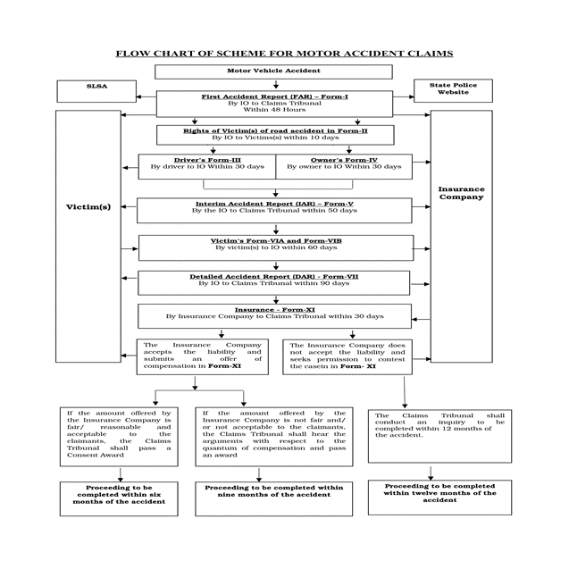

रजिस्ट्री सं. डी.एल.- 33004/99
REGD. No. D. L.-33004/99
सं. 161] नई दिल्ली, सोमवार, फरवरी 28, 2022/फाल्गुन 9, 1943
सा.का.नि. 164(अ)—मोटर यान अधिनियम, 1988 (1988 का 59) की धारा 212 की उपधारा (1) की अपेक्षानुसार, कें द्रीय मोटर यान नियम, 1989 का और संशोधन करने के लिए प्रारूप नियम, भारत सरकार के सड़क परिवहन और राजमार्ग मंत्रालय की अधिसूचना सं. सा.का.नि. 528(अ), तारीख 2 अगस्त, 2021 द्वारा भारत के राजपत्र, असाधारण, भाग 2, खंड 3, उपखंड (i) में प्रकाशित किए गए थे, उन सभी व्यक्तियों से, जिनके उनसे प्रभावित होने की संभावना थी, उस तारीख से, जिसको उक्त अधिसूचना से युक्त राजपत्र की प्रतियां जनता को उपलब्ध करा दी गई थीं, तीस दिन की अवधि की समाप्ति से पूर्व, आक्षेप और सुझाव आमंत्रित किए गए थे;
और, उक्त राजपत्र की प्रतियां, 3 अगस्त, 2021 को जनता को उपलब्ध करा दी गई थीं;
और, उक्त प्रारूप नियमों के संबंध में, जनता से प्राप्त आक्षेप और सुझावों पर कें द्रीय सरकार द्वारा विचार कर लिया गया है ।
अत:, अब, कें द्रीय सरकार, मोटर यान अधिनियम, 1988 (1988 का 59) की धारा 147 की उपधारा (2), धारा 149, धारा 159, धारा 160, धारा 161, धारा 162 की उपधारा (2), धारा 164क, धारा 164ख और धारा 164ग की उपधारा (2) के खंड (ट) द्वारा प्रदत्त शक्तियों का प्रयोग करते हुए, कें द्रीय मोटर यान नियम, 1989 का और संशोधन करने के लिए निम्नलिखित नियम बनाती है, अर्थात् :--
1. संक्षिप्त नाम और प्रारंभ - (1) इन नियमों का संक्षिप्त नाम कें द्रीय मोटर यान (पांचवां संशोधन) नियम, 2022 है । 1344 GI/2022
(1)2 THE GAZETTE OF INDIA : EXTRAORDINARY [PART II—SEC. 3(i)] (2) ये 1 अप्रैल, 2022 से प्रवृत्त होंगे ।
2. कें द्रीय मोटर यान नियम, 1989 (जिसे इसमें इसके पश्चात् उक्त नियम कहा गया है) के नियम 147 में, ''अभिलेख'' शब्द के पूर्व ''या तो इलेक्ट्रानिक रूप से या अन्यथा'' शब्द अंत:स्थापित किए जाएंगे ।
3. उक्त नियमों के नियम 150 में,--
(क) उपनियम (1) में,--
(i) ''धारा 158 की उपधारा (6)'' शब्द, कोष्ठक और अंक के स्थान पर, ''धारा 159'' शब्द और अंक रखे जाएंगे ;
(ii) ''प्ररूप 54 में होगी'' शब्दों के पश्चात् निम्नलिखित शब्द अंत:स्थापित किए जाएंगे, अर्थात् :-- ''और दुर्घटना सूचना रिपोर्ट दावा अधिकरण, बीमाकर्ता और अन्य ऐसे अभिकरण को, जो कें द्रीय सरकार द्वारा अधिसूचित किया जाए, प्रस्तुत किया जाएगा ।'';
(ख) उपनियम (2) में, ''धारा 160 के अधीन प्रतिकर का दावा करने के पात्र व्यक्ति'' शब्दों और अंकों के पश्चात् ''या बीमाकर्ता, जिसके विरुद्ध दावा किया गया है और अन्य ऐसे व्यक्ति, जो कें द्रीय सरकार द्वारा अधिसूचित किया जाए'' शब्द अंत:स्थापित किए जाएंगे ।
4. उक्त नियमों में, नियम 150 के पश्चात् निम्नलिखित नियम अंत:स्थापित किया जाएगा, अर्थात् :-- ''150क. सड़क दुर्घटना के अन्वेषण के लिए प्रक्रिया—मोटर यानों के उपयोग से पैदा हुई सभी दुर्घटनाओं के अन्वेषण के लिए अपनाई जाने वाली प्रक्रिया उपाबंध 13 के अनुसार होगी ।'' और ऐसे पोर्टल पर, जैसा कि निर्दिष्ट किया जा सकता है, इलेक्ट्रॉनिक रूप से प्रस्तुत करने सहित प्रस्तुत करने के तरीके और प्रपत्र में होगी ।''
5. उक्त नियमों में,--
(क) प्ररूप 51 में,--
(i) क्रम सं. 6 के पश्चात्, निम्नलिखित क्रम सं. अंत:स्थापित किया जाएगा, अर्थात् :--
''6क. यान के स्वामी का विधिमान्य मोबाइल संख्या.........'' ;
(ii) क्रम सं. 11 के पश्चात्, निम्नलिखित क्रम सं. अंत:स्थापित किया जाएगा, अर्थात् :--
| ''12. सभी यान | इस पॉलिसी में मोटर यान अधिनियम, 1988 की धारा 150(2)(ii) और (iii) ; (ख) और (ग) में यथा अपवर्जित मृत् यु, शारीरिक क्षति या नुकसान के लिए दायित् व नहीं आता है'' ; |
(ख) प्ररूप 54 में,--
(i) क्रम सं. 2 में, ''सीआर सं. '' अंकों से पूर्व, निम्नलिखित अंक अंत:स्थापित किए जाएंगे, अर्थात् :-- ''एफआईआर सं. /'' ;
(ii) क्रम सं. 2 के पश्चात्, निम्नलिखित अंत:स्थापित किया जाएगा, अर्थात् :--
''2क. ये धाराएं लागू होती हैं : भारतीय दंड संहिता...; मोटर यान अधिनियम :..--;
(iii) क्रम सं. 12 में, ''मार्ग परमिट विशिष्टियां'' शब्दों के पश्चात्, निम्नलिखित शब्द अंत:स्थापित किए जाएंगे, अर्थात् :--
''या, विशिष्टियों का उपयोग करने की अनुज्ञप्ति'' ।
6. उक्त नियमों में उपाबंध 12 के पश्चात्, निम्नलिखित उपाबंध अंत:स्थापित किया जाएगा, अर्थात् :--3 [भाग II—खण्ड 3(i)] भारत का राजपत्र : असाधारण
1. पुलिस द्वारा सड़क दुर्घटना मामलों का अन्वेषण
किसी सड़क दुर्घटना की सूचना प्राप्त होते ही, पुलिस अन्वेषण अधिकारी दुर्घटना स्थल का अन्वेषण करेगा, दुर्घटना स्थल का फोटो/वीडियो लेगा और दुर्घटना में शामिल यान (यानों) और स्के ल के माध्यम से स्थल प्लान तैयार करेगा, यथास्थिति, सड़क (सड़कों) या स्थान (स्थानों) के अभिन्यास और चौड़ाई को दर्शित करते हुए, यान (यानों) की स्थिति और इसमें शामिल व्यक्ति (व्यक्तियों) और ऐसे अन्य तथ्य, जो सुसंगत हों, अन्वेषण करेगा । क्षति के मामलों में, अन्वेषण अधिकारी अस्पताल में क्षति व्यक्तियों का फोटो भी लेगा । अन्वेषण अधिकारी प्रत्यक्षदर्शी साक्षियों/दर्शकों की परीक्षा करते समय स्थल जांच को संचालित करेगा ।
2. अड़तालीस (48) घंटे के भीतर दावा अधिकरण और बीमा कं पनी को दुर्घटना की सूचना दिया जाना अन्वेषण अधिकारी दुर्घटना के अड़तालीस (48) घंटे के भीतर प्ररूप 1 में प्रथम दुर्घटना रिपोर्ट (एफएआर) को प्रस्तुत करते हुए दावा अधिकरण को दुर्घटना की सूचना देगा । यदि बीमा पॉलिसी की विशिष्टियां उपलब्ध हैं, तो प्ररूप 1 में दुर्घटना की सूचना, उल्लंघन करने वाले यान के संबंधित बीमा कं पनी के नोडल अधिकारी को भी दी जाएगी । प्ररूप 1 की एक प्रति पीड़ित (पीड़ितों), राज्य विधिक सेवा प्राधिकरण, बीमाकर्ता को भी उपलब्ध कराई जाएगी और राज्य पुलिस की वेबसाइट पर, यदि उपलब्ध हो, भी अपलोड की जाएगी ।
3. सड़क दुर्घटना के पीड़ितों का अधिकार और प्ररूप 2 में उल्लिखित स्कीम का प्रवाह-चार्ट अन्वेषण अधिकारी द्वारा पीड़ित (पीड़ितों) को दिया जाना
अन्वेषण अधिकारी सड़क दुर्घटना के पीड़ित (पीड़ितों) के अधिकार और प्ररूप 2 में उल्लिखित स्कीम का प्रवाह-चार्ट का विवरण पीड़ित (पीड़ितों) या उनके विधिक प्रतिनिधियों को दुर्घटना के दस (10) दिन के भीतर देगा। अन्वेषण अधिकारी विस्तृत दुर्घटना रिपोर्ट (डीएआर) के साथ प्ररूप 2 की एक प्रति भी फाइल करेगा ।
4. ड्राइवर द्वारा अन्वेषण अधिकारी को ड्राइवर का प्ररूप प्रस्तुत किया जाना
अन्वेषण अधिकारी, दुर्घटना में शामिल यान (यानों) के ड्राइवर को प्ररूप 3 की एक खाली प्रति उपलब्ध कराएगा और ड्राइवर दुर्घटना के तीस (30) दिनों के भीतर अन्वेषण अधिकारी को प्ररूप 3 में सुसंगत जानकारी देगा ।
5. स्वामी द्वारा स्वामी का प्ररूप प्रस्तुत किया जाना
अन्वेषण अधिकारी, दुर्घटना में शामिल यान (यानों) के ड्राइवर को प्ररूप 4 की एक खाली प्रति उपलब्ध कराएगा और ड्राइवर दुर्घटना के तीस (30) दिनों के भीतर अन्वेषण अधिकारी को प्ररूप 4 में सुसंगत जानकारी देगा ।
6. अन्वेषण अधिकारी द्वारा दावा अधिकरण को अंतरिम दुर्घटना रिपोर्ट (आईएआर) प्रस्तुत किया जाना अन्वेषण अधिकारी दुर्घटना के पचास (50) दिनों के भीतर दावा अधिकरण को प्ररूप 5 में अंतरिम दुर्घटना रिपोर्ट (आईएआर) प्रस्तुत करेगा । आईएआर उसमें उल्लिखित दस्तावेजों के साथ होगा और दस्तावेजों के साथ आईएआर की एक प्रति दुर्घटना में शामिल यान (यानों) के बीमा कं पनी, पीड़ित (पीड़ितों)/दावाकर्ता, राज्य विधिक सेवा प्राधिकरण, बीमाकर्ता और साधारण बीमा परिषद् को दी जाएगी ।
7. अन्वेषण अधिकारी और बीमा कं पनी द्वारा ड्राइवर के प्ररूप और स्वामी के प्ररूप का सत्यापन
दुर्घटना में शामिल यान (यानों) की बीमा कं पनी के साथ ही साथ अन्वेषण अधिकारी प्ररूप 3 और प्ररूप 4 में उपबंधित सूचना और दस्तावेजों का सत्यापन करेगा और वीएएचएएन पर उपलब्ध जानकारी के माध्यम से या जारी करने के लिए तात्पर्यित रजिस्ट्रीकरण प्राधिकारी/व्यक्ति से लिखित में पुष्टि प्राप्त करने पर या ऐसे अन्य अन्वेषण या सत्यापन, जो आवश्यक समझे, दिए गए दस्तावेजों की प्रमाणिकता का सत्यापन करेगा । अन्वेषण अधिकारी विस्तृत दुर्घटना रिपोर्ट (डीएआर) के साथ दावा अधिकरणके समक्ष प्ररूप 10 में सत्यापन रिपोर्ट फाइल करेगा ।4 THE GAZETTE OF INDIA : EXTRAORDINARY [PART II—SEC. 3(i)] 8. पीड़ित (पीड़ितों) द्वारा अन्वेषण कार्यालय में पीड़ित प्ररूप का प्रस्तुत किया जाना
अन्वेषण अधिकारी दुर्घटना में पीड़ित (पीड़ितों) या उनके प्रतिनिधियों को प्ररूप 6 की एक खाली प्रति उपलब्ध कराएगा और वे दुर्घटना के साठ (60) दिनों के भीतर अन्वेषण अधिकारी को प्ररूप 6 में सुसंगत दस्तावेज और सुसंगत जानकारी देंगे ।
9. अवयस्क बच्चों के संबंध में पीड़ित (पीड़ितों) द्वारा पीड़ित प्ररूप प्रस्तुत किया जाना
र्क्त दुर्घटना के पीड़ित (पीड़ितों) के किसी बालक/बालकों की दशा में, अन्वेषण अधिकारी पीड़ित (पीड़ितों) को खाली प्ररूप 6क उपलब्ध कराएगा, जो सुसंगत जानकारी/सुसंगत दस्तावेजों से संलग्न भरा गया होगा और दुर्घटना के साठ (60) दिनों के भीतर उसे अन्वेषण अधिकारी को प्रस्तुत करेगा । उसके पश्चात्, अन्वेषण अधिकारी पीड़ित (पीड़ितों) से उपयु प्ररूप 6 और प्ररूप 6क प्राप्त होने के तीस (30) दिनों के भीतर बालक कल्याण समिति को डीएआर के साथ पीड़ित प्ररूप 6 और प्ररूप 6क की प्रति भेजेगा । यदि बालक को किशोर न्याय (बालकों की देखरेख और संरक्षण) अधिनियम, 2015 के उपबंधों के अनुसार देखभाल और संरक्षण की आवश्यकता है, तो समिति अभिनिश्चय करेगी । अन्वेषण अधिकारी डीएआर के साथ प्ररूप 6 और प्ररूप 6क की प्रतियां राज्य विधिक सेवा प्राधिकरण को बालक/बालकों की सहायता के लिए एक अधिवक्ता समनुदेषित करने हेतु उनके विधिक उपचारों/अधिकारों का उपभोग करने हेतु जिसके अंतर्गत शिक्षा भी शामिल है, पीड़ित (पीड़ितों) से उपयु र्क्त प्ररूप 6 और प्ररूप 6क के प्राप्त होने के तीस (30) दिनों के भीतर प्रतियां भेजेगा । 10. बीमा कं पनी द्वारा पीड़ित के प्ररूप का सत्यापन ।
अन्वेषण अधिकारी दस्तावेजों के साथ प्ररूप 6 और प्ररूप 6क की एक प्रति यान (यानों) की डीएआर के साथ दुर्घटना में शामिल बीमा कं पनी को भेजेगा, और बीमा कं पनी डीएआर की प्राप्ति की तारीख से तीस (30) दिनों के भीतर पीड़ितों द्वारा दी गई जानकारी और दस्तावेजों का सत्यापन करेगी ।
11. दुर्घटना के साठ (60) दिनों के भीतर पुलिस द्वारा दांडिक मामले का अन्वेषण पूरा किया जाना अन्वेषण अधिकारी दांडिक मामलों का अन्वेषण पूरा करेगा और दुर्घटना के साठ (60) दिनों के भीतर संबंधित दांडिक न्यायालय के समक्ष दंड प्रक्रिया संहिता की धारा 173 के अधीन रिपोर्ट फाइल करेगा और दावा अधिकरण के समक्ष प्रस्तुत किया गया डीएआर के साथ उक्त रिपोर्ट की एक प्रति भेजेगा ।
12. दावा अधिकरण के समक्ष अन्वेषण अधिकारी द्वारा डीएआर प्रस्तुत किया जाना
अन्वेषण अधिकारी उपाबंध में दी गई सूचना और दस्तावेजों का सत्यापन पूरा करेगा और दुर्घटना की तारीख से नब्बे (90) दिनों के भीतर प्ररूप 7 में डीएआर को दावा अधिकरण के पास भेजेगा । डीएआर में निम्नलिखित दस्तावेज शामिल होंगे—
(क) प्ररूप 8 के अनुसार स्थल नक्शा ;
(ख) प्ररूप 9 के अनुसार यांत्रिक अन्वेषण ;
(ग) प्ररूप 10 के अनुसार सत्यापन रिपोर्ट ;
(घ) दंड प्रक्रिया संहिता 1973 (1974 का 2) की धारा 173 के अधीन रिपोर्ट ।
13. डीएआर की प्रति को दुर्घटना में शामिल पीड़ित (पीड़ितों), यान (यानों) के स्वामी/ड्राइवर, बीमा कं पनी और राज्य विधिक सेवा प्राधिकरण को प्रस्तुत किया जाना
अन्वेषण अधिकारी उल्लंघनकारी यान के स्वामी/ड्राइवर, दुर्घटना के पीड़ित (पीड़ितों) को डीएआर की एक प्रति भेजेगा । अन्वेषण अधिकारी सुसंगत दस्तावेजों के साथ बीमा कं पनी के नोडल अधिकारी, साधारण बीमा परिषद् और राज्य विधिक सेवा प्राधिकरण को भी डीएआर की एक प्रति भेजेगा ।
14. अन्वेषण अधिकारी दावा अधिकरण से आवश्यक निर्देश की मांग कर सके गा
यदि ड्राइवर (ड्राइवरों), स्वामी (स्वामियों), बीमा कं पनी और/या दावाकर्ता इस उपाबंध के अधीन सुसंगत जानकारी और/या अपेक्षित दस्तावेज प्रकट करने में असफल रहता है, तो अन्वेषण अधिकारी दावा अधिकरण से आवश्यक निर्देश की मांग कर सके गा । दावा अधिकरण उसके पश्चात् व्यतिक्रम पक्षकारों को पन्द्रह (15) दिनों के भीतर इस उपाबंध के अनुसार सुसंगत दस्तावेजों के साथ अपेक्षित जानकारी को सीधे दावा अधिकरण को भेजने के लिए निदेश दे सके गा ।5 [भाग II—खण्ड 3(i)] भारत का राजपत्र : असाधारण 15. रजिस्ट्रीकरण प्राधिकारी का दस्तावेजों का सत्यापन करने का कर्तव्य
रजिस्ट्रीकरण प्राधिकारी पन्द्रह (15) दिनों के भीतर अन्वेषण अधिकारी द्वारा दिए गए आवेदनों का दुर्घटना में शामिल यान (यानों) के संबंध में रजिस्ट्रीकरण प्रमाणपत्र, चालन अनुज्ञप्ति, योग्यता और अनुज्ञा का सत्यापन करेगा ।
16. एमएलसी (चिकित्सा विधिक मामला) और शव परीक्षण रिपोर्ट जारी करने का अस्पताल का कत्र्तव्य
संबंधित अस्पताल दुर्घटना के पन्द्रह (15) दिनों के भीतर अन्वेषण अधिकारी को एमएलसी और शव परीक्षण रिपोर्ट जारी करेगा ।
17. आईएआर और डीएआर फाइल करने का समय बढ़ाना
जिन मामलों में अन्वेषण अधिकारी अपने नियंत्रण से बाहर के कारणों से 50 दिनों के भीतर आईएआर और/या 90 दिनों के भीतर डीएआर फाइल करने में असमर्थ होगा, जैसे कि हिट एंड रन दुर्घटनाओं के मामलों में; जहां पक्षकार न्यायालय के अधिकार क्षेत्र से बाहर रहते हैं; जहां ड्राइविंग लाइसेंस न्यायालय के अधिकार क्षेत्र से बाहर जारी किया गया हो, या जहां पीड़ित को गंभीर चोटें आई हों और उसका लगातार इलाज चल रहा हो, अन्वेषण अधिकारी आईएआर या डीएआर फाइल करने के लिए समय बढ़ाने के लिए दावा अधिकरण से संपर्क करेगा, जिस पर दावा अधिकरण प्रत्येक मामले के तथ्यों और परिस्थितियों के अनुसार उपयुक्त समय का विस्तार करेगा ।
18. दावा अधिकरण द्वारा एफएआर, आईएआर और डीएआर की जांच
दावा अधिकरण यह जांच करेगा कि क्या एफएआर, आईएआर और डीएआर सभी तरह से पूर्ण हैं या नहीं। यदि डीएआर हर तरह से पूर्ण हो तो दावा अधिकरण चालक (कों), मालिक (कों), दावेदार (ओं) और चश्मदीद (दों) को प्रस्तुत करने के लिए एक तारीख नियत करेगा और अन्वेषण अधिकारी उन्हें उस नियत तारीख को प्रस्तुत करेगा। अन्वेषण अधिकारी बीमा कं पनी के नोडल अधिकारी को दावा अधिकरण द्वारा निर्धारित तिथि की सूचना देगा और बीमा कं पनी यथा नियत तारीख पर अपनी उपस्थिति सुनिश्चित करेगी। यदि एफएआर, आईएआर, और डीएआर पूर्ण नहीं हों तो दावा अधिकरण अन्वेषण अधिकारी को इसे पूरा करने का निर्देश देगा और उसकी पूर्णता के लिए एक तारीख नियत करेगा।
19. चालक (कों), मालिकों (कों), दावेदार (ओं) और प्रत्यक्षदर्शी साक्षियों को दावा अधिकरण के समक्ष प्रस्तुत करने का अन्वेषण अधिकारी का कर्तव्य
दावा अधिकरण द्वारा डीएआर के हर प्रकार से पूर्ण होने के आदेश दिए जाने के पश्चात् अन्वेषण अधिकारी चालक (कों), मालिक (कों), दावेदार (ओं) और चश्मदीद गवाहों को दावा अधिकरण के समक्ष प्रस्तुत करेगा। हालांकि, अगर अन्वेषण अधिकारी अपने नियंत्रण से बाहर के कारणों के कारण मालिक (कों), चालक (कों), दावेदार (ओं) और प्रत्यक्षदर्शी साक्षियों को दावा अधिकरण द्वारा नियत तारीख को प्रस्तुत करने में असमर्थ हो तों दावा अधिकरण उन्हें अन्वेषण अधिकारी के माध्यम से 30 दिनों के भीतर दावा अधिकरण के समक्ष पेश होने की तारीख के लिए नोटिस जारी कर सकता है। अन्वेषण अधिकारी संबंधित बीमा कं पनी के नोडल अधिकारी को दावा अधिकरण के समक्ष डीएआर दाखिल करने की तारीख के बारे में अग्रिम सूचना देगा ताकि बीमा कं पनी के लिए नामित वकील सुनवाई की पहली तारीख को दावा अधिकरण के समक्ष उपस्थित रह सके ।
20. पुलिस के कर्तव्यों को राज्य पुलिस अधिनियम का हिस्सा माना जाएगा
ऊपर बताए गए पुलिस के कर्तव्य को संबंधित राज्य पुलिस अधिनियम में शामिल हुआ माना जाएगा और इसके किसी भी उल्लंघन का परिणाम उस विधि में परिकल्पित अनुसार होगा।
21. दावा अधिकरण डीएआर को मोटर वाहन अधिनियम, 1988 की धारा 166 की उपधारा (4) के अधीन प्रतिकर की दावा याचिका माना जाएगा
(1) दावा अधिकरण अन्वेषण अधिकारी द्वारा दायर डीएआर को मोटर वाहन अधिनियम, 1988 की धारा 166 की उपधारा (4) के अधीन दावा याचिका माना जाएगा। तथापि, जहां अन्वेषण अधिकारी सुनवाई की पहली तारीख को दावेदार (ओं) को पेश करने में असमर्थ हो तो दावा अधिकरण दावेदार (ओं) की उपस्थिति के बाद डीएआर को दावा याचिका के रूप में रजिस्टर करेगा।
(2) जहां दावेदार (ओं) ने एक अलग दावा याचिका दायर की है, वहां दावा याचिका के साथ डीएआर को टैग किया जा सकता है।6 THE GAZETTE OF INDIA : EXTRAORDINARY [PART II—SEC. 3(i)] (3) यदि डीएआर के दाखिल करने के समय दंड प्रक्रिया संहिता, 1973 (1974 का 2) की धारा 173 के अधीन रिपोर्ट दायर नहीं किया गया हो तो, दावा अधिकरण या तो समय दंड प्रक्रिया संहिता, 1973 (1974 का 2) की धारा 173 के अधीन रिपोर्ट दाखिल करने तक प्रतीक्षा कर सकते हैं या निर्णय पारित करने से पहले लापरवाही से बचने के लिए खुद को संतुष्ट करने हेतु प्रत्यक्षदर्शी साक्षियों का बयान लिया जाए।
(4) दावा अधिकरण एफएआर को एक प्रकीर्ण आवेदन के रूप में रजिस्टर करेगा और आईएआर के साथ-साथ डीएआर को उसी प्रकीर्ण आवेदन में रिकॉर्ड करेगा।
22. अत्यधिक तेज और लापरवाही से वाहन चलाने के मामले
यदि डीएआर और विशेष रूप से, दंड प्रक्रिया संहिता, 1973 (1974 का 2) की धारा 173 के अधीन रिपोर्ट में अत्यधिक तेज और लापरवाही से वाहन चलाने का मामला सामने आता है तो दावा अधिकरण को मोटर वाहन अधिनियम की धारा 166 के अधीन मामले को रजिस्टर करेगा। तथापि, ऐसे मामलों में जहां डीएआर में लापरवाही का आरोप नहीं दर्ज होता है या दावेदार लापरवाही का आरोप लगाए बिना नो-फॉल्ट के आधार पर प्रतिकर का दावा करना चुनते हैं वहां दावा अधिकरण दावे को मोटर वाहन अधिनियम, 1988 की धारा 164 के अधीन मामले के रूप में रजिस्टर करेगा। 23. डीएआर की प्रति प्राप्त होने के 10 दिनों के भीतर नामित अधिकारी नियुक्त करने का बीमा कं पनी का कर्तव्य दुर्घटना की पहली सूचना (एफएआर) की प्रति प्राप्त होने पर, बीमा कं पनी 10 दिनों के भीतर उस मामले के लिए एक नामित अधिकारी नियुक्त करेगी। नामित अधिकारी उस मामले के निपटारे/प्रसंस्करण और दावेदार (ओं) को विधि के अनुसार देय प्रतिकर के संबंध में लिखित रूप में एक तर्क संगत निर्णय पारित करने के लिए दायी होगा।
24. बीमा कं पनियों का एक नोडल अधिकारी नियुक्त करने और राज्य पुलिस को सूचित करने का कर्तव्य।
सभी बीमा कं पनियां एक नोडल अधिकारी नियुक्त करेंगी और अपने नोडल अधिकारी का नाम, पता, फोन नंबर/मोबाइल नंबर और ई- मेल पता राज्य पुलिस को सूचित करेंगी और मोटर दुर्घटना दावों के अन्वेषण से संबंधित राज्य पुलिस के सभी अन्वेषण अधिकारी नोडल अधिकारी को ई-मेल द्वारा संबंधित फॉर्म और दस्तावेज भेजेंगे।
25. दावे को सत्यापित करने का बीमा कं पनियों का कर्तव्य
बीमा कं पनियां प्रत्येक दावे की सत्यता/वास्तविकता को सत्यापित करने के लिए बाध्य हैं। बीमा कं पनियाँ दावे को सत्यापित करने के लिए अपने स्वयं के अधिकारी (अधिकारियों) को निर्देशित करेंगी या एक अन्वेषक या सर्वेक्षक नियुक्त करेंगी।
यदि डीएआर में दिए गए विवरण गलत पाए जाते हैं, तो नामित अधिकारी सर्वेक्षक/अन्वेषक की रिपोर्ट की प्रति संबंधित डीसीपी को भेजेगा। यदि अन्वेषण करने पर बीमा कं पनी को फर्जी दुर्घटना का मामला मिलता है, तो बीमा कं पनी संबंधित डीसीपी के समक्ष दोषी वाहन के चालक के कॉल डिटेल रिकॉर्ड (सीडीआर) की मांग करने के लिए एक आवेदन दायर करने के लिए स्वतंत्र है।
26. डीएआर के 30 दिनों के भीतर बीमा कं पनी द्वारा दावा अधिकरण के समक्ष प्ररूप 11 प्रस्तुत किया जाना यदि प्रतिकर का भुगतान करने का दायित्व विवादित नहीं है, तो बीमा कं पनी दुर्घटना की सूचना की तारीख से 30 दिनों के भीतर विधि के अनुसार दावेदार (ओं) को देय प्रतिकर की राशि के बारे में निर्णय लेगी। बीमा कं पनी के नामित अधिकारी द्वारा लिया गया निर्णय लिखित रूप में एक तर्क युक्त निर्णय होगा, और दावा अधिकरण के समक्ष प्ररूप 11 में प्रस्तुत किया जाएगा। यदि बीमा कं पनी प्रतिकर का भुगतान करने के दायित्व को स्वीकार नहीं करती है, तो वह प्ररूप 11 में बचाव के आधार का खुलासा करेगी और उक्त फॉर्म के साथ सर्वेयर/अन्वेषक की रिपोर्ट की प्रति दायर करेगी।
27. जहां दावेदार बीमा कं पनी के प्रस्ताव को स्वीकार करते हैं वहां सहमत निर्णय पारित किया जाना
बीमा कं पनी के नामित अधिकारी द्वारा मूल्यांकन किए गए प्रतिकर में दावेदार (ओं) के लिए एक विधिक प्रस्ताव शामिल होगा और यदि उक्त राशि दावेदार (ओं) के लिए उचित और स्वीकार्य है, तो दावा अधिकरण एक सहमत-निर्णय पारित करेगा और निर्णीत राशि जमा करने के लिए बीमा कं पनी को 30 दिनों का समय देगा। तथापि, सहमत-निर्णय पारित करने से पहले, दावा अधिकरण यह सुनिश्चित करेगा कि दावेदार (ओं) को विधि के अनुसार उचित प्रतिकर दिया जाए। दावा अधिकरण यह सुनिश्चित करेगा कि दुर्घटना की तारीख से छह महीने के भीतर सहमत-निर्णय पारित किया जाए। 28. दावेदार (ओं) को 30 दिनों के भीतर बीमा कं पनी के प्रस्ताव का जवाब देना होगा7 [भाग II—खण्ड 3(i)] भारत का राजपत्र : असाधारण यदि दावेदार बीमा कं पनी के प्रस्ताव का तुरंत जवाब देने की स्थिति में नहीं हैं, तो दावा अधिकरण उन्हें उक्त प्रस्ताव का जवाब देने के लिए 30 दिनों से अधिक का समय नहीं देगा।
29. समाधान प्राप्त न होने की स्थिति में, दावा अधिकरण जांच करवाएगा और 30 दिनों के भीतर निर्णय पारित करेगा यदि बीमा कं पनी का प्रस्ताव उचित नहीं है या दावेदार (ओं) को स्वीकार्य नहीं है या यदि बीमा कं पनी के पास विधि के अधीन इसके लिए कोई बचाव उपलब्ध है, तो दावा अधिकरण मोटर वाहन अधिनियम, 1988 के धारा 168 और धारा 169 के अधीन जांच करवाएगा। दावा अधिकरण दुर्घटना की तारीख से नौ महीने के भीतर सभी पक्षों को सुनने के बाद एक निर्णय पारित करेगा।
30. ऐसे मामले जहां बीमा कं पनी दायित्व पर विवाद करती है
यदि बीमा कं पनी प्रतिकर का भुगतान करने के दायित्व पर विवाद करती है, तो वह प्ररूप 11 में बचाव के आधार का खुलासा करेगी। यदि दावा अधिकरण सबूतों की रिकॉर्डिंग को आवश्यक समझता है, तो दावा अधिकरण मोटर यान अधिनियम की धारा 168 और धारा 169 के अनुसार दुर्घटना की तारीख से एक वर्ष के भीतर पूरी की जाने वाली जांच करेगा। यदि दावा अधिकरण एक वर्ष के भीतर जांच पूरी करने में असमर्थ है, तो वह निर्णय में इसके कारणों को दर्ज करेगा। यदि बीमा कं पनी स्थानीय आयुक्त की फीस वहन करने को तैयार हो तो, दावा अधिकरण स्थानीय आयुक्त द्वारा साक्ष्य की रिकॉर्डिंग का निर्देश दे सकता है।
31. सत्य को उजागर करने का दावा अधिकरण का कर्तव्य
डीएआर के आधार पर निर्णय पारित करने से पहले, दावा अधिकरण खुद को संतुष्ट करेगा कि डीएआर में दिए गए बयान सही हैं और दावे की वास्तविकता के साथ-साथ सभी प्रासंगिक तथ्यों के संबंध पर वह संतुष्ट है। दावा अधिकरण साक्ष्य अधिनियम, 1872 (1872 का 1) की धारा 165 के अधीन पक्षों की परीक्षा करने पर विचार कर सकता है। 32. निर्णय पारित करने से पहले दावेदार (ओं) की परीक्षा
(1) दावा अधिकरण, निर्णय पारित करने से पहले या उसके समय, दावेदार (ओं) की वित्तीय स्थिति / आवश्कताओं, संवितरण के तरीके और सावधि जमा में रखी जाने वाली राशि का पता लगाने के लिए जांच करेगा।
(2) दावा अधिकरण यह सुनिश्चित करेगा कि निर्णीत राशि दिए जाने से पूर्व दावेदार (ओं) के निम्नलिखित दस्तावेजों को रिकॉर्ड में लिया जाए :
(क) आधार कार्ड और पैन कार्ड;
(ख) उचित पृष्ठांकन के साथ दावेदार (दावेदार (ओं)) के निवास के पास स्थित उनका आधार से लिंक बैंक खाता (खातों) का विवरण; तथा
(ग) दावेदार (ओं) के 2 फोटो और नमूना हस्ताक्षर।
33. दावा अधिकरण के समक्ष पक्षकारों द्वारा दायर की जाने वाली लिखित प्रस्तुतियाँ
यदि लिखित प्रस्तुतियाँ दाखिल करने की आवश्यकता होती है, तो दोनों पक्ष मृत्यु के मामलों के लिए प्ररूप 13 और चोट के मामलों के लिए प्ररूप 14 में दावा अधिकरण के समक्ष प्रतिकर की गणना के संबंध में लिखित प्रस्तुतियाँ दाखिल करेंगे। 34. निर्णीत राशि जमा करना
दावा अधिकरण द्वारा प्रतिकर का भुगतान करने के लिए उत्तरदायी प्रतिवादी दावेदार (ओं) को प्रतिकर की राशि जमा करने की सूचना देगा और 15 दिनों के भीतर जमा की सूचना की तारीख तक के ब्याज सहित मुआवजे की राशि जमा करने के संबंध में दावा अधिकरण में एक अनुपालन रिपोर्ट दर्ज करेगा और इसकी एक प्रति निर्णय के 30 दिनों के भीतर दावेदार (ओं) के वकील को भेजेगा।
35. निर्णीत राशि का संवितरण
निर्णीत राशि के संवितरण का मोड दावा अधिकरण द्वारा निर्धारित किया जाएगा ।
36. निर्णीत राशि का संरक्षण
दावा अधिकरण, दावेदार (ओं) की वित्तीय स्थिति और वित्तीय आवश्यकता के आधार पर, ऐसी राशि जारी करेगा जो आवश्यक समझे और शेष राशि को चरणबद्ध तरीके से जारी करने हेतु सावधि जमा में रखने का निर्देश देगा। 37. दावा अधिकरण, अधिनिर्णय के उपबंधों की अनुपालना सुनिश्चित करेगा8 THE GAZETTE OF INDIA : EXTRAORDINARY [PART II—SEC. 3(i)] दावा अभिकरण, मृत्यु के मामलों के लिए प्ररुप 15 और चोट संबंधी मामलों के लिए प्ररुप 16 में प्रतिकर की संगणना का सार सम्मिलित करेगा । दावा अभिकरण, इस उपाबंध में प्ररुप 17 में विहित प्रक्रिया की अनुपालना को भी सम्मिलित करेगा ।
38. दावा अभिकरण अनुपालना की रिपोर्ट हेतु एक तारीख नियत करेगा
(1) दावा अभिकरण, इस उपाबंध में दी गई प्रक्रिया के साथ अनुपालना रिपोर्ट हेतु कोई तारीख नियत करेगा और बीमा कं पनी और/या चालक/स्वामी को निदेश देगा कि प्रतिकर की रकम अद्यतन ब्याज सहित, निक्षेप करने का साक्ष्य अभिलेख पर रखे और निक्षेप की सूचना इस प्रकार नियत तारीख को ब्याज की संगणना के साथ प्रस्तुत करे । ऐसा साक्ष्य फाइल करने पर, दावा अभिकरण यह सुनिश्चित करेगा कि निक्षेप की सूचना की तारीख तक ब्याज संबद्ध पक्षकार द्वारा निक्षेपित किया गया है ।
(2) यदि अधिनिर्णय की रकम विनिर्दिष्ट अवधि के भीतर निक्षेपित नहीं की जाती है तो दावा अभिकरण किसी अधिनिर्णय की तारीख से 90 दिन की अवधि के अवसान के पश्चात्, इस संबंध में डिग्री धारक के आवेदन पर मोटर यान अधिनियम, 1988 की धारा 169 की उपधारा (4) और धारा 174 के अनुसार अधिनिर्णय का निष्पादन करेगा
(3) दावा अभिकरण, इस संबंध में उच्चतम न्यायालय द्वारा अधिकथित सिद्धांतों के अनुसार उसके अधिनिर्णय का निष्पादन करेगा और यदि उच्च न्यायालय द्वारा दावा अभिकरण के अधिनिर्णय का स्थगन कर दिया जाता है तो दावा अभिकरण, दावेदार(रों) को अपील के विनिश्चय के पश्चात् इसे पुन:प्रारंभ करने की स्वतंत्रता के साथ, मामले को बंद करेगा ।
39. संबद्ध दांडिक न्यायालय को डीएआर की प्रति के साथ अधिनिर्णय का भेजा जाना
दावा अभिकरण, संबद्ध दांडिक न्यायालय को अधिनिर्णय की एक सत्यापित प्रति भेजेगा । अन्वेषण अधिकारी, दावा अभिकरण के समक्ष उसे प्रस्तुत करने के 7 दिन की अवधि के भीतर संबद्ध दांडिक न्यायालय के समक्ष डीएआर की एक प्रति प्रस्तुत करेगा । अन्वेषण अधिकारी, अधिनिर्णय पारित करने के 7 दिन की अवधि के भीतर संबद्ध दांडिक न्यायालय के समक्ष दावा अभिकरण द्वारा पारित अधिनिर्णय की एक प्रति भी प्रस्तुत करेगा ।
40. राज्य विधिक सेवा प्राधिकरण को अधिनिर्णय की प्रति का भेजा जाना
दावा अभिकरण, राज्य विधिक सेवा प्राधिकरण को अधिनिर्णय की एक प्रति भेजेगा ।
41. दावा अभिकरण के अधिनिर्णयों का रिकार्ड
दावा अभिकरण द्वारा पारित अधिनिर्णयों का रिकार्ड, अधिनिर्णय की तारीख के अनुसार कालानुक्रमिक क्रम में ऐसी रीति में रखा जाएगा जिससे मुकदमेबाजों/वकीलों को यह सुनिश्चित करने में आसानी हो कि प्रतिकर प्राप्त हो गया है या नहीं । का रिकार्ड का प्रारुप, प्ररुप-18 में होगा ।
42. राज्य विधिक सेवा प्राधिकरण द्वारा संबद्ध दांडिक न्यायालय के समक्ष पीड़ित समाघात रिपोर्ट फाइल की जाना ।
प्ररुप – I
दुर्घटना की सूचना की प्राप्ति के 48 घंटे के भीतर
पीड़ित(तों) और बीमा कं पनी तथा राज्य विधिक सेवा प्राधिकरण (एसएलएसए) को प्रति
| प्रथम सूचना रिपोर्ट संख् या | |
| तारीख | |
| धारा के अधीन | |
| पुलिस स् टेशन | |
| 1. | दुर्घटना की तारीख |
| 2. | दुर्घटना का समय |
| 3. | दुर्घटना का स् थान |
| 4. | जानकारी का स्रोत |
| स ूचनादाता का नाम, पता और मोबाइल संख् या | |
| नाम | |
| मोबाइल संख् या | |
| पता | |
| 5. | दुर्घटना की प्रकृ ति |
| अंतर्वलित आघाती यानों की स ंख् या | |
| क् या आघाती यान का रजिस् ट्रीकरण संख् यांक ज्ञात है ? | |
| क् या आघाती यान का पुलिस द्वारा संपहरण किया गया है ? | |
| क् या आघाती यान का चालक घटना स् थान पर पाया गया है ? | |
| घातक चोटों की संख् या | |
| चोटिलों की संख् या | |
| 6. | ऐसे अस् पताल के ब् यौरे जहां पीड़ित (तों) को ले जाया गया |
| अस् पताल का नाम |
| पता | NaN | ||||||
| डाक् टर का नाम | NaN | ||||||
| 7. | सीसीटीवी फु टेज की उपलभ् यता, यदि हां, तो सीसीटीवी फु टेज को संरक्षित किया जाए और डीएआर के साथ फाइल किया जाए । | हां नहीं | NaN | ||||
| 8. | स् वामी (यों), चालक (कों) और बीमायान(यानों) के ब् यौरे | NaN | |||||
| ब् यौरे | यान नं. 1 (आघाती यान) | यान 2 | NaN | ||||
| यान ब् यौरे | NaN | ||||||
| यान रजिस् ट्रीकरण स ंख् यांक | NaN | ||||||
| यान ब् यौरे | NaN | ||||||
| चालक का नाम | NaN | ||||||
| चालक का पता | NaN | ||||||
| चालक का मोबाइल स ंख् या | NaN | ||||||
| स् वामी के ब् यौरे | NaN | ||||||
| स् वामी का नाम | NaN | ||||||
| स् वामी का पता | NaN | ||||||
| स् वामी का मोबाइल नं. | NaN | ||||||
| बीमा ब् यौरे | NaN | ||||||
| बीमा पालिसी स ंख् यांक | NaN | ||||||
| बीमा पालिसी की अवधि | NaN | ||||||
| बीमा कं पनी का नाम | NaN | ||||||
| बीमा कं पनी का पता | NaN | ||||||
| 9 . | पीड़ित (तों) के ब् यौरे | NaN | |||||
| नाम मृतक/चोटिल | पता और संपर्क ब् यौरे | NaN | |||||
| i. | NaN | ||||||
| ii. | NaN | ||||||
| iii. | NaN | ||||||
| iv. | NaN | ||||||
| v. | NaN | ||||||
| vi. | NaN | ||||||
| 10. | अन् य दुर्घटना ब् यौरा | NaN | |||||
| i. | दर्ज करने की तारीख और दिनांक | NaN | |||||
| ii. | लैंडमार्क | NaN | |||||
| iii. | गंभीरता | घातक गंभीर चोट साधारण चोट अस्पताल में भर्ती साधारण चोट गैर अस्पताल में भर्ती कोई चोट नहीं | NaN | ||||
| iv. | गिनती | घायल | मृतक | NaN | |||
| चालकों | NaN | ||||||
| यात्रियों | NaN | ||||||
| पैदल यात्रियों | NaN | ||||||
| पशु | NaN | ||||||
| v. | टक् क् र का प्रकार | वाहन से वाहन वाहन से पैदल यात्री वाहन से साइकिल वाहन से तिपहिया वाहन से पशु चालित गाड़ी वाहन से पशु फिसलना | NaN | ||||
| vi. | टक् कर की प्रकृ ति | सीधी टक्कर पार्क किए गए वाहन को टक् कर पेड़ को टक् कर स्थायी/स्थिर वस्तु को टक् कर पीछे से टक् कर साइड से टक् कर | NaN |
| सड़क से बाहर निकलना पलटना फिसलना / उलटना साइडस्वाइप वाहना का तंग नदी घाटी/खाई/कु ं ए में गिरना वाहन का नदी में गिरना | ||
| vii. | दुर्घटना स्थल का प्रारंभिक अवलोकन | बाहरी वक्र पर पैरापेट/क्रै श बैरियर का प्रावधान न होना लंबी दूरी तय करना/चालक का आराम ना करना वाहन से नीचे गिरना सड़क पर अवैध पार्किं ग ब्लाइंड बेंड / कर्व शराब का सेवन लोड वाहन में लोगों को ले जाना लापरवाही से लेन बदलना खतरनाक ओवरटेकिं ग चालक का ध् यान भटकना यातायात के विपरित दिशा में ड्राइविंग मादक पदार्थों का सेवन उच्च गति असावधानीपूर्वक मोड़ना सड़क की दशा के कारण दुर्घटना मौसम की स्थिति के कारण दुर्घटना भारी यातायात के कारण दुर्घटना मार्गाधिकार नियमों का अनुपालन ना करना र ेड लाइट जंप करना अतिभारित वाहन में खराबी के कारण दुर्घटना ज़ ेबरा क्रॉसिंग पार करते समय ओवर स्पीड स्पीड ब्रेकर पार करते समय ओवर स्पीड |
| viii. | मौसम की स्थिति | धूप / साफ़ बादल हलकी बारिश |
| भारी वर्षा कॉजवे / नालों की बाढ़ ओला / स्लीट बर्फ धुआं / धूल तेज हवा सर्दी गरमी | ||
| ix. | प्रकाश की स्थिति | दिन शाम स्ट्रीट लाइट के साथ अंधेरा खराब स्ट्रीट लाइट के साथ अंधेरा अंधेरा-कोई स्ट्रीट लाइट नहीं |
| x. | दुर्घटना का स् थान | आवासीय क्षेत्र बाजार क्षेत्र स ंस्थान क्षेत्र ख ुला हुआ वाणिज्यिक क्षेत्र विद्यालयी क्षेत्र कॉलेज क्षेत्र अन्य शैक्षिक संस्थान क्षेत्र (निर्दिष्ट) सरकारी संस्थान क्षेत्र अस्पताल क्षेत्र औद्योगीक क्षेत्र हार्बर जोन |
| xi. | दृश् यता | 25 मीटर से कम 25 मीटर 50 मीटर 75 मीटर 100 मीटर और उससे अधिक |
| xii. | भार की स्थिति(1) | अतिरिक्त यात्री |
| सामान्य रूप से भरी हुई खाली ज्ञात नहीं है | ||
| xiii. | भार की स्थिति (2) | अतिरिक्त माल अधिक ऊं चाई में माल रियर ओवरहैंगिंग माल साइड ओवरहैंगिंग माल सामान्य रूप से लदा हुआ खाली ज्ञात नहीं है |
| xiv. | सड़क वर्गीकरण | एक्सप्रेसवे राष्ट्रीय राजमार्ग राज् यीय राजमार्ग प्रमुख जिला सड़क अन्य जिला सड़क ग्राम सड़क आर्टिरीअल रोड़ सब आर्टिरीअल रोड़ कलेक्टर सड़क स्थानीय सड़क |
| xv. | स् थानीय निकाय | निगम नगर पालिका पंचायत |
थानाध्यक्ष/अन्वेषण अधिकारी
पीआईएस/कर्मचारी संख्यांक. : _________________
दूरभाष संख्यांक. : _________________
पुलिस स्टेशन: _________________
तारीख : _________________ दस्तावेज संलग्न किए जाएं
i. एफ आई आर की प्रति
संलग्न किए जाने वाले इमेज/वीडियो:
i. वाहन का मुख्य विश्राम स्थल
ii. वाहन को नुकसान
iii. परिसंपत्ति को नुकसान15 [भाग II—खण्ड 3(i)] भारत का राजपत्र : असाधारण iv. सड़क पर वस्तुओं की बाधाएं
v. जंक्शन/सड़क का प्रकार
vi. सड़क की सतह
vii. फिसलने के निशान
viii. परिवेश
ix. कोई भी विशेषता जिसने दुर्घटना में योगदान दिया हो
x. अन्य इमेज
xi. अन्य वीडियो
प्ररुप II
सड़क दुर्घटना के पीड़ित (पीड़ितों) के अधिकार और नीचे उल्लिखित स्कीम का फ्लो चार्ट
दुर्घटना के दस दिनों के भीतर पीड़ित/परिवार/सदस्यों/विधिक प्रतिनिधियों को अन्वेषण अधिकारी द्वारा दिया जाएगा 1. तत्काल चिकित्सा सहायता और उपचार का अधिकार।
2. एफ आई आर की प्रति का अधिकार।
3. प्ररुप-1 में प्रथम दुर्घटना रिपोर्ट (एफएआर) का अधिकार।
4. प्ररुप -2 में इस स्कीम के फ्लो चार्ट और पीड़ित के अधिकारों की प्रति का अधिकार।
5. प्ररुप-3 में चालक के अधिकारों के साथ दस्तावेजों की प्रति का अधिकार।
6. प्ररुप - 4 में स्वामी के अधिकारों के साथ दस्तावेजों की प्रति का अधिकार।
7. प्ररुप 5 में अनंतिम दुर्घटना रिपोर्ट (आईएआर) की प्रति के साथ दस्तावेजों का अधिकार।
8. पीड़ित के प्ररुप 6 और प्ररुप 6क के खाली प्रारुप की प्रति का अधिकार।
9. प्ररुप-7 में विस्तृत दुर्घटना रिपोर्ट (डीएआर), दस्तावेजों के साथ, की प्रति का अधिकार।
10. बीमा प्ररुप -11 की प्रति का अधिकार।
11. दंड प्रक्रिया संहिता, 1973 (1974 का 2) की धारा 173 के अधीन रिपोर्ट की प्रति का अधिकार। 12. प्ररुप- 12 में पीड़ित समाघात रिपोर्ट की प्रति का अधिकार।
13. एमएलसी और पोस्टमाटर्म की रिपोर्ट की प्रति का अधिकार।
14 दिल्ली राज्य विधिक सेवा प्राधिकरण से नि:शुल्क विधिक सहायता का अधिकार।
15. दावा अधिकरण के समक्ष व्यक्तिगत रुप से या वकील के माध्यम से उपस्थित होने का अधिकार। 16. पीड़ित के किसी अवयस्क बालक/ बालकों (18 वर्ष या उससे कम) को उनकी आवश्यकताओं और प्रास्थिति की जांच हेतु, जांच अधिकारी द्वारा बाल कल्याण समिति को भेजे जाने का अधिकार ।
17.पीड़ित के किसी अवयस्क बालक/बालकों (18 वर्ष या उससे कम) का बाल कल्याण समिति द्वारा जिला बाल कल्याण संरक्षण अधिकारी के माध्यम से उनकी भलाई, चिकित्सा आवश्यकताओं, सुरक्षा, पोषण आदि की जांच कराने का अधिकार।
18.पीड़ित के किसी अवयस्क बालक/बालकों (18 वर्ष या उससे कम) को किशोर न्याय (बालकों की देखभाल और संरक्षण) अधिनियम, 2015 के सभी फायदे प्राप्त करने का अधिकार होगा यदि ऐसी बाल कल्याण समिति किसी बालक के देखभाल और संरक्षण (सीएनसीपी) की आवश्यकता हेतु निष्कर्ष पर पहुंचती है ।16 THE GAZETTE OF INDIA : EXTRAORDINARY [PART II—SEC. 3(i)] 19. किशोर न्याय बालकों की देखभाल और संरक्षण अधिनियम, 2015 के अधीन उपबंध के अनुसार, पीड़ित के ऐसे अवयस्क बालक/बालकों को बाल गृह में रखे जाने का अधिकार, जहां माता-पिता दोनों की मृत्यु हो गई है या जीवित माता-पिता बालक की देखभाल करने में असमर्थ हैं ।
20. दिल्ली उच्च न्यायालय द्वारा विरचित यान दुर्घटना दावा हेतु स्कीम के अधीन प्रतिकर प्राप्त करने का अधिकार। उपरोक्त स्कीम का फ्लो चार्ट संलग्न किया जाता है ।
थानाध्यक्ष/अन्वेषण अधिकारी
पी आई एस/कर्मचारी संख्यांक दूरभाष सं.............
पुलिस स्टेशन.................
तारीख................
पीड़ित/परिवार के सदस्यों/विधिक प्रतिनिधियों की अभिस्वीकृ ति
मुझे, यह प्ररुप और स्कीम का फ्लो चार्ट पीड़ित के एक खाली प्ररुप- 6 और प्ररुप- 6क की प्रति के साथ प्राप्त हुआ है । ........................................
पीड़ित/परिवार के सदस्य/विधिक प्रतिनिधि
तारीख......................
मोटर दुर्घटना दावों के लिए स्कीम का फ्लो चार्ट
मोटर यान दुर्घटना
| एस एल एस ए पीड़ित (पीड़ितों) | प्रथम दुर्घटना रिपोर्ट (एफएआर) – प्ररुप 1 48 घंटे के भीतर दावा अभिकरण को आईओ द्वारा | राज् य पुलिस वैब साइट | |
| प्ररुप 2 में सड़क दुर्घटना के पीड़ित (पीड़ितों के अधिकार) दस दिन के भीतर पीड़ित (पीड़ितों) को आई ओ द्वारा | ब ीमा कं पनी | ||
| चालक का प्ररुप 3 30 दिन के भीतर आई ओ को चालक द्वारा | स् वामी का प्ररुप 4 30 दिन के भीतर आई ओ को स् वामी द्वारा | ||
| अंतरिम दुर्घटना रिपोर्ट (आईएआर) – प्ररुप 5 50 दिन के भीतर दावा अभिकरण को आईओ द्वारा | |||
| पीड़ित का प्ररुप 6क और प्ररुप 6ख साठ दिनों के भीतर पीड़ित (पीड़ितों ) द्वारा | |||
| विस् तृत दुर्घटना रिपोर्ट (डीएआर) – प्ररुप 7 90 दिनों के भीतर दावा अभिकरण को आईओ द्वारा | |||
| बीमा – प्ररुप 11 तीस दिनों के भीतर दावा अभिकरण को बीमा कं पनी द्वारा | |||
| बीमा कं पनी दायित् व स् वीकार करती है और प्ररुप 11 में प्रतिकर की प्रस् थापना प्रस् तुत करती है । | बीमा कं पनी दायित् व को स् वीकार नहीं करती है और प्ररुप 11 में मामले के प्रतिवाद की अनुज्ञा की ईप् सा करती है । |
| दि बीमा कं पनी द्वारा प्रस् थापित रकम उचित / युक् ितयुक् त है और दावेदारों को स् वीकार्य है तो दावा अभिकरण सहमति अधिनिर्णय पारित करेगा । | यदि बीमा कं पनी द्वारा प्रस् थापित रकम उचित नहीं है और/या दावेदारों द्वारा स् वीकार्य नहीं है तो दावा अभिकरण प्रतिकर के रकम के संबंध में बहस की सुनवाई करेगा और अधिनिर्णय पारित करेगा । |
| ु र्घटना के छह मास के भीतर कार्यवाहियां पूर्ण की जाएं । | दुर्घटना के नौ मास के भीतर कार्यवाहियां पूर्ण की जाएं । |
दावा अभिकरण एक जांच संचालित करेगा जो दुर्घटना के बारह मास के भीतर पूर्ण की जाएगी ।
दुर्घटना के बारह मास के भीतर कार्यवाही पूर्ण की जाएगी ।
प्ररुप-III
यान(नों) के चालक द्वारा जांच अधिकारी को दुर्घटना के तीस(30) दिन के भीतर पीड़ित(तों) और बीमा कं पनी को प्रति
| प्रथम सूचना रिपोर्ट संख् या | |
| तारीख | |
| धारा के अधीन | |
| पुलिस स् टेशन | |
| 1. | चालक के ब् यौरे |
| नाम | |
| पिता का नाम | |
| मोबाइल संख् या | |
| पता | |
| 2. | आयु/जन् म तारीख |
| 3. | लिंग |
| 4. | शैक्षणिक अर्हता |
| 5. | व् यवसाय |
| 6. | मासिक आय |
| 7. | चालन अनुज्ञप् ित |
| 8. | चालन अनुज्ञप् ित संख् यांक |
| 9. | अनुज्ञप् ित की वैधता की अवधि |
| 10. | अनुज्ञापन प्राधिकारी |
| 11. | यान रजिस् ट्रीकरण संख् या |
| 12. | यान का प्रकार |
| 13. | स् वामी के ब् यौरे |
| नाम | |
| मोबाइल नं. | |
| पता | |
| 14. | बीमा के ब् यौरे |
| पालिसी संख् या | |
| पालिसी की अवधि | |
| बीमा कं पनी का नाम | |
| 15. | अन् य ब् यौरे |
| i. | चालक की राष्ट्रीयता |
| ii. | चालक का व् यवसाय |
| iii. | चोट का प्रकार |
| iv. | चलाते समय सेल फोन? |
| v. | गंभीरता |
| vi. | सीटबेल्ट/हेलमेट |
| vii. | नशे में गाड़ी चलाना |
| viii. | परिवहन का मोड |
| ix. | अस्पताल में भर्ती होने में देरी |
| x. | ड्राइविंग लाइसेंस का प्रकार |
सत्यापन
दिन .........की इस........ तारीख को …………. पर सत्यापित किया जाता है कि उक्त प्रारुप में दी गई अंतर्वस्तुएं मेरी जानकारी के अनुसार सही हैं और संलग्न दस्तावेज उनके मूल की सही प्रतियां हैं ।
संलग्न किए जाने वाले दस्तावेज
i. पहचान/निवास प्रमाणपत्र
ii. चालन अनुज्ञप्ति
iii. बीमा पालिसी
प्ररुप-IV
यान(यों) के स्वामी द्वारा जांच अधिकारी को दुर्घटना के तीस(30) दिनों की अवधि के भीतर पीड़ित(तों) और बीमा कं पनी को प्रति
| प्रथम सूचना रिपोर्ट संख् या | |
| तारीख | |
| धारा के अधीन | |
| पुलिस स् टेशन | |
| 1. | यान के ब् यौरे |
| रजिस् ट्रीकरण संख् यांक | |
| र ंग | |
| मेक | |
| माडल | |
| विनिर्माण वर्ष | |
| च ेसिस संख् यांक | |
| इ ंजन संख् या | |
| रजिस् ट्रीकरण प्राधिकारी का नाम | |
| यान का प्रकार |
| बस ट्रक/लारी पशु द्वारा खींची जाने वाली गाड़ी भारी जोड़ वाला यान/ट्राली अज्ञात अन् य (विनिर्दिष् ट करें) | |||
| यान उपयोग प्रकार | निजी यान वाणिज् ियक यान माल और गाड़ी कचरे का ट्रक ट ैक् सी/किराए का यान लोक सेवा यान शैक्षिक संस् थान बस अन् य (विनिर्दिष् ट करें) | ||
| 2. | स् वामी के ब् यौरे | ||
| नाम क ं पनी की दशा में, मोटर यान अधिनियम, 1988 की धारा 199 के अनुसार प्रभारी व् यक् ित का नाम | |||
| पिता का नाम | |||
| मोबाइल संख् या | |||
| पता | |||
| व् यवसाय | |||
| 3. | चालक के ब् यौरे | ||
| पिता का नाम | |||
| मोबाइल संख् या | |||
| पता | |||
| चालन अनुज्ञप् ित संख् यांक | |||
| व ैधता की अवधि | |||
| अनुज्ञप् ित प्राधिकारी | |||
| 4. | बीमा के ब् यौरे | ||
| पालिसी संख् या | |||
| पालिसी की अवधि | |||
| बीमा कं पनी का नाम | |||
| बीमा कं पनी का पता | |||
| पूर्ववर्ती बीमा कं पनी के ब् यौरे | |||
| क् या यान पहले किसी एमएसीटी के मामले में सम् िमलित था ? यदि हां, तो एफआईआर और एमएसीटी मामले के ब् यौरे दें । | |||
| 5. | वाणिज् ियक यान के मामले में | ||
| अनुज्ञा पत्र ब् यौरे | |||
| फिटनेस ब् यौरे | |||
| 6. | क् या स् वामी ने दुर्घटना की सूचना बीमा कं पनी को दी है ? | हां नहीं | |
| 7. | अन् य ब् यौरे | ||
| i. | भार श्रेणी | यात्री माल | |
| ii. | वाहन की आयु | ||
| iii. | वाहन विवरण | परिवहन वाहन गैर-परिवहन वाहन | |
| iv. | प्रदूषण नियंत्रण प्रमाणपत्र की वैधता | ||
| v. | कर विवरण | ||
| vi. | सीट क्षमता | ||
| vii. | बीमा कं पनी |
सत्यापन :
दिन .........की इस........ तारीख को …………. पर सत्यापित किया जाता है कि उक्त प्रारुप में दी गई अंतर्वस्तुएं मेरी जानकारी के अनुसार सही है और संलग्न दस्तावेज उनके मूल की सही प्रतियां हैं ।
संलग्न किए जाने वाले दस्तावेज
i. पहचान/निवास प्रमाणपत्र
ii. रजिस्ट्रीकरण प्रमाणपत्र
iii. चालक की चालन अनुज्ञप्ति
iv. बीमा पालिसी
v अुनज्ञा पत्र
vi फिटनेस
प्ररुप-V
यात्रियों और पैदल यात्रियों द्वारा जांच अधिकारी द्वारा दावा अभिकरण को दुर्घटना के पचास(50) दिनों के भीतर पीड़ितों और बीमा कं पनी तथा एसएलएसए को प्रति24 THE GAZETTE OF INDIA : EXTRAORDINARY [PART II—SEC. 3(i)]
| प्रथम सूचना रिपोर्ट संख् या | |
| तारीख | |
| धारा के अधीन | |
| पुलिस स् टेशन |
| 1. | दुर्घटना की तारीख | |
| 2. | दुर्घटना का समय | . |
| 3. | दुर्घटना का स् थान | |
| 4. | आघाती यान | |
| रजिस् ट्रेशन संख् यांक | ||
| यान मेक | ||
| यान माडल | ||
| 5. | आघाती यान का चालक | |
| नाम | ||
| पिता का नाम | ||
| मोबाइल नं. | ||
| पता | ||
| चालन अनुज्ञप् ित | स् थायी शिक्षार्थी किशोर बिना अनुज्ञप् ित अन् य (विनिर्दिष् ट करें) | |
| चालन अनुज्ञप् ित संख् यांक | ||
| चालन की वैधता | ||
| अनुज्ञप् ित प्राधिकारी | ||
| 6. | आघाती यान का स् वामी | |
| नाम | ||
| पिता का नाम | ||
| मोबाइल संख् या | ||
| पता | ||
| 7. | वाणिज् ियक यान होने की दशा में | |
| अनुज्ञा पत्र ब् यौरे | ||
| फिटनेस ब् यौरे | ||
| 8. | बीमा के ब् यौरे | |
| पालिसी सं. | ||
| पालिसी की अवधि | ||
| बीमा कं पनी का नाम | ||
| बीमा कं पनी का पता | ||
| 9. | दुर्घटना के साक्षी | |
| साक्षी-1: नाम | ||
| मोबाइल नं. | ||
| पता | ||
| साक्षी-2: नाम | ||
| मोबाइल नं. | ||
| पता | ||
| साक्षी -3: नाम | ||
| मोबाइल नं. | ||
| पता | ||
| साक्षी -4: नाम | ||
| मोबाइल नं. | ||
| पता | ||
| 10. | दुर्घटना का संक्षिप् त विवरण | |
| 11. | अनुपालन(ओं) के ब् यौरे | |
| i. | प्रथम दुर्घटना रिपोर्ट (एफएआर) | |
| ii. | दिल् ली पुलिस की वैब साइट पर एफएआर अपलोड करने की तारीख | |
| iii. | बीमा कं पनी को एफ आई आर और एफएआर परिदत् त करने की तारीख | |
| iv. | पीड़ितों को एफआईआर, प्रारुप 2 और एफएआर परिदत् त करने की तारीख | |
| v. | चालक से प्ररुप 3 प्राप् त करने की तारीख | |
| vi. | स् वामी से प्ररुप 4 प्राप् त करने की तारीख | |
| vii. | बीमा कं पनी को प्ररुप 3 और प्ररुप 4 परिदत् त करने की तारीख | |
| viii. | पीड़ितों को प्ररुप 3 और प्ररुप 4 परिदत् त करने की तारीख | |
| ix. | क् या चालक/स् वामी की जानकारी/दस् तावेजों का सत् यापन किया गया है ? यदि हां, तो सत् यापन रिपोर्ट संलग् न करें । | |
| 12. | यात्री विवरण | |
| i. | लिंग | पुरुष महिला ट्रांसजेंडर |
| ii. | व् यवसाय | वकील व्यावसायी क्लर्क चिकित्सक चालक अभियंता किसान हाउस कीपर मज़दूर पुलिस अधिकारी राजनीतिज्ञ स ेवानिवृत्त अधिकारी विद्यार्थी ब ेरोज़गार विक्रे ता / लघु व्यवसाय का स् वामी कर्मी अन्य |
| iii. | गंभीरता | घातक गंभीर चोट साधारण चोट अस्पताल में भर्ती साधारण चोट गैर अस्पताल में भर्ती कोई चोट नहीं |
| iv. | चोट का प्रकार | पीठ की चोट क ू ल् हे की चोट सीने में चोट च ेहरा हाथ |
| सिर क ू ल्हा घुटना टांग गर्दन लागू नहीं क ं धे की चोट पेट | ||
| v. | परिवहन का मोड | 108 एम्बुलेंस अस्पताल में भर्ती नहीं स्वयं के द्वारा निजी एम्बुलेंस निजी वाहन |
| vi. | अस्पताल में भर्ती होने में देरी | <30 मिनट >30 मिनट <1 घंटा >1 घंटा > 2 घंटे > 2 घंटे अस्पताल में भर्ती नहीं |
| vii. | शिक्षा | 8वीं कक्षा तक 8वीं से 10वीं कक्षा तक 12वीं कक्षा तक डिप्लोमा स् नातक परास् नातक और उससे ऊपर अशिक्षित |
| viii. | यात्री की स्थिति | ब ैक ट्रक या पिक अप बस यात्री आगे की सीट अन्य पिलियन राइडर पिछली सीट |
| ix. | सीटबेल् ट/ हेलमेट | हां नहीं ज्ञात नहीं |
| x. | यात्री की स्थिति | खड़ा |
| ब ैठा वाहन में सवार होता गिरता पंक्तिबद्ध होता | ||
| xi. | राष् ट्रीयता | भारतीय विदेशी |
| 13. | पैदल यात्री का ब् यौरा | |
| i. | लिंग | पुरूष महिला ट्रांसजेंडर |
| ii. | गंभीरता | घातक गंभीर चोट साधारण चोट अस्पताल में भर्ती साधारण चोट गैर अस्पताल में भर्ती कोई चोट नहीं |
| iii. | अस् पताल में भर्ती कराने का मोड | 108 एम्बुलेंस अस्पताल में भर्ती नहीं स्वयं के द्वारा निजी एम्बुलेंस निजी वाहन |
| iv. | अस् पताल में भर्ती कराने में देरी | <30 मिनट >30 मिनट <1 घंटा >1 घंटा > 2 घंटे > 2 घंटे अस्पताल में भर्ती नहीं |
| v. | शिक्षा | 8वीं कक्षा तक 8वीं से 10वीं कक्षा तक 12वीं कक्षा तक डिप्लोमा स् नातक परास् नातक और उससे ऊपर अशिक्षित |
| vi. | चोट का प्रकार | पीठ की चोट क ू ल् हे की चोट सीने में चोट |
| च ेहरा हाथ सिर क ू ल्हा घुटना टांग गर्दन लागू नहीं क ं धे की चोट पेट | ||
| vii. | पैदल यात्री की स्थिति | पैदल यात्री क्रॉसिंग पर पैदल यात्री क्रॉसिंग के 50 मीटर के भीतर ट्र ैफिक आइलैंड पर फ ु टपाथ पर सड़क के शोल् डर पर सड़क के दाहिने हाथ पर सड़क के बीच में |
| viii. | व् यवसाय | वकील व्यावसायी क्लर्क चिकित्सक चालक अभियंता किसान हाउस कीपर मज़दूर पुलिस अधिकारी राजनीतिज्ञ स ेवानिवृत्त अधिकारी विद्यार्थी ब ेरोज़गार विक्रे ता / लघु व्यवसाय का स् वामी कर्मी अन्य |
ix. राष्ट्रीयता भारतीय
विदेशी
थानाध्यक्ष/अन्वेषण अधिकारी
पी आई एस/कर्मचारी संख्यांक............. दूरभाष सं.............
पुलिस स्टेशन.................
तारीख................
संलग्न किए जाने वाले दस्तावेज
i. प्रथम दुर्घटना रिपोर्ट (एफएआर)
ii. चालक द्वारा प्रस्तुत किए गए दस्तावेजों के साथ चालक का प्ररुप 2
iii. स्वामी द्वारा प्रस्तुत किए गए दस्तावेजों के साथ स्वामी का प्ररुप 3
iv. सत्यापन रिपोर्ट
प्ररुप -VI
दुर्घटना के साठ (60) दिन के भीतर पीड़ित (पीड़ितों)/दावेदार(दावेदारों) और चिकित्सा अधिकारियों द्वारा जांच अधिकारी को बीमा कं पनी और एसएलएसए को प्रति
| प्रथम सूचना रिपोर्ट संख् या | |
| तारीख | |
| धारा के अधीन | |
| पुलिस स् टेशन | |
| 1. | दुर्घटना की तारीख |
| 2. | दुर्घटना का समय |
| 3. | दुर्घटना का स् थान |
| 4. | मामले की प्रकृ ति |
| 5. | आघाती यान का रजिस् ट्रीकरण संख् या |
| 6. | स् वामी के ब् यौरे |
| नाम | ||||||
| पता | ||||||
| 7. | चालक के ब् यौरे | |||||
| नाम | ||||||
| पता | ||||||
| 8. | बीमा के ब् यौरे | |||||
| पालिसी संख् या | ||||||
| पालिसी की अवधि | ||||||
| बीमा कं पनी का नाम | ||||||
| मुत् यु संबंधी मामला | ||||||
| 9. | मृतक का नाम | |||||
| 10. | पिता का नाम | |||||
| 11. | आयु/जन् म तारीख | |||||
| 12. | मृत् यु की तारीख | |||||
| 13. | मृतक का लिंग | |||||
| 14. | मृतक की वैवाहिक प्रास् िथति | |||||
| 15. | मृतक का व् यवसाय | |||||
| 16. | यदि मृतक कार्यरत था तो नियोक् ता का नाम और पता | |||||
| 17. | मृतक की आय | |||||
| 18. | क् या मृतक आयकर के लिए निर्धारिती था ? यदि हां, तो अंतिम तीन वर्षों की आयकर विवरणी की प्रति फाइल करें । | हां नहीं | ||||
| 19. | क् या मृतक परिवार का इकलौता कमाने वाला था ? | हां नहीं | ||||
| 20. | मृत् यु के पूर्व मृतक को दिए गए उपचार के ब् यौरे । उपगत चिकित् सा व् यय के ब् यौरे दें । | |||||
| 21. | क् या पीड़ित ने अपने नियोक् ता से कोई मेडिक् लेम पालिसी से या किसी सरकारी नकद रहित उपचार योजना से या सरकारी बीमा योजना से चिकित् सा व् ययों की प्रतिपूर्ति की है ? यदि हां, तो ब् यौरे दें । | |||||
| 22. | मृतक के विधिक प्रतिनिधियों का नाम, आयु, लिंग, संबंध और वैवाहिक प्रास् िथति | |||||
| नाम | आयु/जन् म तारीख | लिंग संबध वैवाहिक | प्रास् िथति | |||
| i. | ||||||
| ii. | ||||||
| iii. |
| iv. | |||||||||
| v. | |||||||||
| vi. | |||||||||
| 23. | मृतक के विधिक प्रतिनिधियों का नाम, संपर्क संख् यांक और पता | ||||||||
| नाम | स ंपर्क संख् या | वतर्मान पता के साथ स् थायी पता | |||||||
| i. | |||||||||
| ii. | |||||||||
| iii. | |||||||||
| iv. | |||||||||
| v. | |||||||||
| vi. | |||||||||
| 24. | 18 वर्ष से कम आयु के बालकों के मामले में | ||||||||
| बालक का नाम | बालक के स् कू ल और कक्षा के ब् यौरे | वार्षिक स् कू ल फीस | बालक का प्राक्कथित व् यय | ||||||
| i. | |||||||||
| ii. | |||||||||
| iii. | |||||||||
| iv. | |||||||||
| v. | |||||||||
| vi. | |||||||||
| चोट संबंधी मामला | |||||||||
| 25. | चोटिल का नाम | ||||||||
| 26. | पिता का नाम | ||||||||
| 27. | चोटिल का पता | ||||||||
| 28. | चोटिल का संपर्क संख् या | ||||||||
| 29. | आयु/जन् म तिथि | ||||||||
| 30. | चोटिल का लिंग | ||||||||
| 31. | चोटिल की वैवाहिक प्रास् िथति | ||||||||
| 32. | चोटिल का व् यवसाय | ||||||||
| 33. | यदि चोटिल कार्यरत था नियोक् ता का नाम और पता दें | ||||||||
| 34. | चोटिल की आय |
| 35. | क् या चोटिल आयकर के लिए निर्धारिती था ? यदि हां, तो पिछले तीन वर्षों के लिए आयकर विवरणी की प्रति फाइल करें । | हां नहीं | |||||
| 36. | चोट की प्रकृ ति और वर्णन | ||||||
| 37. | चोटिल द्वारा लिया गया चिकित् सा उपचार | ||||||
| 38. | अस् पताल का नाम और अस् पताल में भर्ती की अवधि डाक् टर का नाम | ||||||
| 39. | सर्जरी(सर्जरियों) के ब् यौरे, यदि की गई हो । | ||||||
| 40. | क् या कोई स् थायी नि:शक् तता थी, यदि हां तो ब् यौरे दें | हां नहीं | |||||
| 41. | चोटिल के परिवार के ब् यौरे | ||||||
| नाम | आयु/जन् म तारीख | लिंग | स ंबंध | ||||
| i. | |||||||
| ii. | |||||||
| iii. | |||||||
| iv. | |||||||
| v. | |||||||
| vi. | |||||||
| 42. | 18 वर्ष से कम आयु के बालकों की दशा में | ||||||
| बालक का नाम | बालक की कक्षा और स् कू ल के ब् यौरे | वार्षिक स् कू ल फीस | बालक का प्राक् कलित व् यय | ||||
| i. | |||||||
| ii. | |||||||
| iii. | |||||||
| iv. | |||||||
| v. | |||||||
| vi. | |||||||
| 43. | धनीय हानियां | ||||||
| i. | उपचार पर व् यय | ||||||
| ii. | यदि उपचार अभी भी जारी है तो भविष् य में उपचार पर होने वाले प्राक् कलित व् यय के ब् यौरे | ||||||
| iii. | परिवहन, विशेष आहार, परिचर प्रभार आदि पर व् यय | ||||||
| iv. | आय की हानि | ||||||
| v. | कमाई क्षमता की हानि |
| vi. | कोई अन् य धनीय हानि/क्षति | NaN | ||
| 44. | क् या पीड़ित ने अपने नियोक् ता से कोई मेडिक् लेम पालिसी से या किसी सरकारी नकद रहित उपचार योजना से या सरकारी बीमा योजना से चिकित् सा व् ययों की प्रतिपूर्ति की है ? यदि हां, तो ब् यौरे दें । | हां नहीं | NaN | |
| 45. | स ंपत् ित को नुकसान/हानि का मूल् य | NaN | ||
| 46. | कोई अतिरिक् त जानकारी | NaN | ||
| 47. | दुर्घटना का संक्षिप् त विवरण | NaN | ||
| 48. | दावा किया गया प्रतिकर | NaN | ||
| 49. | अस् पताल का ब् यौरा | NaN | ||
| i. | पीएमजेएवाई पैनलबद्ध | हां नहीं | NaN | |
| ii. | अस्पताल का नाम | NaN | ||
| iii. | राज्य | NaN | ||
| iv. | ज़िला | NaN | ||
| v. | पता | NaN | ||
| vi. | पिन कोड | NaN | ||
| vii. | अस्पताल का प्रकार | सरकारी प्राइवेट | NaN | |
| viii. | वर्गीकरण (यदि सरकार) | प्राथमिक स्वास्थ्य कें द्र | NaN | |
| सामुदायिक स्वास्थ्य कें द्र जिला अस्पताल मेडिकल कॉलेज और अनुसंधान संस्थान | NaN | |||
| ix. | विशेषता (यदि प्राइवेट हो) | मल्टीस्पेशलिटी अस्पताल एलर्जी एनेस् थेशिया | NaN | |
| ब ेरियाटिक मेडिसिन/सर्जरी बर्न/ट्रॉमा कार्डियक कै थीटेराइजेशन | NaN | |||
| कार्डियोलॉजी | NaN | |||
| कार्डियोवास्कु लर सर्जरी | NaN | |||
| डर्मेटोलॉजी | NaN | |||
| इलेक्ट्रोफिजियोलॉजी आपातकालीन दवा | NaN | |||
| इ ंडोक्राइनोलॉजी | NaN | |||
| फ े मिली प्रेक् टीस | NaN | |||
| गैस्ट्रोएंटरोलॉजी सामान्य शल्य चिकित्सा | NaN | |||
| जराचिकित्सा स्त्री रोग / ऑन्कोलॉजी | NaN | |||
| हिमेटोलॉजी/ ऑन्कोलॉजी | NaN | |||
| हेपेटोबिलरी | NaN | |||
| हॉस् पीटलिस् ट स्पर्शसंचारी बिमारी आंतरिक चिकित्सा इ ंटरवेंशनल रेडियोलॉजी चिकित्सा आनुवंशिकी | NaN | |||
| न्यूनैटॉलॉजी | NaN | |||
| न्यूरोरेडियोलॉजी तंत्रिका-विज्ञान | NaN | |||
| न्यूरोसर्जरी | NaN | |||
| न् यूक्लियर मेडीसीन प्रसूति और प्रसूतिशास्र ऑक् यूपेशनल मेडीसीन ऑपथेल् मोलॉजी ओरल सर्जरी हड्डी रोग ओटोलरींगोलॉजी / हेड एंड नेक सर्जरी पैन मैनेजमेंट | NaN | |||
| पेलिएटिव के यर फिजीकल मेडीसीन प्लास्टिक ऐंड रीकं स् ट्रक् टीव सर्जरी बाल चिकित्सा सर्जरी मनश्चिकित्सा पल्मोनरी मेडिसिन विकिरण कैं सर विज्ञान | NaN | |||
| र ेडियोलोजी | NaN | |||
| रुमेटोलॉजी सर्जिकल ऑन्कोलॉजी | NaN |
| वक्ष शल्य चिकित्सा | ||
| प्रत्यारोपण सर्जरी उरोलोजि वास् कू लर सर्जरी घाव की देखभाल ईएनटी | ||
| x. | मोबाइल | |
| xi. | राष्ट्रीय पहचान संख्या | |
| xii. | लैंडलाइन | |
| xiii. | ईमेल | |
| xiv. | उपयोगकर्ता का नाम | |
| xv. | पासवर्ड | |
| xvi. | पासवर्ड फिर से टाइप करें | |
| xvii. | अस्पताल का स्थान | |
| xviii. | पुलिस जिला | |
| xix. | पुलिस स्टेशन | |
| 50. | मरीज का विवरण | |
| i. | मरीज का प्रकार | मेडिको लीगल देथ (एमएलडी) – आउटपेशेंट मेडिको लीगल के स (एमएलसी) – इनपेशेंट |
| ii. | इनपेशेंट/आउटपेशेंट | |
| iii. | आने का समय | |
| iv. | मरीज का नाम | |
| v. | मरीज की आयु | |
| vi. | मरीज का संपर्क नंबर | |
| vii. | लिंग | पुरुष महिला टीजी |
| viii. | चोट की गंभीरता | घातक गंभीर चोट साधारण चोट अस्पताल में भर्ती |
| साधारण चोट अस्पताल में भर्ती नहीं | ||
| ix. | संबंध (यदि पुरुष / टीजी) | पिता अभिभावक |
| x. | संबंध (यदि महिला) | पिता माता अभिभावक |
| xi. | पिता का नाम | |
| xii. | मरीज का पता | |
| xiii. | दुर्घटना रजिस्टर संख्या | |
| xiv. | पहचान साक्ष् य | मतदाता पहचान पत्र पैन कार्ड आधार कार्ड ड्राइविंग लाइसेंस अन्य आईडी प्रूफ अनुपलब्ध |
| xv. | पहचान साक्ष् य सं. | |
| xvi. | पहचान चिह्न 1 | |
| xvii. | पहचान चिह्न 2 | |
| xviii. | सूचना देने वाले का नाम | |
| xix. | सूचना देने वाले का पता | |
| xx. | फोन नं. | |
| xxi. | डॉक् टर का नाम | |
| xxii. | डॉक् टर का पंजीकरण नं. | |
| 51. | उपचार का विवरण | |
| i. | शरीर का चोटिल भाग | पीठ की चोट क ू ल् हे की चोट सीने में चोट च ेहरा हाथ सिर क ू ल्हा घुटना टांग |
| गर्दन लागू नहीं क ं धे की चोट पेट | ||
| ii. | ट्रॉमा फ्लैग / ट्राइएज | लाल पीला हरा काला कोई पूर्व-आगमन सूचना नहीं रिकॉर्ड नहीं किया गया या पर्याप्त रूप से बताया नहीं गया |
| iii. | चोट की प्रकृ ति | ब् लंट एब् डोमीनल ट्रॉमा क्र ै नीयल ट्रॉमा हड्डी या दांत का टूटना या खिसकना गंभीर कोमा सिर या चेहरे में स्थायी विकृ ति किसी मेंबर या जाइंट वु ंड्स या कट का प्राइवेशन |
| डीग्लोविंग इंजरी | ||
| iv. | चेतना का स्तर | सचेत स ुस्त अनुत्तरदायी |
| v. | श् वास | सहज श्वास गैर सहज श्वास |
| vi. | सिस्टोलिक बीपी (एमएम) | |
| vii. | डायस्टोलिक बीपी (एमएम) | |
| viii. | पल्स/हृदय गति (बीपीएम) | |
| ix. | श्वसन दर | |
| x. | एसपीओ2 (%) | |
| xi. | तापमान (डिग्री फारेनहाइट) | |
| xii. | ओरिएंटेशन | ओरिएंटेड डिसओरिएंटेड |
| xiii. | पुतली का विवरण | आकार में समान - सामान्य प्रतिक्रिया |
| बराबर नहीं सिकु ड़ी हुई फ ै ली हुई और स्थिर | ||
| xiv. | शारीरिक जांच | ख ुला या बंद संदिग्ध खोपड़ी फ्रै क्चर न्यूमोथोरैक्स सहित छाती की चोट दर्ज नहीं/पर्याप्त रूप से वर्णित नहीं स ंदिग्ध पेल्विक इंजरी रीढ़ की हड्डी की चोट |
| डीग्लोविंग सहित क्रश इंजरी प्री-हॉस्पिटल डेटा अनुपलब्ध कलाई से समीपस्थ विच्छेदन और बनाना सिर, गर्दन, धड़ में घुसना | ||
| xv. | उपचार | सर्जीकल मैनेजमेंट |
| कानजर्वेटिव मैनेजमेंट | ||
| xvi. | ओपिनियन ओब् टेंड | कार्डिएक ओपिनियन ईएनटी ओपिनियन गैस्ट्रो सामान्य चिकित्सक जनरल सर्जन आंतरिक चिकित्सा |
| न्यूरोसर्जन ऑप् थेल् मोलॉजी ऑर्थो | ||
| xvii. | किया गया एक् स–रे | सिर/खोपड़ी सर्वाकल स् पाइन थेरेसिक स् पाइन लंबर स् पाइन सीना पेट/पेल्विक गुर्दा, मूत्रवाहिनी और मूत्राशय अपर लिंब लोअर लिंब एक्स रे नहीं हुआ एक्स रे की जरूरत नहीं |
| रिकॉर्ड नहीं किया गया या पर्याप्त रूप से वर्णित नहीं किया गया | ||
| xviii. | सीटी स्कै न | सिर/खोपड़ी रीढ़ की हड्डी सीना पेट/पेल्विक अन्य सीटी स्कै न नहीं हुआ सीटी स्कै न की जरूरत नहीं रिकॉर्ड नहीं किया गया या पर्याप्त रूप से वर्णित नहीं किया गया डॉपलर अल्ट्रासाउं ड तेजी से विस्तारित फोकस अल्ट्रा स्कै न |
| xix. | आपातकालीन विभाग स्थिति | घर के लिए छु ट्टी दे दी |
| चिकित्सकीय सलाह के खिलाफ छोड़ा वार्ड दूसरे अस्पताल में ट्रांसफर ऑपरेशन थियेटर इ ंटेंसिव के यर यूनिट आपातकालीन स्थिति में मृत्यु मृत लाया गया | ||
| 52. | घायलों द्वारा बतायी गयी स्थिति | |
| 53. | चोटों के ब् यौरे | |
| 54. | डिस् चार्ज समरी | |
| i. | डॉक्टर का नाम | |
| ii. | डॉक्टर का पंजी.नं. | |
| iii. | एडमिशन के समय स्थिति | |
| iv. | नैदानिक जांच के परिणाम यदि कोई हों | |
| v. | घाव प्रमाण पत्र में उल्लिखित चोटों के अलावा अन्य चोटों का निदान, यदि कोई हो | |
| vi. | दिए गए उपचार का विवरण, जिसमें सर्जिकल और अन्य प्रक्रियाएं, यदि कोई हों, शामिल हैं | |
| vii. | डिस्चार्ज होने की स्थिति | |
| viii. | यदि आवश्यक हो तो आगे के उपचार के संबंध में छु ट्टी क े समय दी गई सलाह | |
| ix. | कोई टिप्पणी यदि हो | |
| 55. | नशे का प्रमाण पत्र | |
| i. | गिरफ्त है या नहीं | हां नहीं |
| ii. | सहमति | |
| iii. | जांच की तारीख और समय | |
| iv. | इतिहास | |
| v. | सांसों में शराब की महक | मौजूद मौजूद नहीं |
| vi. | बोलना | साधारण भारी और हकलाना ब ेतुका |
| vii. | वस् त्र | शालीनता से कपड़े पहने अस् त-व् यस् त गंदे फटे हुए |
| viii. | सामान् य स्थिति | शांत बातूनी अपमानजनक आक्रामक |
| ix. | स् व नियंत्रण | सामान् य बिगड़ा हुआ |
| x. | याददाश् त | सामान् य बिगड़ा हुआ |
| xi. | समय और स् थान का ओरिएंटेशन | सामान् य बिगड़ा हुआ |
| xii. | प्रतिक्रिया समय | सामान् य देरी से |
| xiii. | चाल | सामान् य अस्थिर सीधे खड़े होने में असमर्थ |
| xiv. | फिं गर नोज टेस्ट | पॉजिटीव निगेटिव |
| xv. | रोमबर्गस साइन | पॉजिटीव निगेटिव |
| xvi. | विशेष जांच (रक्त और मूत्र) | प्रीजर्वड प्रीजवर्ड नहीं |
| xvii. | सजगता | सामान् य अतिशयोक्तिपूर्ण स ुस्त |
| xviii. | शरीर पर कोई अन्य पाना / चोटें | |
| 56. | पोस्टमॉटर्म प्रमाणपत्र | |
| i. | जांच के अनुसार मौत का कथित कारण | |
| ii. | इनके द्वारा सहायता | |
| iii. | मेडिकल अधिकारी | |
| iv. | कोई टिप्पणी यदि हो |
प्रस्तुत किए जाने वाले दस्तावेज
मृत्यु की दशा में :
1. मृत्यु प्रमाण पत्र
2. मृतक की आयु का प्रमाण पत्र जो (क) जन्म प्रमाणपत्र; (ख) स्कू ल प्रमाणपत्र; (ग) ग्राम पंचायत से प्रमाणपत्र (अशिक्षित होने की दशा में); (घ) आधार कार्ड आदि के प्ररुप में हो सके गा ।
3. मृतक के व्यवसाय और आय का प्रमाण जो (क) वेतन पर्ची/वेतन प्रमाणपत्र (वेतन भोगी कर्मचारी) ; (ख) पिछले छह मास का बैंक विवरण; (ग) पिछले तीन वर्ष के लिए आयकर विवरणियां; (घ) तुलन पत्र आदि के प्ररुप में हो सके गा।
4. मृतक के विधिक प्रतिनिधियों का प्रमाणपत्र जैसे राशन कार्ड , पासपोर्ट आदि।
5. 18 वर्ष से कम आयु के विधिक उत्तराधिकारियों की दशा में, स्कू ल प्रमाणपत्र की प्रति, स्कू ल फीस का प्रमाण, बालकों पर उपगत होने वाले अन्य व्यय का प्रमाण।
6. मृत्यु से पूर्व उपगत हुए अन्य व्यय, उपचार रिकार्ड और चिकित्सा बिल।
7. मृतक के विधिक प्रतिनिधियों की उनके निवास स्थान के पास बैंक के नाम और पते के साथ आवश्यक पृष्ठांकन सहित बैंक खाता संख्यांक।
8. नियोक्ता द्वारा या मेडिक्लेम पालिसी के अधीन चिकित्सा व्यय की प्रतिपूर्ति का प्रमाण यदि लिया गया हो । 9. कोई अन्य दस्तावेज ।
चोट की दशा में :
1. चोटिल की बहुकोणीय तस्वीरें ।
2. चोटिल की आयु का प्रमाण जो (क) जन्म प्रमाणपत्र; स्कू ल प्रमाणपत्र; (ग) ग्राम पंचायत से प्रमाणपत्र (अशिक्षित होने की दशा में); (घ) आधार कार्ड आदि के प्ररुप में हो सके गा ।
3. चोटिल के व्यवसाय और आय का प्रमाण जो (क) वेतन पर्ची/वेतन प्रमाणपत्र (वेतन भोगी कर्मचारी) ; (ख) पिछले छह मास का बैंक विवरण; (ग) पिछले तीन वर्ष के लिए आयकर विवरणियां; (घ) तुलन पत्र आदि के प्ररुप में हो सके गा ।
4. उपचार रिकार्ड, चिकित्सा बिल और अन्य व्यय । उपचार जारी रहने की दशा में भावी चिकित्सा व्यय का साक्ष्य प्रस्तुत करे ।
5. कार्य से अनुपस्थिति का प्रमाण पत्र जहां चोट के कारण आय की हानि का दावा किया जा रहा है, जो (क) नियोक्ता से प्रमाण पत्र; (ख) उपस्थिति रजिस्टर से उद्हरण के प्ररुप में हो सके गा ।
6. 18 वर्ष से कम आयु के विधिक उत्तराधिकारियों की दशा में स्कू ल पहचान की प्रति, स्कू ल फीस का प्रमाण, बालकों के अन्य व्यय/व्ययों का प्रमाण ।43 [भाग II—खण्ड 3(i)] भारत का राजपत्र : असाधारण 7. यथाआवश्यक पृष्ठांकन सहित बैंक के नाम और पते के साथ निवास स्थान के पास चोटिल के बैंक खाता संख्यांक 8. नियोक्ता द्वारा या मेडिक्लेम पालिसी के अधीन चिकित्सा व्यय की प्रतिपूर्ति का प्रमाण, यदि कोई लिया हो । 9. कोई अन्य दस्तावेज ।
जमा किए जाने वाले अन्य दस्तावेज
1. एक्स रे
2. सीटी स्कै न
3. ईसीजी
4. अन्य दस्तावेज
सत्यापन :
दिन .........की इस........ तारीख को …………. पर सत्यापित किया जाता है कि उक्त प्रारुप में दी गई अंतर्वस्तुएं मेरी जानकारी के अनुसार सही है और संलग्न दस्तावेज उनके मूल की सही प्रतियां हैं ।
| चोटिल /मृतक के विधिक प्रतिनिधि का नाम और हस् ताक्षर | |||
| क्रम सं. | नाम | हस् ताक्षर | फोटो |
| 1. | |||
| 2. | |||
| 3. | |||
| 4. | |||
| 5. | |||
| 6. |
पीड़ित(ओं) द्वारा दुर्घटना के 60 दिनों के भीतर अन्वेषन अधिकारी को बाल कल्याण समिति और एसएलएसए को प्रति
| एफआईआर संख्या | |
| तारीख | |
| इस धारा के अधीन | |
| पुलिस स्टेशन |
| वयस्क बालकों का विवरण (18 वर्ष या उससे कम) | |||||
| क्र.सं. | बालकों का विवरण | बालक 1 | बालक 2 | बालक 3 | बालक 4 |
| 1. | नाम | ||||
| 2. | आयु/जन्म तारीख | ||||
| 3. | लिंग | ||||
| 4. | एससी/एसटी/ओबीसी/सामान्य | ||||
| 5. | पिता का नाम | ||||
| 6. | माता का नाम | ||||
| 7. | अभिभावक का नाम (यदि माता-पिता से अलग है) | ||||
| 8. | पारिवारिक आय (वार्षिक) | ||||
| 9. | स्थायी पता | ||||
| 10. | वतर्मान पता | ||||
| 11. | पिता/माता/परिवार के सदस्य संख्या | ||||
| 12. | क्या बालक विकलांग है: यदि हां, तो विवरण दें | ||||
| 13. | वतर्मान में जीवन स्थिति / आर्थिक स्थिति (दुर्घटना के बाद) | ||||
| बालकों का शैक्षिक विवरण | |||||
| 14. | शिक्षा की वतर्मान स्थिति | ||||
| शिक्षा का स्तर (वर्ग) क्या बालक ईडब्ल्यूएस कोटे के अधीन नामनिर्देशित है | |||||
| 15. | यदि स्कू ल नहीं जा रहे हैं, तो कारण बताए जाएं | ||||
| 16. | जिस स्कू ल में बालक पढ़ रहा है उसकी विस्तृत जानकारी | ||||
| निगम/नगरपालिका/पंचायत | |||||
| सरकार / अन्य बोर्ड | |||||
| निजी प्रबंधन | |||||
| 17. | शिक्षा पर व्यय | ||||
| मासिक स्कू ल ट्यूशन फीस | |||||
| वार्षिक स्कू ल शुल्क | |||||
| निजी ट्यूशन/कोचिंग शुल्क | |||||
| कोई अन्य व्यय/रसद शुल्क | |||||
| 18. | व्यावसायिक प्रशिक्षण/कौशल विकास, यदि कोई हो | ||||
| कौशल विकास के प्रकार | |||||
| सम्मिलित लागत | |||||
| स्वास्थ्य और पोषण | |||||
| 19. | बालक की शारीरिक स्वास्थ्य स्थिति (जिसमें किसी भी विकलांगता के मामले में चिकित्सा जांच रिपोर्ट भी है) | ||||
| बालक को कोई चोट। यदि हां, तो विवरण दिया जाए | |||||
| दुर्घटना के कारण शरीर के किसी अंग की हानि | |||||
| 20. | बालक की मानसिक स्वास्थ्य स्थिति | ||||
| क्या तत्काल मनोवैज्ञानिक परामर्श/उपचार सहायता अपेक्षित है | |||||
| क्या दीर्घकालिक समर्थन अपेक्षित है | |||||
| 21. | चिकित्सा व्यय, यदि कोई हो | ||||
| तत्काल चिकित्सा उपचार में सम्मिलित लागत | |||||
| दीर्घकालिक चिकित्सा उपचार में सम्मिलित लागत आहार और पोषण व्यय | |||||
| 22. | आहार और पोषण व्यय | ||||
जमा किए जाने वाले दस्तावेज
1. स्कू ल/शैक्षणिक संस्थान पहचान-पत्र की प्रति,
2. आधार कार्ड की प्रतिलिपि
3. शिक्षा शुल्क का प्रमाण
4. बालकों के अन्य व्यय/खर्चे का प्रमाण
5. चिकित्सा दस्तावेजों की प्रति
6. विकलांगता प्रमाण पत्र, यदि लागू हो
7. जाति प्रमाण पत्र की प्रति, यदि लागू हो
8. आय प्रमाण पत्र की प्रति, यदि लागू हो
सत्यापन:
............................दिन को सत्यापित किया गया कि उपरोक्त प्ररूप की विषय वस्तु मेरी जानकारी के अनुसारऔर संलग्न दस्तावेज के इस मूल की सही प्रतियां हैं।
पीड़ित(ओं) सभी अवयस्क बालकों के नाम और फोटो
| क्र.सं. | नाम | फोटो |
| 1. | ||
| 2. | ||
| 3. | ||
| 4. |
टिप्पण :
1. अन्वेषण अधिकारी द्वारा प्ररूप VI और VIक को संबंधित बाल कल्याण समिति को यह पता लगाने के लिए भेजा जाना है कि क्या बालक को देखभाल और सुरक्षा की आवश्यकता है (सीएनसीपी)।
2. प्ररूप VIक और VIख की प्रति राज्य विधिक सेवा प्राधिकरण (एसएलएसए) को भेजी जाएगी जिससे बालक/बालकों को उनके विधिक उपचार/अधिकार प्राप्त करने में सहायता करने के लिए एक वकील नियुक्त किया जा सके ।
प्ररूप-VII
दुर्घटना के 90 दिनों के भीतर अन्वेषण अधिकारी द्वारा दावा अधिकरण में पीड़ित(ओं), चालक, मालिक, बीमा कं पनी और एसएलएसए को प्रतिलिपि
| फआईआर संख्या | |
| तारीख | |
| इस धारा के अधीन | |
| पुलिस स्टेशन |
| . | दुर्घटना की तारीख | ||||
| 2. | दुर्घटना का समय | ||||
| 3. | दुर्घटना की जगह | ||||
| 4. | दुर्घटना की प्रकृ ति | साधारण चोट गंभीर चोट स ंपत्ति की घातक क्षति /हानि कोई अन्य हानि/चोट | |||
| 5. | स ंपत्ति की घातक क्षति/हानि | ||||
| रजिस्ट्रीकरण संख्या | |||||
| निर्माण | |||||
| मॉडल | |||||
| वाहन का प्रकार | मोटर चालित दोपहिया ऑटो कार/जीप/टैक्सी साइकिल रिक्शा हाथ से खींची गई गाड़ी साइकिल ट ेम्पो/ट्रैक्टर ट्रक/लॉरी पशु द्वारा खींची गई गाड़ी बस भारी जोड़ वाला वाहन / ट्रॉली ज्ञात नहीं अन्य (निर्दिष्ट करें) | ||||
| वाहन उपयोग प्रकार | निजी वाहन वाणिज्यिक वाहन माल और गाड़ी कचरे का ट्रक ट ैक्सी / किराए का वाहन लोक सेवा वाहन शैक्षिक संस्थान बस अन्य (निर्दिष्ट करें) | ||||
| 6. | टक्कर मारने वाले वाहन का चालक | ||||
| नाम | |||||
| पिता का नाम | |||||
| मोबाइल नं. | |||||
| पता | |||||
| ड्राइविंग लाइसेंस | स्थायी शिक्षार्थी किशोर बिना लाइसेंस अन्य (निर्दिष्ट करें) | ||||
| ड्राइविंग लाइसेंस नंबर | |||||
| लाइसेंस की वैधता | |||||
| लाइसेंसिंग प्राधिकारी | |||||
| 7. | टक्कर मारने वाले वाहन का मालिक | ||||
| नाम | |||||
| पिता का नाम | |||||
| मोबाइल नं. | |||||
| 8. | पता टक्कर मारने वाले वाहन का बीमा विवरण पॉलिसी संख्या | ||||
| पॉलिसी संख्या | |||||
| पॉलिसी की अवधि | |||||
| बीमा कं पनी का नाम | |||||
| 9. | क्या प्राधिकरण स े लाइसेंस सत्यापित हो गया है। यदि हां, तो रिपोर्ट संलग्न करें यदि नहीं, तो कारण दें | हाँ नहीं | |||
| 10. | क्या ड्राइविंग लाइसेंस निलंबित/ रद्द किया गया यदि हां, तो विवरण दें | हाँ नहीं | |||
| 11. | क्या ड्राइवर दुर्घटना के दौरान घायल हुआ यदि हां, तो विवरण दें | हाँ नहीं | |||
| 12. | वाहन द्वारा संचालित था | मालिक किराए का चालक अन्य (निर्दिष्ट करें) | |||
| 13. | क्या चालक शराब/नशीले पदार्थ कि स ेवन करके ड्राइविंग कर रहा था क्या निष्कर्ष व ैज्ञानिक रिपोर्ट पर आधारित हैं। यदि हां, तो विवरण दें | हाँ नहीं | |||
| 14. | क्या दुर्घटना के समय ड्राइवर के पास मोबाइल था यदि हां, तो मोबाइल का विवरण दें | हाँ नहीं | |||
| मोबाइल नं. | |||||
| आईएमईआई संख्या | |||||
| निर्माण और मॉडल | |||||
| 15. | क्या ड्राइवर इससे पहले मोटर दुर्घटना मामला (ओं) में सम्मिलित था यदि हाँ, तो मामला लंबित या एमएसीटी द्वारा निर्णय लिया गया? एफआईआर और एमएसीटी मामले का | हाँ नहीं |
| विवरण दें | |||||||
| 16. | वाणिज्यिक वाहन क े मामले में | ||||||
| परमिट विवरण | |||||||
| फिटनेस विवरण | |||||||
| 17. | क्या परमिट और फिटनेस का प्राधिकारी से सत्यापन किया गया है यदि हां, तो रिपोर्ट संलग्न करें यदि नहीं, तो कारण द ें | हाँ नहीं | |||||
| 18. | क्या मालिक ने बीमा क ं पनी को दुर्घटना की स ूचना दी यदि हां, तो तारीख दें | हाँ नहीं | |||||
| 19. | डाइवर के मौके से भागने क े मामले में, क्या मालिक ने ड्राइवर को पुलिस के सामने पेश किया यदि हां, तो मोटर वाहन अधिनियम की धारा 133 के अधीन स ूचना की प्रति संलग्न करें। | हाँ नहीं | |||||
| पीड़ित(ओं) का विवरण | |||||||
| 20. | पीड़ित(ओं) | पैदल यात्री/बाईस्टैंडर साइकिल-सवार दोपहिया अन्य वाहन में अन्य (निर्दिष्ट करें) | |||||
| मृत्यु संबंधी मामला | |||||||
| 21. | म तक का नाम ृ | ||||||
| 22. | मृतक की उम्र | ||||||
| 23. | पेशा | ||||||
| 24. | मृतक के विधिक प्रतिनिधियों का विवरण | ||||||
| नाम | स ंबंध | आयु | |||||
| (i) | |||||||
| (ii) | |||||||
| (iii) | |||||||
| (iv) | |||||||
| (v) | |||||||
| चोट संबंधी मामला | |||||||
| 25. | घायल का नाम | ||||||
| 26. | आयु | ||||||
| 27. | पेशा | ||||||
| 28. | चोट की प्रकृ ति | ||||||
| साधारण | |||||||
| गंभीर | |||||||
| 29. | चोट का विवरण | ||||||
| 30. | आरोपित किए गए अपराध | ||||||
| भारतीय दंड संहिता, 1860 | |||||||
| क. | धारा 279 | सार्वजनिक रास्ते पर जल्दबाजी में गाड़ी चलाना या सवारी करना | |||||
| ख. | धारा 337 | दूसरों के जीवन या व्यक्तिगत सुरक्षा को खतरे में डालने वाले कृ त्य से चोट पहुँचाना | |||||
| ग. | धारा 338 | ||||||
| घ. | धारा 304 क | लापरवाही से मौत का कारण | |||||
| ङ. | कोई अन्य अपराध | ||||||
| मोटर वाहन अधिनियम, 1988 | |||||||
| क. | धारा 3/181 | बिना लाइसेंस के गाड़ी चलाना | |||||
| ख. | धारा 4/181 | अवयस्क द्वारा गाड़ी चलाना | |||||
| ग. | धारा 5/180 | अनधिकृ त व्यक्ति को गाड़ी चलाने की अनुमति देना | |||||
| घ. | धारा 182 | लाइसेंस से संबंधित अपराध | |||||
| ङ | धारा 56/192 | फिटनेस के बिना | |||||
| च. | धारा 66(1)/192क | बिना परामेट | |||||
| छ. | धारा 112/183(1) | तेज गति से गाड़ी चलाना | |||||
| ज. | धारा 113/194 | ओवर लोडिंग | |||||
| झ. | धारा 119/184 | लाल बत्ती को जंप करना | |||||
| ञ. | धारा 119/177 | अनिवार्य संके तों का उल्लंघन (एक |
| तरफा रास्ता, कोई दायां मोड़ नहीं, कोई बांया मोड़ नहीं) | |||||
| ट. | धारा 122/177 | अनुचित/अवरोधक पार्किं ग | |||
| ठ. | धारा 146/196 | बीमा के बिना | |||
| ड. | धारा 177/आरआरआर 17(1) | "एक तरफा रास्ता" का उल्लंघन | |||
| ढ. | धारा 194(1क) /आर आरआर291 | उच्च/लंबा भार उठाना | |||
| ण. | धारा 184/आरआरआर 6 | "नो ओवरटेकिं ग" का उल्लंघन | |||
| त. | धारा177/सीएमवीआर 105 | स ूर्यास्त के बाद प्रकाश के बिना | |||
| थ. | धारा 179 | आदेशों की अवज्ञा, स ूचना की रुकावट और इंकार | |||
| द. | धारा 184 | खतरनाक तरीके से गाड़ी चलाना | |||
| ध. | धारा 184 | गाड़ी चलाते समय मोबाइल फोन का उपयोग करना | |||
| न. | धारा 185 | शराब/ड्रग्स का सेवन करके गाड़ी चलाना | |||
| प. | धारा 186 | गाड़ी चलाना जब मानसिक रूप से या शारीरिक रूप से गाड़ी चलाने के लिए अयोग्य हो | |||
| फ. | धारा 187 | धारा 132(1)(क), 133 और 134 का उल्लंघन | |||
| ब. | धारा 190 | असुरक्षित दशा में वाहन का प्रयोग | |||
| भ. | धारा 194क | अधिकृ त से अधिक यात्रियों को ले जाना | |||
| म. | धारा 194ख/सीएमवीआर |138(3) | बिना सुरक्षा बेल्ट के गाड़ी चलाना | |||
| य. | धारा 194ग | मोटरसाइकिल चलाने वाले और पीछे ब ैठने वाले के लिए सुरक्षा उपायों के उल्लंघन के लिए शास्ति | |||
| क.क | धारा 194घ | स ुरक्षात्मक हैलमेट नहीं पहनने पर |
| ख.ख | धारा 194ङ | आपातकालीन वाहनों को गुजरने की अनुमति देने में विफलता | NaN | |||||
| ग.ग | धारा 194च | हॉर्न का अनावश्यक रूप से उपयोग करना जहां वह निषिद्ध | NaN | |||||
| घ.(घ) | धारा 197 | बिना प्राधिकार के वाहन ले जाना | NaN | |||||
| ङ(ङ) | धारा 199क | किशोरों द्वारा किए गए अपराध | NaN | |||||
| च(च) | कोई अन्य अपराध | NaN | ||||||
| 31. | दुर्घटना का विस्तृत विवरण | NaN | ||||||
| 32. | दावा अधिकरण से अपेक्षित दिशा-निर्देश(ओं) | NaN | ||||||
| i | टक्कर मारने वाले वाहन के चालक ने पत्र (पत्रों) तारीख .................के बावजूद [प्रतिलिपि संलग्न] प्ररूप-III प्रस्तुत नहीं किया है/अधूरा प्रस्तुत किया है। चालक को 15 दिनों के भीतर अधिकरण के समक्ष प्ररूप-III प्रस्तुत करने के लिए निर्देशित किया जा सकता है। | NaN | ||||||
| ii | टक्कर मारने वाले वाहन क े मालिक ने पत्र (पत्रों) तारीख..................के बावजूद [प्रतिलिपि संलग्न] प्ररूप-IV प्रस्तुत नहीं किया है/ अधूरा प्रस्तुत किया है। मालिक को 15 दिनों के भीतर अधिकरण के समक्ष प्ररूप-IV प्रस्तुत करने के लिए निर्देशित किया जा सकता है। | NaN | ||||||
| iii | दुर्घटना के पीड़ित लोगों ने पत्र (पत्रों) तारीख.................के बावजूद [प्रतिलिपि संलग्न] प्ररूप-VI/प्ररूप-Vआईए/प्रस्तुत नहीं किया है/प्ररूप- VIए/प्ररूप- आईए अधूरा भरा है। पीड़ित को अधिकरण के निर्देशित किया जा सकता है। | NaN | ||||||
| iv | रजिस्ट्रीकरण प्राधिकरण न पत्र(पत्रों) तारीख ................. [प्रतिलिपि संलग्न] के बावजूद सत्यापन रिपोर्ट नहीं दी है। |रजिस्ट्रीकरण प्राधिकरण को 15 दिनों के भीतर इस अधिकरण के समक्ष सत्यापन रिपोर्ट सीधे प्रस्तुत करने को निर्देशित किया जाए। | NaN | ||||||
| v | अस्पताल ने पत्र (पत्रों) तारीख .................के बावजूद एमएलसी/शव परीक्षण रिपोर्ट [प्रतिलिपि संलग्न] नहीं दिया है। अस्पताल को 15 दिनों के भीतर इस अधिकरण के समक्ष उपरोक्त दस्तावेजों को प्रस्तुत करने का निर्देश दिया जाए। | NaN | ||||||
| 33. | स ंलग्न किए जाने वाले दस्तावेज | NaN | ||||||
| दस्तावेज | स ंलग्न | स ंलग्न नहीं | NaN | |||||
| i | एफआईआर | NaN | ||||||
| ii | प्ररूप- I - पहली दुर्घटना रिपोर्ट (एफएआर) | NaN | ||||||
| iii | प्ररूप-II - पीड़ित(ओं) के अधिकार और फ्लो चार्ट | NaN | ||||||
| iv | प्ररूप- III - जमा किए गए दस्तावेजों के साथ चालक का प्ररूप | NaN | ||||||
| v | प्ररूप- IV - जमा किए गए दस्तावेजों के साथ मालिक का प्ररूप | NaN | ||||||
| vi | प्ररूप-V - दस्तावेजों के साथ अंतरिम दुर्घटना रिपोर्ट (आईएआर) प्रस्तुत किया गया | NaN | ||||||
| vii | प्ररूप-VI- दस्तावेजों के साथ पीड़ित का प्ररूप प्रस्तुत किया गया | NaN | ||||||
| viii | प्ररूप-VIक - दस्तावेजों सहित पीड़ित के अवयस्क बालकों का विवरण प्रस्तुत किया गया | NaN | ||||||
| ix | प्ररूप-VII- विस्तृत दुर्घटना रिपोर्ट (डीएआर) | NaN | ||||||
| x | प्ररूप-VIII - साइट योजना | NaN | ||||||
| xi | प्ररूप-IX - यांत्रिक निरीक्षण प्रतिवेदन | NaN | ||||||
| xii | प्ररूप-X - सत्यापन रिपोर्ट | NaN | ||||||
| xiii | प्ररूप-XI - दस्तावेजों के साथ बीमा प्ररूप प्रस्तुत किया गया | NaN | ||||||
| xiv | सभी कोणों से दुर्घटना के दृश्य की तस्वीरें | NaN | ||||||
| xv | सभी कोणों से दुर्घटना में सम्मिलित वाहनों की तस्वीरें | NaN | ||||||
| xvi. | दुर्घटना का सीसीटीवी फु टेज | NaN | ||||||
| xvii. | दंड प्रक्रिया संहिता,1973 (1974 का 2) की धारा 173 सीआरपीसी के अधीन रिपोर्ट | NaN | ||||||
| xviii. | मोटर वाहन अधिनियम की धारा 133 के अधीन नोटिस की प्रति | NaN | ||||||
| मौत का मामला | NaN | |||||||
| xix. | शव परीक्षण रिपोर्ट | NaN | ||||||
| चोट का मामला | NaN | |||||||
| xx. | मेडिको लीगल के स (एमएलसी) प्रपत्र | NaN | ||||||
| xxi. | घायल की बहुकोणीय तस्वीरें | NaN | ||||||
| अन्य दस्तावेज | NaN | |||||||
| xxii. | चालक से संबंधित सुसंगत सूचना/दस्तावेज की मांग करते हुए अन्वेषण अधिकारी का पत्र (पत्रों) | NaN | ||||||
| xxiii. | मालिक से संबंधित सुसंगत सूचना/दस्तावेज की मांग करते हुण जांच अधिकारी का पत्र | NaN |
| (पत्रों) | ||||||
| xxiv. | बीमा क ं पनी स े स ंबंधित स ुसंगत स ूचना/दस्तावेज की मांग करते हए अन्वेषण अधिकारी का पत्र (पत्रों) | |||||
| xxv. | पीड़ित (पीड़ितों) स े स ंबंधित स ुसंगत स ूचना/दस्तावेज की मांग करते हुए अन्वेषण अधिकारी का पत्र (पत्रों) | |||||
| xxvi. | रजिस्ट्रीकरण प्राधिकारियों स े स ंबंधित स ुसंगत सूचना/दस्तावेज की मांग करते हुए अन्वेषण अधिकारी का पत्र (पत्रों) | |||||
| xxvii. | अस्पताल स े स ंबंधित स ुसंगत स ूचना/दस्तावेज की मांग करते हुए अन्वेषण अधिकारी का पत्र (पत्रों) |
सत्यापन:
_____ के इस दिन को पर सत्यापित किया गया कि उपरोक्त रिपोर्ट की सामग्री सत्य और सही है, और अन्वेषण के दौरान दस्तावेज एकत्र किए गए थे।
एस.एच.ओ./आई.ओ.
पी.आई.एस./ कर्मचारी सं . :------------------
फोन नंबर :-------------------
पीएस :-------------
तारीख :-------------
प्ररूप- VIII
दुर्घटना के 90 दिनों के भीतर डीएआर के साथ
दावा अधिकरण के अन्वेषण अधिकारी (सड़क और राजमार्ग अभियंता के माध्यम से) द्वारा साइट योजना
| फआईआर | |
| तारीख | |
| धारा के अधीन | |
| पुलिस थाना | |
| . | साइट योजना तैयार करने की तारीख |
| 2. | टक्कर का प्रकार (से टक्कर) |
| सीधी टक्कर अन्य (विनिर्दिष्ट करें) | ||||
| 3. | सड़क की दिशा | एक तरफ़ा रास्ता दो-तरफा अन्य (विनिर्दिष्ट करें) | ||
| 4. | गलियों की संख्या | |||
| 5. | सड़क की चौड़ाई | |||
| 6. | दुर्घटना का स्थान | |||
| 7. सड़क और जंक्शन के नाम के साथ विस्तृत साइट योजना, सड़क पर वाहन (वाहनों) की दिशा और स्थान | ||||
| 8. | अन् य ब् यौरे | |||
| i. | क्ष े त्र का प्रकार | ग्रामीण शहरी उप नगरीय | ||
| ii. | सड़क के स् वामित् व वाली एजेंसी | एनएचएआई के तहत राष्ट्रीय राजमार्ग राज्य पीडब्ल्यूडी के तहत राष्ट्रीय राजमार्ग अन्य विभागों के अंतर्गत राष्ट्रीय राजमार्ग निगम सड़क नगर पालिका सड़क पंचायत यूनियन सड़क पंचायत सड़क | ||
| iii. | स ंरचना का प्रकार | सामान् य सड़क ग्रेड रोड ओवर ब्रिज पुलिया रोड अंडर ब्रिज नदी पुल व ेहिकु लर अंडरपास सीमित उपयोग सबवे कॉजवे | ||
| iv. | सड़क सतह का प्रकार | बिटुमिनस / एस् फाल् ट वाटर बाउं ड मैकडैम (डब्ल्यूबीएम) / मैटल् ड रोड पेवर ब्लॉक रोड बजरी वाली सड़क |
| मुरुम वाली सड़क मिट्टी/कच्ची सड़क | ||
| v. | सतह की स्थिति | अच्छी रीवेलिंग ढीली बाढ़ग्रसित फिसलन / तैलीय किचड़ वाली करोगेटेड/ वेवी रोड़ पॉट होल्स हिमाच्छन्न मरम्मत के तहत सड़क दुर्घटना पर कोई प्रभाव नहीं |
| vi. | क ै रिजवे का प्रकार | सिंगल लेन (1 तरफा) सिंगल लेन (2 तरफा) इमिडिएट लेन 2 लेन (1 तरफा) 2 लेन (2 तरफा) 3 लेन (1 तरफा) 3 लेन (2 तरफा) 4 लेन अविभाजित (2 तरफा) 4 लेन विभाजित (2 तरफा) 6 लेन अविभाजित (2 तरफा) 6 लेन विभाजित (2 तरफा) 8 लेन विभाजित (2 तरफा) |
| vii. | दुर्घटना का स्थान | सीधी सड़क ज ंक्शन पर ज ंक्शन के पास होरीजोंटल कर्व वर्टीकल कर्व बस स्टॉप के पास |
| viii. | होरीजोंटल कर्व | सिंपल कर्व क ं पाउं ड कर्व |
| रिवर्स कर्व ड ेविएशन कर्व ट्रांजिशन कर्व | ||
| ix. | वर्टीकल कर्व | सिमेट्रीकल क्रे स् ट/ सम्मिट वर्टिकल कर्व अनसिमेट्रीकल क्रे स् ट/ सम्मिट वर्टिकल कर्व सिमेट्रीकल सैग वर्टीकल कर्व अनसिमेट्रीकल सैग वर्टीकल कर्व |
| x. | ज ंक्शन का प्रकार | राउं ड अबाउट स् टेगर्ड वाई-जंक्शन फोर-आर्म स्क्वायर जंक्शन फोर आर्म से अधिक एलिवेटेड जंक्शन (3-आर्म / 4-आर्म) फोर-आर्म क्रॉस जंक्शन गार्डेड लेवल क्रॉसिंग अनगार्डेड लेवल क्रॉसिंग टी जंक्शन |
| xi. | ज ंक्शन कं ट्रोल | कोई नियंत्रण नहीं चमकते संके त रास्ता दें संके त रुकने का संके त यातायात सिग्नल मानवयुक्त नियंत्रण |
| xii. | दृष्टि दूरी | ज ंक्शन के लिए उपलब्ध कर्व के लिए उपलब्ध सीधी पहुंच लागू नहीं |
| xiii. | गति सीमा | 40 से नीचे 40 - 60 60 - 80 80 - 90 90 से ऊपर |
| उपलब्ध नहीं है | ||
| xiv. | रोड़ मार्जिन | Shoulders Pedestrian / Cycle Track Bus Bay Guard Rails / Crash Barriers Service Lane Parking Lane Not Applicable |
| xv. | ट ेरेन का प्रकार | प् लेन टेरेन (0 से 10%) रोलिंग टेरेन (10 से 25%) माउं टेनस टेरेन (25% से 60%) स्लीप टेरेन (65% से ऊपर) |
| xvi. | सरफे स ग्रेडिएंट का प्रकार | रूलिंग ग्रेडिएंट लिमिटिंग ग्रेडिएंट मीनिमम ग्रेडिएंट फ्लोटिंग ग्रेडिएंट एक् सेप् शनल ग्रेडिएंट एवरेज ग्रेडिएंट |
| xvii. | वास् तविक डिवाइडर/ बैरियर | हां नहीं |
| xviii. | मेडियन का प्रकार | डिप्रेशन / फ्लश मेडियन क्र ै श बैरियर फ्लेक् सीबल / पोर्टेबल डिवाइडर क ं क्रीट डिवाइडर एंटी ग् लेर उपायों के साथ रैस् ड मेडियन एंटी-ग्लेयर उपायों के बिना रैस् ड मेडियन कर्ब मेडियन |
| xix. | पैदलयात्री अवसंरचना | फ ु टपाथ गार्ड रेल के साथ फु टपाथ सिग् नल वाली ज़ेबरा क्रॉसिंग बिना सिग्नल वाली ज़ेबरा क्रॉसिंग सिग् नल वाली मिड-ब्लॉक ज़ेबरा क्रॉसिंग बिना सिग्नल वाली मिड-ब्लॉक ज़ेबरा क्रॉसिंग फ ु ट ओवर ब्रिज |
| भ ूमिगत मार्ग ट ेबलटॉप क्रॉसिंग लागू नहीं | ||
| xx. | चल रहे सड़क कार्य | हां नहीं |
| xxi. | रोड मार्किं ग | उपलब्ध धू ंधले उपलब्ध नहीं |
| xxii. | रोड साइन बोर्ड | उपलब्ध और रिफ्लेक्टिव उपलब्ध और नॉन रिफ्लेक्टिव उपलब्ध नहीं |
| xxiii. | सड़क दुर्घटना के कारक | सड़क अवरोध सड़क की असमान सतह सड़क की सतह फिसलन भरी स ंकीर्ण चौड़ाई पारपेट्स/क्रै श बैरियर का प्रावधान नहीं अपर्याप्त दृष्टि दूरी अवैध पार्किं ग / छोड़े गए वाहन सड़क/भवन निर्माण कार्य ब् लांड कर्व लागू नहीं |
एस.एच.ओ./आई.ओ.
पी.आई.एस./ कर्मचारी सं. :__________
फोन नंबर:___________
पी एस :__________
तारीख: _________
प्ररूप - IX
दुर्घटना के 90 दिनों के भीतर
डीएआर के साथ दावा अधिकरण के
अन्वेषण अधिकारी (मोटर वाहन निरीक्षक के माध्यम से) द्वारा यांत्रिक निरीक्षण रिपोर्ट
| एफआईआर | |
| तारीख | |
| धारा के अधीन पुलिस थाना |
| ा ंत्रिक निरीक्षण की तारीख | NaN | NaN | |||
| मोटर वाहन निरीक्षक का नाम | NaN | NaN | |||
| मोटर वाहन निरीक्षक की रजिस्ट्रीकरण संख्या | NaN | NaN | |||
| 1. | वाहन रजिस्ट्रीकरण संख्या | NaN | NaN | ||
| 2. | वाहन का प्रकार | मोटर चालित दुपहिया ऑटो कार/जीप/टैक्सी साइकिल रिक्शा हाथ ठेला साइकिल टेंपो/ट्रैक्टर ट्रक/लॉरी पशु द्वारा खींचे जाने वाली गाड़ी बस भारी जोड़ वाला वाहन / ट्रॉली अज्ञात अन्य (विनिर्दिष्ट करें) | NaN | NaN | |
| 3. | वाहन की मेक | NaN | NaN | ||
| 4. | मॉडल का नाम | NaN | NaN | ||
| 5. | वाहन का रंग | NaN | NaN | ||
| 6. | इ ंजन संख्या | NaN | NaN | ||
| 7. | च ेसिस नंबर | NaN | NaN | ||
| 8. | वाहन निरीक्षण का स्थान | NaN | NaN | ||
| दुर्घटना स्थल | NaN | NaN | |||
| गराज | NaN | NaN | |||
| अन्य (विनिर्दिष्ट करें) | NaN | NaN | |||
| 9. | वाणिज्यिक वाहन के मामले में | NaN | NaN | ||
| फिटनेस का विवरण | NaN | NaN | |||
| परमिट का विवरण | NaN | NaN | |||
| 10. | प्रभाव 1 का साक्ष्य (पेंट परिवर्तन) | NaN | NaN | ||
| पेंट परिवर्तन मिला | हाँ नहीं | NaN | NaN | ||
| पेंट परिवर्तन का रंग | NaN | NaN | |||
| पेंट परिवर्तन का स्थान | NaN | NaN | |||
| 11. | प्रभाव 2 के साक्ष्य (खरोंच के निशान / अन्य) | NaN | NaN | ||
| खरोंच का प्रकार | NaN | NaN | |||
| खरोंच का स्थान | NaN | NaN | |||
| 12. | प्रभाव का बिंदु | NaN | NaN | ||
| 13. | वाहन की यांत्रिक स्थिति | NaN | NaN | ||
| स्टीयरिंग | NaN | NaN | |||
| पहिया | NaN | NaN | |||
| वाइपर | NaN | NaN | |||
| दर्पण | NaN | NaN | |||
| अन्य | NaN | NaN | |||
| 14. | क्या वाहन उपांतरित किया गया है | NaN | NaN | ||
| सीएनजी/एलपीजी किट करना | NaN | NaN | |||
| वाहन निकाय परिवर्तन करके | NaN | NaN | |||
| 15. | टायरों की स्थिति | मूल नई रबर चढ़ाई गई | NaN | NaN | |
| 16. | हॉर्न | NaN | NaN | ||
| क्या स्थापित | हाँ नहीं | NaN | NaN | ||
| यदि हां, तो क्या कार्यात्मक | हाँ नहीं | NaN | NaN | ||
| 17. | ब्र ेक लाइट और अन्य लाइट कार्यात्मक हाँ नहीं | NaN | NaN | ||
| 18. | क्या वाहन की नंबर प्लेट खराब थी हाँ नहीं | NaN | NaN | ||
| 19. | एयरबैग की स्थिति | NaN | NaN | ||
| क्या वाहन में एयरबैग लगे हैं | हाँ नहीं | NaN | NaN | ||
| यदि हां, तो क्या एयरबैग | हाँ नहीं | NaN | NaN | ||
| 20. | शैक्षणिक संस्थान की बस के लिए, क्या वाहन में ऐसे दरवाजे लगे थे जिन्हें बंद किया जा सकता है और क्या वाहन पर यह इंगित करने के लिए उपयुक्त शिलालेख था कि वे एक शैक्षणिक संस्थान क े कर्तव्य में हैं | NaN | NaN | ||
| 21. | क्या वाहन में रंग चढ़ाया हुआ शीशा था हाँ नहीं | NaN | NaN | ||
| 22. | पीएसवी (वाणिज्यिक वाहन) के मामलों में स्पीड लिमिटर डिवाइस | NaN | NaN | ||
| क्या वाहन स्पीड लिमिटर से सुसज्जित है हाँ नहीं | NaN | NaN | |||
| यदि हां, तो क्या कार्यात्मक | हाँ नहीं | NaN | NaN | ||
| 23. | पार्किं ग सेंसर | NaN | NaN | ||
| क्या रियर पार्किं ग सेंसर स्थापित हैं | हाँ नहीं | NaN | NaN | ||
| यदि हां, तो क्या कार्यात्मक | NaN | हाँ नहीं | |||
| 24. | वाहन स्थान ट्रैकिं ग (वीएलटी) उपकरण | NaN | |||
| क्या स्थापित | NaN | हाँ नहीं | |||
| यदि हां, तो क्या कार्यात्मक | NaN | हाँ नहीं | |||
| 25. | क्षति का विवरण (आंतरिक और बाहरी क्षति और क्षति की अनुमानित लागत सहित) | NaN | |||
| 26. | अन् य ब् यौरे | NaN | |||
| i. | वाहन श्रेणी | मोटर चालित गैर मोटर चालित | NaN | ||
| ii. | पंजीकरण संख्या स्थिति | ज्ञात ज्ञात नहीं पंजीकरण के बिना | NaN | ||
| iii. | पंजीकरण संख्या स्थिति | स्थायी पंजीकरण संख्या अस्थायी पंजीकरण संख्या ट्र ेड सर्टिफिके ट नं. कोई नहीं प्राप् त | NaN | ||
| iv. | भार श्रेणी | यात्री माल | NaN | ||
| v. | विनिर्माण का वर्ष | NaN | |||
| vi. | वाहन की आयु | NaN | |||
| vii. | वाहन विवरण | परिवहन वाहन गैर परिवहन वाहन | NaN | ||
| viii. | प्रदूषण नियंत्रण प्रमाणपत्र की वैधता | NaN | |||
| ix. | कर विवरण | NaN | |||
| x. | सीट क्षमता | NaN | |||
| xi. | बीमा कं पनी | NaN | |||
| xii. | स्थिति | चला कर हटाया जा सकता टो कर हटाने की जरूरत टो नहीं किया जा सकता | NaN | ||
| xiii. | दुर्घटना में युक्ति | दाएं मुड़ना बाएं मुड़ना बाएं से ओवरटेक करना यू टर्न बनाना ओवर टेक कर आगे निकलना ओवरटेकिं ग न करके आगे बढ़ना पार्क किए गए | NaN |
| पीछे करना अचानक शुरु करना ऑफ साइड से शुरू करना पास की ओर से शुरू करना अचानक रुकना मर्जिंग डाइवर्जिंग स्थिर निजी प्रवेश का उपयोग करना पार्किं ग वाहन अस्थायी रूप से रूका हुआ | ||
| xiv. | वाहन क्षति | पीछे की ओर क्षति आगे की ओर क्षति ऊपर की ओर क्षति बाईं ओर क्षति दाईं ओर क्षति एकाधिक क्षति क्षतिग्रस्त नहीं पूरी तरह से क्षतिग्रस् त |
| xv. | आरोपी/पीड़ित | आरोपित वाहन पीड़ित वाहन ज्ञात नहीं |
| xvi. | ब्रेक का प्रकार | एयर ब्रेक हाइड्रोलिक यांत्रिक व ैक्यूम असिस्टेड हाइड्रोलिक ब्रेक |
| xvii. | ब्रेक की दशा | एयर ब्रेक • संतोषजनक • हवा की आवश् यकता • हवा का रिसाव • घिसे हुए पार्ट |
| हाइड्रोलिक • संतोषजनक • फ्लूइड की आवश् यकता | ||
| • फ्लूइड का रिसाव यांत्रिक • संतोषजनक • घिसे हुए पार्ट • लूब्रिकै शन की कमी • समायोजन में ढिलाई वैक्यूम असिस्टेड हाइड्रोलिक ब्रेक • संतोषजनक • फ्लूइड की आवश् यकता • फ्लूइड का रिसाव • हवा की आवश् यकता • हवा का रिसाव • घिसे-पिटे पार्ट | ||
| xviii. | फु ट ब्रेक की स्थिति | सक्रिय निष्क्रिय |
| xix. | हैंड ब्रेक की स्थिति | सक्रिय निष्क्रिय |
| xx. | ब्रेक एकसा या नहीं | एकसा एकसा नहीं |
| xxi. | मशीनी खराबी | हां नहीं |
| xxii. | टायर की स्थिति | घिसा हुआ इन ऑर्डर फिर से ढाला हुआ मूल स ंतोषजनक बाल् ड वियर बीड सेपरेशन ब ेल् ट सेपरेशन ब ेंट बीड ट ूटा हुआ बीड फीदर्रिग वियर शोल् डर सेपरेशन टायर पंक्चर साइडवॉल कट लेटर डिफे क् ट क्र ै किं ग बिटविन ट्रिड फ्लैट स्पॉट वियर |
| वन साइड वियर साइडवॉल बबल ट्र ेड सेपरेशन मशरूमड ट्रेड र ैपिड शोल्डर वियर र ैपिड सेंटर वियर टायर फटना / ब् लोआउट्स कपिंग / स्कै लप्ड वियर क्षतिग्रस्त बीड साइडवॉल टीयर साइडवॉल वियर | ||
| xxiii. | यांत्रिक | घिसे हुए पाट्र्स लूब्रिकै शन की कमी खराब पाट्र्स समायोजन में ़ढिलापन |
| xxiv. | वाहन में दोष का प्रकार | कोई दोष नहीं बाल् ड टायर ब्र ेक हेड लाइट्स स्टीयरिंग टायर पंक्चर एकाधिक दोष इनमें से कोई नहीं |
| xxv. | इसके कारण दुर्घटना | वाहन दोष सड़क दोष वाहन और सड़क दोनों दोष यांत्रिक दोष नहीं राय नहीं दी जा सकती इनमे से कोई भी नहीं |
| xxvi. | स्टीयरिंग का प्रकार | इलेक्ट्रोनिक हाइड्रोलिक यांत्रिक |
| xxvii. | स्टीयरिंग की स्थिति | फ्री काम नहीं कर रहा |
| काम कर रहा इन ऑर्डर | ||
| xxviii. | पहियों की स्थिति | स ंतोषजनक व्हील रिम बेंट व्हील रिम क्षतिग्रस्त |
| xxix. | क्या वाहन मोडिफाइड | हां नहीं |
| xxx. | क्या रियर पार्किं ग सेंसर लगाए गए | हां नहीं |
| xxxi. | खरोंच का प्रकार | कोई खरोंच के निशान नहीं मिले पेंट स्क्रै च माक्र्स मिले निशान नहीं मिले |
| xxxii. | नुकसान की स्थिति | पीछे की ओर क्षति आगे की ओर क्षति ऊपर की ओर क्षति बाईं ओर क्षति दाईं ओर क्षति एकाधिक क्षति क्षतिग्रस्त नहीं पूरी तरह से क्षतिग्रस् त |
| xxxiii. | गाड़ी की नंबर प्लेट खराब थी? | हां नहीं |
| xxxiv. | रन प्रोटेक्शन डिवाइस और साइड अंडर रन प्रोटेक्शन डिवाइस | हां नहीं |
| xxxv. | बुल बार्स | हां नहीं |
| xxxvi. | रिफ्लेक्टिव टेप | हां नहीं |
| xxxvii. | विंड स्क्रीन सुरक्षा | हां नहीं |
| xxxviii. | ट्रैक मार्क | हां नहीं |
| xxxix. | चेक रिपोर्ट जारी? | हां नहीं |
1.वाहन का फोटो
संलग्न किए जाने वाले इमेज/वीडियो:
1. वाहन का मुख्य विश्राम स्थल
2. वाहन को नुकसान
3. संपत्ति को नुकसान
Motor Vehicle Inspector
Date : _________________67 [भाग II—खण्ड 3(i)] भारत का राजपत्र : असाधारण प्ररुप- X
यान डेटाबेस पर उपलब्ध जानकारी के माध्यम से दुर्घटना के 90 दिनों के भीतर डीएआर के साथ दावा न्यायाधिकरण के अन्वेषण अधिकारी द्वारा
| एफआईआर संख्या | |
| तारीख | |
| धारा के अधीन | |
| पुलिस स्टेशन | |
| 1. | यान रजिस्ट्रीकरण संख्या |
| व ैधता अवधि | |
| 2. | इ ंजन संख्या |
| 3. | च ेसिस संख्या |
| 4. | यान का प्रवर्ग |
| 5. | यान निर्माण और मॉडल |
| निर्माण | |
| नमूना | |
| 6. | दायी का विवरण |
| नाम | |
| पता | |
| 7. | बीमाकर्ता का विवरण |
| 8. | परमिट का विवरण |
| परमिट संख्या | |
| व ैधता | |
| 9. | फिटनेस प्रमाणपत्र का विवरण |
| फिटनेस प्रमाणपत्र सं. | |
| व ैधता | |
| 10. | अभिलेख उपलब्ध न होने की स्थिति में कारण बताएं |
पी.आई.एस./ कर्मचारी सं . : _________
दूरभाष सं. : _________________
पीएस : _________
तारीख : _________68 THE GAZETTE OF INDIA : EXTRAORDINARY [PART II—SEC. 3(i)] प्ररुप-XI
बीमा प्ररुप
बीमा कं पनी के अभिहित अधिकारी द्वारा दावा अधिकरण में डीएआर की प्राप्ति के 30 दिनों के भीतर
| एफआईआर संख्या | |
| तारीख | |
| धारा के अधीन | |
| पुलिस स्टेशन |
| 1. | यान के ब्यौरे | |
| रजिस्ट्रीकरण संख्या | ||
| यान का मेक | ||
| यान मॉडल | ||
| 2. | बीमित का विवरण | |
| नाम | ||
| पता | ||
| 3. | नीति विवरण | |
| पॉलिसी संख्या | ||
| पॉलिसी की अवधि | ||
| पालिसी की प्रकृ ति/प्रकार | ||
| 4. | दुर्घटना की तारीख | |
| 5. | बीमित व्यक्ति द्वारा बीमा कं पनी को दुर्घटना की सूचना देने की तारीख | |
| 6. | एफएआर की प्राप्ति की तारीख | |
| 7. | आईएआर की प्राप्ति की तारीख | |
| 8. | डीएआर प्राप्त करने की तारीख | |
| 9. | बीमा कं पनी द्वारा अभिहित अधिकारी की नियुक्ति की तारीख | |
| 10. | अभिहित अधिकारी का विवरण | |
| नाम | ||
| पता | ||
| 11. | सर्वेक्षक/अन्वेषक की नियुक्ति की तारीख | |
| 12. | सर्वेक्षक/अन्वेषक का नाम और पता |
| नाम | ||||
| पता | ||||
| 13. | सर्वेक्षक/अन्वेषक की रिपोर्ट की तारीख | |||
| 14. | अभिहित अधिकारी के विनिश्चय की तारीख | |||
| 15. | क्या यह प्ररुप डीएआर प्राप्त होने के 30 दिनों क े भीतर फाइल किया गया है? यदि नहीं, तो विलम्ब का कारण बताएं | हाँ नहीं | ||
| मृत्यु का मामला | ||||
| 16. | मृतक का नाम | |||
| 17. | मृतक की आयु | |||
| 18. | व् यवसाय | |||
| 19. | मासिक आय | |||
| 20. | मृतक के विधिक प्रतिनिधियों का विवरण | |||
| नाम | स ंबंध | आयु | ||
| (i) | ||||
| (ii) | ||||
| (iii) | ||||
| (iv) | ||||
| (v) | ||||
| (vi) | ||||
| 21. | प्रतिकर की गणना | रकम रुपये में | ||
| मृतक की आय (ए) | ||||
| भविष्य की संभावनाएं जोड़ें (बी) | ||||
| मृतक का व्यक्तिगत खर्च कम करें (सी) | ||||
| निर्भरता का मासिक हानि [(ए+बी) - सी = डी] | ||||
| निर्भरता की वार्षिक हानि (डी x 12) | ||||
| गुणक (ई) | ||||
| निर्भरता की कु ल हानि (ई x 12 x डी = एफ) | ||||
| चिकित्सा व्यय (जी) | ||||
| सहजीविता की हानि के लिए प्रतिकर (एच) प्यार और स्नेह की हानि का प्रतिकर (आई) | ||||
| स ंपत्ति की हानि के लिए प्रतिकर (जे) | ||||
| अंतिम संस्कार खर्च के लिए प्रतिकर (के ) | ||||
| क ु ल प्रतिकर (एफ+जी+एच+आई+जे+के = एल) | ||||
| क्षति का मामला | ||||
| 22. | पीड़ित का नाम | |||
| 23. | पीड़ित की आयु | |||
| 24. | व् यवसाय | |||
| 25. | मासिक आय | |||
| 26. | क्षति की प्रकृ ति | |||
| साधारण | ||||
| घोर | ||||
| 27. | क्षति का प्रकार | |||
| 28. | चिकित्सा उपचार का विवरण | |||
| 29. | स्थायी विकलांगता का विवरण (यदि कोई हो) | |||
| 30. | प्रतिकर की गणना | रकम रुपये में | ||
| उपचार पर व्यय | ||||
| परिवहन पर व्यय | ||||
| विशेष आहार पर व्यय | ||||
| नर्सिंग/अटेंडेंट की लागत | ||||
| क ृ त्रिम अंग की लागत | ||||
| कमाई क्षमता की हानि | ||||
| आय की हानि | ||||
| कोई अन्य हानि जिसके लिए घायल को उसके शेष जीवन के लिए किसी विशेष उपचार या सहायता की आवश्यकता हो सकती है | ||||
| मानसिक और शारीरिक आघात के लिए प्रतिकर | ||||
| दर्द और पीड़ा |
| जीवन की सुविधाओं की हानि | ||
| क ु रूपता | ||
| शादी की संभावनाओं की हानि | ||
| कमाई की हानि, असुविधा, कठिनाई, निराशा, हताशा, मानसिक तनाव, भविष्य के जीवन में निराशा और दुख आदि | ||
| क ु ल प्रतिकर | ||
| 31. | यदि बीमा कं पनी प्रकटन भुगतान करने के लिए दायित्व स्वीकार नहीं करती है, तो उन आधारों का प्रतिकर करें जिन पर बीमा कं पनी दावा करना चाहती है: |
सत्यापन:
_________ के इस ______ दिन पर __________ पर सत्यापित किया गया कि उपरोक्त रिपोर्ट की सामग्री सत्य और सही है। मैं प्रतिकर की गणना के सिद्धांतों से सुपरिचित हूं और प्रतिकर की गणना के लिए उन्हें अनुप्रयुक्त किया है ।
अभिहित अधिकारी 1. सर्वेक्षक/अन्वेषक की रिपोर्ट
प्ररुप-XII
राज्य विधिक सेवा प्राधिकरण द्वारा संबंधित दांडिक न्यायालय को दोषसिद्धि के 30 दिनों के भीतर और सजा के समय विचार किया जाना चाहिए
| क्र. सं. | उल् लेख | विवरण |
| 1. | एफआईआर संख्या, तारीख और धारा के अधीन | |
| 2. | पुलिस स्टेशन का नाम | |
| 3. | अपराध की तारीख, समय और स्थान | |
| 4. | पीड़ित (पीड़ितों) को हुई क्षति/हानि की प्रकृ ति | |
| i. शारीरिक अपहानि | ||
| क. साधारण क्षति | ||
| ख. घोर क्षति | ||
| ग. मृत्यु | ||
| ii. भावनात्मक अपहानि | ||
| स iii. ंपत्ति का नुकसान/हानि | ||
| iv. कोई अन्य हानि/क्षति | ||
| 5. | अपराध (अपराधों) का संक्षिप्त विवरण जिसमें अभियुक्त को दोषसिद्ध किया गया है | |
| 6. | पीड़ित का नाम | |
| 7. | पिता/पति/पत्नी का नाम | |
| 8. | आयु | |
| 9. | लिंग | |
| 10. | व ैवाहिक स्थिति | |
| 11. | पता: स्थायी | |
| वतर्मान | ||
| 12. | स ंपर्क जानकारी: मोबाइल | |
| ईमेल आईडी |
I. मृत् यु का मामला
| क्र. सं. | उल् लेख | विवरण | |||
| 13. | मृतक का नाम | ||||
| 14. | पिता/पति/पत्नी का नाम | ||||
| 15. | मृतक की आयु | ||||
| 16. | मृतक का लिंग | ||||
| 17. | मृतक की वैवाहिक स्थिति | ||||
| 18. | मृतक का व्यवसाय | ||||
| 19. | मृतक की आय | ||||
| 20. | मृतक के विधिक प्रतिनिधियों का नाम, आयु और संबंध: | ||||
| नाम | आयु | लिंग | संबंध | ||
| (i) | |||||
| (ii) | |||||
| (iii) | |||||
| (iv) | |||||
| (v) | |||||
| (vi) | |||||
| 21. | ह ा ि न क ा ि ववरण | ||||
| आर्थिक हानि: | |||||
| (i) | मृतक की आय (ए) | ||||
| (ii) | भविष्य की संभावनाएं जोड़ें (बी) | ||||
| (iii) | मृतक का व्यक्तिगत खर्च (सी) – कम करें |
| (iv) | निर्भरता का मासिक हानि [(ए+बी) - सी = डी] | |
| (v) | निर्भरता की वार्षिक हानि (डी x 12) | |
| (vi) | गुणक (ई) | |
| (vii) | निर्भरता की कु ल हानि (डी x 12 x ई = एफ) | |
| (viii) | चिकित्सा के खर्चे | |
| (ix) | अंतिम संस्कार का ख़र्च | |
| (x) | कोई अन्य आर्थिक हानि/क्षति | |
| ग र ै -आर्थिक हानि: | ||
| (xi) | ||
| सहजीविता की हानि | ||
| (xii) | प्यार और स्नेह की हानि | |
| (xiii) | स ंपत्ति की हानि | |
| (xiv) | भावनात्मक हानि/आघात, मानसिक और शारीरिक आघात आदि | |
| (xv) | अभिघातजन्य तनाव विकार (चिंता, अवसाद, शत्रुता, ब ुरे अनिद्रा, आत्म-विनाशकारी व्यवहार, सपने, आंदोलन, सामाजिक अलगाव, आदि) आतंक विकार या भय (ए) जो मृतक पीड़ित की घटना / मृत्यु से उत्पन्न हुआ। | |
| (xvi) | कोई अन्य गैर-आर्थिक हानि/क्षति | |
| हुई कुल हानि |
II. क्षति का मामला
| क्र. सं. | विवरण | विवरण |
| 22. | घायल का नाम | |
| 23. | पिता/पति/पत्नी का नाम | |
| 24. | घायल की आयु | |
| 25. | घायल का लिंग | |
| 26. | घायल की वैवाहिक स्थिति | |
| 27. | घायल का व्यवसाय | |
| 28. | घायल की आय | |
| 29. | क्षति की प्रकृ ति और विवरण |
| 30. | घायल का किया गया चिकित्सा उपचार | |||||
| 31. | अस्पताल का नाम और अस्पताल में भर्ती होने की अवधि | |||||
| 32. | शल्य चिकित्सा का विवरण, यदि हुआ हो | |||||
| 33. | क्या कोई स्थायी विकलांगता है? यदि हां, तो विवरण दें | |||||
| 34. | क्या घायल को चिकित्सा व्यय की प्रतिपूर्ति मिली? | |||||
| 35. | घायल के परिवार/आश्रितों का विवरण: | |||||
| नाम | आयु | लिंग | संबंध | |||
| (i) | ||||||
| (ii) | ||||||
| (iii) | ||||||
| (iv) | ||||||
| (v) | ||||||
| (vi) | ||||||
| 36. | ह ा ि न क ा ि ववरण | |||||
| आर्थिक हानि: | ||||||
| (i) | उपचार, यान, विशेष आहार, परिचारक आदि पर किया गया व्यय। | |||||
| (ii) | यदि उपचार अभी भी जारी है, तो भविष्य के उपचार पर होने वाले संभावित व्यय का अनुमान द ें | |||||
| (iii) | आय की हानि | |||||
| (iv) | कोई अन्य हानि जिसके लिए घायल को उसके शेष जीवन के लिए किसी विशेष उपचार या सहायता की आवश्यकता हो सकती है | |||||
| (v) | मूल्यांकन की गई विकलांगता का प्रतिशत और स्थायी या अस्थायी के रूप में विकलांगता की प्रकृ ति | |||||
| (vi) | ||||||
| विकलांगता के संबंध में अर्जन क्षमता के हानि का |
| प्रतिशत | ||
| (vii) | भविष्य की आय का हानि - (आय x% अर्जन क्षमता x गुणक) | |
| (viii) | कोई अन्य आर्थिक हानि/क्षति | |
| गैर- आ ि थ क र् ह ा ि न : | ||
| (i) | दर्द और पीड़ा | |
| (ii) | जीवन की सुख-सुविधाओं की हानि, असुविधा, मानसिक कठिनाई, निराशा, हताशा, तनाव, भावी जीवन में निराशा और दुःख आदि। | |
| (iii) | अभिघातजन्य तनाव विकार (चिंता, अवसाद, शत्रुता, अनिद्रा, आत्म-विनाशकारी व्यवहार, बुरे सपने, आंदोलन, सामाजिक अलगाव, आदि) आतंक विकार या भय (ए) जो घटना से शुरू हुआ। | |
| (iv) | भावनात्मक मानसिक और हानि/आघात, शारीरिक आघात आदि। | |
| (v) | क ु रूपता | |
| (vi) | शादी की संभावनाओं की हानि | |
| (vii) | प्रतिष्ठा की हानि | |
| (viii) | कोई अन्य गैर-आर्थिक हानि/क्षति | |
| कुल हु ई ह ा ि न |
III. संपत्ति को हानि / हानि
| क्र. सं. | उल् लेख | विवरण |
| 37. | क्षतिग्रस्त/खोई हुई संपत्ति का विवरण | |
| 38. | हुई हानि का मूल्य |
IV. आरोपी का आचरण
| क्र. सं. | उल् लेख | विवरण |
| 39. | क्या आरोपी मौके से भागा यदि हां, तो वह पुलिस/अदालत के समक्ष कब पेश हुआ या गिरफ्तार किया गया? | |
| 40. | क्या आरोपी ने दुर्घटना की सूचना पुलिस/पीड़ित के परिवार को दी थी? | |
| 41. | i. क्या अभियुक्त ने पीड़ित को कोई सहायता प्रदान की? ii. क्या आरोपी पीड़ित को अस्पताल ले गया? | |
| iii. क्या आरोपी ने पीड़ित से अस्पताल में मुलाकात की? | ||
| 42. | क्या पुलिस के आने तक आरोपी मौके पर ही रहा | |
| 43. | क्या आरोपी ने अन्वेषण में सहयोग किया | |
| 44. | क्या पुलिस के आने से पहले आरोपी ने अपनी गाड़ी मौके से हटा ली थी? | |
| 45. | क्या अभियुक्त ने पीड़ित/उसके परिवार को प्रतिकर/चिकित्सा व्यय का भुगतान किया है | |
| 46. | क्या अभियुक्त पहले से दोषसिद्ध किया गया हैं | |
| 47. | क्या आरोपी पीड़ित का निकट संबंधी या मित्र है/ था | |
| 48. | आरोपी की आयु | |
| 49. | आरोपी का लिंग | |
| 50. | क्या दुर्घटना के दौरान आरोपी को चोटें हुई हैं | |
| 51. | क्या अभियुक्त ने मोटर यान अधिनियम, 1988 की धारा 132 और 134 के अधीन कर्तव्यों का निर्वहन किया? यदि नहीं, तो क्या अभियुक्त पर मोटर यान अधिनियम की धारा 187 के अधीन अभियोग चलाया गया है | |
| 52. | क्या चालक पहले मोटर दुर्घटना के मामले में शामिल रहा है यदि हाँ, तो निम्नलिखित विवरण प्रदान करें: एफआईआर संख्या और पुलिस स्टेशन | |
| 53. | यदि चालक मौके से भाग गया, तो क्या स्वामी ने मोटर यान अधिनियम की धारा 133 के उपबंधों का पालन किया? | |
| 54. | अभियुक्त के आचरण के संबंध में कोई अन्य जानकारी | |
| 55. | स्पष्ट योगदायी परिस्थितियां | |
| i. | व ैध चालन अनुज्ञप्ति के बिना चालन | |
| ii. | अयोग्यता के दौरान चालन | |
| iii. | पर्यवेक्षण के बिना शिक्षार्थी चालन | |
| iv. | यान का बीमा नहीं | |
| v. | चोरी का यान चलाना | |
| vi. | स्वामि की सहमति के बिना निकाला गया यान | |
| vii. | खतरनाक तरीके से या अत्यधिक गति से यान चलाना | |
| viii. | खतरनाक तरीके से भरा हुआ या अत्यधिक भरा हुआ यान | |
| ix. | सड़क के गलत किनारे पर पार्किं ग | |
| x. | अनुचित पार्किं ग/सड़क के गलत किनारे पर पार्किं ग | |
| xi. | यातायात नियमों का पालन न करना | |
| xii. | खराब रखरखाव वाला यान | |
| xiii. | नकली/कू टरचित चालन अनुज्ञप्ति | |
| xiv. | उथल पुथल/अभिग्रहण का इतिहास | |
| xv. | थका हुआ / नींद | |
| xvi. | पूर्व में यातायात नियमों के उल्लंघन का दोषी | |
| xvii. | पूर्व दोषसिद्धि | |
| xviii. | ||
| चिकित्सीय स्थिति से पीड़ित जो चालन को बाधित करता है | ||
| xix. | यान चलाते समय मोबाइल फोन का उपयोग करना (हाथ में पकड़ना) | |
| xx. | यान चलाते समय मोबाइल फोन का उपयोग करना ( हैंड्सफ्री ) | |
| xxi. | एक से अधिक घायल / मृत | |
| xxii. | शराब या नशीली दवाओं के प्रभाव में | |
| 56. | आक्रामक चालन | |
| i. | लाल बत्ती पार कर जाना | |
| ii. | अचानक ब्रेक लगाना | |
| iii. | सड़क के बाईं ओर रखने की उपेक्षा | |
| iv. | क्रिस क्रॉस चालन | |
| v. | गलत साइड चालन | |
| vi. | सामने यान के पास चालन | |
| vii. | ओवरटेक करने के अनुचित प्रयास | |
| viii. | ओवरटेक करने के बाद काटना | |
| ix. | गति सीमा से अधिक | |
| x. | र ेसिंग/प्रतिस्पर्धी चालन | |
| xi. | किसी भी चेतावनी की अवहेलना | |
| xii. | जहां निषिद्ध हो वहां ओवरटेक करना | |
| xiii. | तेज संगीत के साथ चालन | |
| xiv. | अनुचित उत्क्रमण | |
| xv. | अनुचित पासिंग | |
| xvi. | अनुचित मुड़ना | |
| xvii. | स ंके त के बिना मुड़ना | |
| xviii. | नो-एंट्री जोन में चालन | |
| xix. | ज ंक्शनों/क्रॉसिंगों पर धीमा नहीं होना | |
| xx. | स ंके त के साथ मुड़ना | |
| xxi. | स्टॉप साइन का सम्मान नहीं करना | |
| xxii. | पैदल चलने वालों के रास्ते के अधिकार का सम्मान नहीं | |
| 57. | अनुत्तरदायी व्यवहार | |
| i. | दुर्घटना के बाद रुकने में विफल | |
| ii. | यान छोड़कर दुर्घटनास्थल से भाग जाना | |
| iii. | साक्ष्य नष्ट करना या नष्ट करने का प्रयत्न | |
| iv. | यह झूठा दावा करना कि पीड़ितों में से एक दुर्घटना के लिए उत्तरदायी था | |
| v. | भागने के क्रम में पीड़ित को घुमाकर यान के बोनट से फें कने का प्रयास | |
| vi. | अपराध करने के पश्चात् खतरनाक चालन के दौरान मृत्यु कारित करना/क्षति पहुंचाना या पता लगाने या आशंका से बचने के प्रयास में पुलिस द्वारा पीछा करना | |
| vii. | अपराधी के जमानत पर रहने के दौरान किया गया अपराध | |
| viii. | मिथ्या प्रतिरक्षा करना | |
| ix. | अन्वेषण को भ्रमित करना | |
| x. | दुर्घटना के बाद सड़क रेज व्यवहार |
IV. आरोपी की भुगतान क्षमता
आरोपी ने अपनी संपत्ति और आय का शपथपत्र प्रस्तुत किया है। आरोपी द्वारा अपने हलफनामे में दिए गए विवरणों को एसडीएम/पुलिस/अभियोजन के माध्यम से सत्यापित किया गया है और उस पर विचार करने के पश्चात्, आरोपी की भुगतान क्षमता का आकलन निम्नानुसार किया जाता है:
……………………………………… ……………………………………… ...............
……………………………………… ……………………………………… ...............
……………………………………… ……………………………………… ...............
……………………………………… ……………………………………… ...............
V. राज्य विधिक सेवा प्राधिकरण की सिफारिशें
अपराध की गंभीरता पीड़ित को हुई मानसिक/शारीरिक अपहानि/क्षति की गंभीरता; पीड़ित (पीड़ितों) को हुए हानि और आरोपी की भुगतान क्षमता, को ध्यान में रखते हुए, समिति की सिफारिशें इस प्रकार हैं: -
……………………………………… ……………………………………… ...............
……………………………………… ……………………………………… ...............
……………………………………… ……………………………………… ...............
……………………………………… ……………………………………… ...............
स्थान: सदस्य सचिव
तारीख: राज्य विधिक सेवा प्राधिकरण
दस्तावेज पर विचार किया गया और रिपोर्ट के साथ संलग्न किया गया
मृत्यु के मामलों में:
1. मृत्यु प्रमाण पत्र
2. मृतक की आयु का प्रमाण जो क) जन्म प्रमाण पत्र के ; ख) स्कू ल प्रमाणपत्र; ग) ग्राम पंचायत से प्रमाण पत्र (निरक्षर के मामले में); घ) आधार कार्ड के रूप में हो सके गा
3. मृतक के व्यवसाय और आय का प्रमाण जो क) वेतन पर्ची/वेतन प्रमाण पत्र (वेतनभोगी कर्मचारी); ख) पिछले छह महीनों के बैंक विवरण; ग) आयकर रिटर्न; बैलेंस शीट के रूप में हो सके गा
4. मृतक के विधिक प्रतिनिधियों का प्रमाण (नाम, आयु, पता, फोन नंबर और संबंध)
5. उपचार रिकॉर्ड, चिकित्सा बिल और अन्य व्यय
6. मृतक के विधिक प्रतिनिधियों की बैंक खाता नम्बर बैंक के नाम और पते के साथ
7. सुसंगत पाया गया कोई अन्य दस्तावेज
क्षति के मामलों में:
1. घायल की मल्टी एंगल तस्वीरें
2. मृतक की आयु का प्रमाण जो क) जन्म प्रमाण पत्र; ख) स्कू ल प्रमाणपत्र; ग) ग्राम पंचायत से प्रमाण पत्र (निरक्षर के मामले में); घ) आधार कार्ड के रूप में हो सके गा
3. मृतक के व्यवसाय और आय का प्रमाण जो क) वेतन पर्ची/वेतन प्रमाण पत्र (वेतनभोगी कर्मचारी); ख) पिछले छह महीनों के बैंक विवरण; ग) आयकर रिटर्न; बैलेंस शीट के रूप में हो सके गा
4. उपचार रिकॉर्ड, चिकित्सा बिल और अन्य खर्च।
5. विकलांगता प्रमाण पत्र (यदि उपलब्ध हो)80 THE GAZETTE OF INDIA : EXTRAORDINARY [PART II—SEC. 3(i)] 6. काम से अनुपस्थिति का प्रमाण जहां क्षति के कारण आय की हानि का दावा किया जा रहा है, जो कि क) नियोक्ता से प्रमाण पत्र; ख) उपस्थिति रजिस्टर से उद्धरण के रूप में हो सके गा ।
7. नियोक्ता द्वारा या मेडिक्लेम पॉलिसी के अधीन चिकित्सा व्यय की प्रतिपूर्ति का प्रमाण , यदि लिया गया हो
8. सुसंगत पाया गया कोई अन्य दस्तावेज
प्ररुप-XIII
……………………… … .याचिकाकर्ता
बनाम
……………………… … ..प्रतिवादी मृत्यु के मामलों में पक्षकारों द्वारा फाइल की जाने वाली लिखित प्रस्तुतियों का प्रारूप
1. दुर्घटना की तारीख …………………………………………………
2. मृतक का नाम…………………………………………………………
3. मृतक की आयु …………………………………………………
4. मृतक का व्यवसाय………………………………………………
5. मृतक की आय ……………………………………………………
6. मृतक के विधिक प्रतिनिधियों का नाम, आयु और संबंध
| क्र. सं. | नाम | आयु | संबंध |
| 1. | |||
| 2. | |||
| 3. | |||
| 4. | |||
| 5. |
7. मुआवजे की गणना
| क्र. सं. | शीर्ष | याचिकाकर्ताओं का दावा | प्रतिवादी (ओं) की प्रतिक्रिया |
| i. | मृतक की आय (ए) | ||
| ii. | भविष्य की संभावनाएं जोड़ें (बी) | ||
| iii. | मृतक का व्यक्तिगत खर्च कम करें (सी) | ||
| iv. | निर्भरता की मासिक हानि [(ए+बी) – सी = | ||
| डी] | |||
| v. | निर्भरता की वार्षिक हानि (डी x 12) | ||
| vi. | गुणक (ई) | ||
| vii. | निर्भरता की कु ल हानि (डी x 12 x ई = एफ) | ||
| viii. | चिकित्सा व्यय (जी) | ||
| ix. | सहजीविता की हानि के लिए प्रतिकर (एच) | ||
| x. | प्यार और स्नेह के लिए प्रतिकर (आई) | ||
| xi. | स ंपत्ति के हानि के लिए प्रतिकर (जे) | ||
| xii. | अंतिम संस्कार खर्च के लिए प्रतिकर (के ) | ||
| क ु ल प्रतिकर (एफ + जी + एच + आई + जे + क े = एल) | |||
| ब्याज |
……………………… … .याचिकाकर्ता
बनाम
……………………… … ..प्रतिवादी
क्षति के मामलों में पक्षकारों द्वारा दायर की जाने वाली लिखित प्रस्तुतियों का प्रारूप
1. दुर्घटना की तारीख ……………………………………………………………..…
2. घायल का नाम …………………………………………………………
3. घायल की आयु …………………………………………………………..
4. घायल का व्यवसाय …………………………………………………
5. घायल की आय …………………………………………………
6. क्षति की प्रकृ ति …………………………………………………..…
7. घायल द्वारा किया गया चिकित्सा उपचार ………………………………………
8. अस्पताल में भर्ती होने की अवधि ………………………………………………
82 THE GAZETTE OF INDIA : EXTRAORDINARY [PART II—SEC. 3(i)]9. क्या कोई स्थायी विकलांगता है? यदि हाँ, तो विवरण दें ……………………………………………………………………………………………………… …… ………………………………………………………………………
10. घायल और शारीरिक क्षति के छायाचित्र ……………………………
11. प्रतिकर की गणना: -
| क्र. सं. | शीर्ष | याचिकाकर्ताओं का दावा | प्रतिवादी (ओं) की प्रतिक्रिया |
| 12. | आर्थिक हानि: | ||
| i. | उपचार पर व्यय | ||
| ii. | परिवहन पर व्यय | ||
| iii. | विशेष आहार पर व्यय | ||
| iv. | नर्सिंग/अटेंडेंट की लागत | ||
| v. | आय की हानि | ||
| vi. | क ृ त्रिम अंग की लागत (यदि लागू हो) | ||
| vii. | कोई अन्य हानि/व्यय | ||
| 13. | गैर-आर्थिक हानि: | ||
| i. | मानसिक और शारीरिक आघात के लिए प्रतिकर | ||
| ii. | दर्द और पीड़ा | ||
| iii. | जीवन की सुविधाओं की हानि | ||
| iv. | क ु रूपता | ||
| v. | शादी की संभावनाओं की हानि | ||
| vi. | कमाई की हानि, असुविधा, कठिनाई, निराशा, हताशा, मानसिक तनाव, भविष्य के जीवन म ें निराशा और दुख आदि | ||
| 14. | |||
| विकलांगता के परिणामस्वरूप कमाई की क्षमता की हानि: | |||
| i. | मूल्यांकन की गई विकलांगता का प्रतिशत और स्थायी या अस्थायी क े रूप में विकलांगता की प्रकृ ति | ||
| ii. | विकलांगता के कारण सुविधाओं की हानि या जीवन काल की प्रत्याशा की हानि | ||
| iii. | विकलांगता के संबंध में अर्जन क्षमता की हानि का प्रतिशत | ||
| iv. | भविष्य की आय की हानि - (आय x% अर्जन क्षमता x गुणक) | ||
| क ु ल प्रतिकर | |||
| ब् याज |
प्ररुप-XV
मृत्यु के मामलों में अधिनिर्णीत रकम की गणना का सारांश अधिनिर्णय में शामिल किया जाना 1. दुर्घटना की तारीख ………………………………………………………………………
2. मृतक का नाम……………………………………………………..
3. मृतक की आयु…………………………………………………………
4. मृतक का व्यवसाय…………………………………………………
5. मृतक की आय …………………………………………………
6. मृतक के विधिक प्रतिनिधियों का नाम, आयु और संबंध:
| क्र. सं. | नाम | आयु | संबंध | NaN |
| i. | NaN | |||
| ii. | NaN | |||
| iii. | NaN | |||
| iv. | NaN | |||
| v. | NaN | |||
| vi. | NaN | |||
| प्रतिकर की गणना | NaN | |||
| क्र. सं. | शीर्ष | दावा न्यायाधिकरण द्वारा अधिनिर्णीत | NaN | |
| 7. | मृतक की आय (ए) | NaN | ||
| 8. | भविष्य की संभावनाएं जोड़ें (बी) | NaN | ||
| 9. | मृतक का व्यक्तिगत खर्च कम करें (सी) | NaN | ||
| 10. | निर्भरता की मासिक हानि [(ए+बी) - सी = डी] | NaN | ||
| 11. | निर्भरता की वार्षिक हानि (डी x 12) | NaN | ||
| 12. | गुणक (ई) | NaN | ||
| 13. | निर्भरता की कु ल हानि (डी x 12 x ई = एफ) | NaN | ||
| 14. | चिकित्सा व्यय (जी) | NaN | ||
| 15. | स ंघ के हानि के लिए प्रतिकर (एच) | NaN | ||
| 16. | NaN | |||
| सहजीविता की हानि के लिए प्रतिकर (आई) | NaN | |||
| 17. | स ंपत्ति की हानि के लिए प्रतिकर (जे) | NaN | ||
| 18. | अंतिम संस्कार खर्च के लिए प्रतिकर (के ) | NaN | ||
| 19. | क ु ल प्रतिकर (एफ + जी + एच + आई + जे + के = एल) | NaN | ||
| 20. | अधिनिर्णीत की गई ब्याज दर | NaN | ||
| 21. | अधिनिर्णय की तारीख तक ब्याज की रकम (एम) | NaN | ||
| 22. | ब्याज सहित कु ल रकम (एल+एम) | NaN | ||
| 23. | जारी की गई अधिनिर्णीत रकम | NaN | ||
| 24. | एफडीआर में रखी अधिनिर्णीत रकम | NaN | ||
| 25. | दावेदार (ओं) को अधिनिर्णीत रकम के वितरण का ढंग | NaN | ||
| 26. | अधिनिर्णय के अनुपालन के लिए अगली तारीख | NaN |
प्ररुप-XVI
क्षति के मामलों में अधिनिर्णीत रकम की गणना का सारांश अधिनिर्णय में शामिल किया जाएगा 1. दुर्घटना की तारीख …………………………………………………………..
2. घायल का नाम ………………………………………………
3. घायल की आयु ……………………………………………………..
4. घायल का व्यवसाय ………………………………………………..
5. घायल की आय ……………………………………………………………
6. क्षति की प्रकृ ति ……………………………………………………………
7. घायल द्वारा लिया गया चिकित्सा उपचार ……………………………………..
………………………………………………………………………………………………..…
8. अस्पताल में भर्ती होने की अवधि……………………………………………………………
9. क्या कोई स्थायी विकलांगता है? यदि हां, तो विवरण दें…………………………
………………………………………………………………………………………………..…
| 10. | प्रतिकर की गणना | |
| क्र. सं. | शीर्ष | ट्रिब्यूनल द्वारा अधिनिर्णित |
| 11. | आर्थिक हानि: | |
| (i) | उपचार पर व्यय | |
| (ii) | परिवहन पर व्यय | |
| (iii) | विशेष आहार पर व्यय | |
| (iv) | नर्सिंग/अटेंडेंट की लागत | |
| (v) | क ृ त्रिम अंग की लागत | |
| (vi) | कमाई क्षमता की हानि | |
| (vii) | आय की हानि | |
| (viii) | कोई अन्य हानि जिसके लिए घायल को उसके शेष जीवन के लिए किसी विशेष उपचार या सहायता की आवश्यकता हो सकती है | |
| 12. | गैर-आर्थिक हानि: | |
| (i) | मानसिक और शारीरिक आघात के लिए प्रतिकर | |
| (ii) | दर्द और पीड़ा | |
| (iii) | जीवन की सुविधाओं की हानि | |
| (iv) | क ु रूपता | |
| (v) | शादी की संभावनाओं की हानि | |
| (vi) | कमाई की हानि, असुविधा, कठिनाई, निराशा, हताशा, मानसिक तनाव, भविष्य के जीवन में निराशा और दुख आदि। | |
| 13. | विकलांगता के परिणामस्वरूप कमाई की क्षमता की हानि: | |
| (i) | मूल्यांकन की गई विकलांगता का प्रतिशत और स्थायी या अस्थायी के रूप में विकलांगता की प्रकृ ति | |
| (ii) | विकलांगता के कारण सुविधाओं की हानि या जीवन काल की प्रत्याशा की हानि | |
| (iii) | विकलांगता के संबंध में अर्जन क्षमता की हानि का प्रतिशत | |
| (iv) | भविष्य की आय की हानि - (आय x% अर्जन क्षमता x गुणक) | |
| 14. | कु ल प्रतिकर | |
| 15. | अधिनिर्णीत ब्याज | |
| 16. | अधिनिर्णय की तारीख तक ब्याज की रकम | |
| 17. | ब्याज सहित कु ल रकम | |
| 18. | जारी की गई अधिनिर्णीत रकम | |
| 19. | एफडीआर में रखी अधिनिर्णीत रकम | |
| 20. | दावेदार (ओं) को अधिनिर्णीत रकम के वितरण का मोड | |
| 21. | अधिनिर्णय के अनुपालन के लिए अगली तारीख |
अधिनिर्णय में स्कीम के उपबंधों की अनुपालना का उल्लेख किया जाना
| 1. | दुर्घटना की तारीख | |
| 2. | प्ररुप- I फाइल करने की तारीख - पहली दुर्घटना रिपोर्ट (एफएआर) | |
| 3. | पीड़ित(ओं) को प्ररुप- II के वितरण की तारीख | |
| 4. | चालक से प्ररुप-III प्राप्त करने की तारीख | |
| 5. | स्वामी से प्ररुप- IV प्राप्त करने की तारीख | |
| 6. | प्ररुप-V-अंतरिम दुर्घटना रिपोर्ट (आईएआर) फाइल करने की तारीख | |
| 7. | पीड़ितों से प्ररुप- VI और प्ररुप-VIए प्राप्त करने की तारीख | |
| 8. | प्ररुप-VII फाइल करने की तारीख - विस्तृत दुर्घटना रिपोर्ट (डीएआर) | |
| 9. | क्या अन्वेषण अधिकारी की ओर से कोई देरी या कमी थी? यदि हां, तो क्या कोई कार्रवाई/निदेश अपेक्षित है? | |
| 10. | बीमा कं पनी द्वारा नामित अधिकारी की नियुक्ति की तारीख | |
| 11. | क्या बीमा कं पनी के अभिहित अधिकारी ने डीएआर के 30 दिनों के भीतर अपनी रिपोर्ट प्रस्तुत की? | |
| 12. | क्या बीमा कं पनी के अभिहित अधिकारी की ओर से कोई विलंब या कमी थी? यदि हां, तो क्या कोई कार्रवाई/निदेश अपेक्षित है? | |
| 13. | बीमा कं पनी के प्रस्ताव पर दावेदार (ओं) की प्रतिक्रिया की तारीख | |
| 14. | अधिनिर्णय की तारीख | |
| 15. | क्या दावेदार (ओं) को उनके निवास स्थान के पास बचत बैंक खाता खोलने के लिए निदेशित किया गया था? | |
| 16. | आदेश की तारीख जिसके द्वारा दावेदार (ओं) को अपने निवास स्थान के पास बचत बैंक खाता खोलने और पैन कार्ड और आधार कार्ड प्रस्तुत करने का निदेश दिया गया था और बैंक को दावेदार को कोई चेक बुक / डेबिट कार्ड जारी नहीं करने का निदेश दिया गया था और पासबुक पर इस आशय का पृष् ठांकन करें | |
| 17. | जिस तारीख को दावेदार (ओं) ने अपने निवास स्थान के पास अपने बचत बैंक खाते की पासबुक, पृष् ठांकन सहित, पैन कार्ड और आधार कार्ड के साथ प्रस्तुत की? | |
| 18. | दावेदार (ओं) का स्थायी आवासीय पता | |
| 19. | क्या दावेदार (ओं) का बचत बैंक खाता उसके निवास स्थान के निकट है? | |
| 20. | क्या दावेदार (ओं) की वित्तीय स्थिति का पता लगाने के लिए अधिनिर्णय पारित करते समय उनकी जांच की गई थी? |
दावा अधिकरण द्वारा रखे जाने वाले अधिनिर्णय के अभिलेख का प्रारूप
| तारीख रजिस्टर की पृष् ठ संख्या | ||
| क्र. सं. | विशिष्टियां | |
| 1. | अधिनिर्णय की तारीख | |
| 2. | मामला संख्या | |
| 3. | मामले का शीर्षक | |
| 4. | अधिनिर्णीत रकम | |
| 5. | जमाकर्ता द्वारा दावेदार (दावेदार (ओं)) को जमा करने की सूचना की तारीख | |
| 6. | अधिकरण द्वारा दावेदार (दावेदार (ओं)) को जमा करने की सूचना की तारीख | |
| 7. | जमा की सूचना की तारीख तक ब्याज की रकम | |
| 8. | जमा करने की तारीख के साथ जमा की गई रकम | |
| 9. | जमा की सूचना की तारीख तक ब्याज की रकम | |
| 10. | क्या संपूर्ण अधिनिर्णीत रकम और ब्याज जमा किया गया है। यदि नहीं, तो बकाया अधिनिर्णीत रकम/ब्याज शेष | |
| 11. | अधिनिर्णीत ब् याज की शेष रकम को वसूलने के लिए की गई कार्रवाई | |
| 12. | दावेदार (ओं) को अधिनिर्णीत रकम जारी करने की तारीख | |
| 13. | अधिनिर्णित रकम जारी करने का मोड : (चेक पर किए गए पृष्ठांकन का विवरण दें) | |
| 14. | टिप्पणियां |
| क्र. सं. | स्कीम की विशेषताएं | विशिष्टियां/विवरण |
| 1. | प्रयोजन | एकमुश्त रकम, जैसा कि न्यायालय / न्यायाधिकरण द्वारा तय किया गया है, इसे समान मासिक किस्तों (ईएमआई) में प्राप्त करने के लिए जमा किया गया है, जिसमें मूल रकम और ब्याज का एक हिस्सा शामिल है। |
| 2. | पात्रता | एकल नाम में अभिभावक के माध्यम से अवयस्कों सहित व्यक्ति |
| 3. | होल्डिंग का मोड | एकल |
| 4. | खाते का प्रकार | मोटर दुर्घटना दावा वार्षिकी (सावधि) जमा खाता (मैकाड) |
| 5. | जमा रकम | i. अधिकतम: कोई सीमा नहीं ii. न्यूनतम - न्यूनतम मासिक वार्षिकी के आधार पर 1,000/- रु. सुसंगत अवधि के लिए। |
| 6. | कार्यकाल | i. 36 से 120 महीने ii. यदि अवधि 36 महीने से कम है, तो सामान्य एफडी खोली जाएगी। iii. न्यायालय के निदेश के अनुसार लंबी अवधि (120 महीने से अधिक) के लिए एमएसीएडी पर विचार किया जाएगा। |
| 7. | ब्याज की दर | कार्यकाल के अनुसार प्रचलित ब्याज दर। |
| 8. | रसीदें/सलाह | i. जमाकर्ताओं को कोई रसीद जारी नहीं की जाएगी। ii. एमएसीएडी के लिए पासबुक जारी की जाएगी |
| 9. | ऋण सुविधा | कोई ऋण या अग्रिम की अनुमति नहीं दी जाएगी। |
| 10. | नामांकन सुविधा | i. उपलब्ध। अदालत के निदेशानुसार एमएसीएडी को सम्यक् रूप से ii. नामांकित किया जाएगा। |
| 11. | समयपूर्व भुगतान | दावेदार के जीवन के दौरान एमएसीएडी का समय से पहले i. ब ंद या आंशिक एकमुश्त भुगतान अदालत की अनुमति से किया जाएगा। तथापि, यदि अनुमति दी जाती है, तो वार्षिकी रकम में परिवर्तन के साथ, शेष अवधि और रकम, यदि कोई हो, के लिए वार्षिकी भाग को फिर से जारी किया जाएगा। ii. समय से पहले बंद करने की शास्ति नहीं लगायी जाएगी। iii. दावेदार की मृत्यु के मामले में, नामित व्यक्ति को भुगतान किया जाना है। नामांकित व्यक्ति वार्षिकी जारी रखने या समयपूर्व ब ंद करने का विकल्प है । |
| 12. | स्रोत पर कर कटौती | ब्याज भुगतान आयकर नियमों के अनुसार टीडीएस के अधीन i. है। कर कटौती से छू ट पाने के लिए जमाकर्ता द्वारा प्ररुप 15छ/15जच जमा किया जा सकता है। ii. टीडीएस के मासिक आधार पर वार्षिकी रकम को एमएसीटी बचत बैंक खाते में जमा किया जाएगा। |
प्रपत्र- XX
एमएसीटी की सूचना के लिए प्रारूप
चरण – I : दुर्घटना विवरण (जांच अधिकारी द्वारा 90 दिनों के भीतर प्रस्तुत किया जाना है)
| विशेष जानकारी | ब् यौरा | |||
| दुर्घटना विवरण: | ||||
| दुर्घटना की तारीख | ||||
| दुर्घटना का स्थान | ||||
| यहां दर्ज हुआ मामला: | ||||
| पी.एस. | ||||
| ज़िला | ||||
| राज्य, पिन | ||||
| आई.ओ. विवरण: | ||||
| फ़ोन | ||||
| पता | ||||
| मेल | ||||
| अंतिम रिपोर्ट तारीख: | ||||
| पीड़ित: | ||||
| हताहत | 1. 2. .. | |||
| चोटें (हताहत के अलावा) | 1. 2. .. | |||
| शामिल अस् पताल: | ||||
| नाम | 1. | 2. | 3. | … |
| विवरण |
वाहन का ब्यौरा
| शामिल वाहन | 1. | 2. | 3. | … |
| वाहनों के संबंधित मालिक(कों) | ||||
| वाहनों का संबंधित चालक | ||||
| बीमा एजेंसियां: | 1. | 2. | 3. | … |
| प्रतिनिधि का नाम | ||||
| स ंपर्क विवरण |
चरण – II : दावा का विवरण (एमएसीटी द्वारा उपलब्ध कराया जाएगा)
| विशेष जानकारी | ब् यौरा | |||
| एमएसीटी मामला संख् या | (संबंधित एमएसीटी द्वारा आवंटित किया जाना है) | |||
| दावा याचिका: | ||||
| स ंख्या | 1. | 2. | 3. | ….. |
| दिनांक | ||||
| दाखिल करने का स्थान | ||||
| दावेदार: | ||||
| नाम | i. ii. … | i. ii. … | i. ii. … | i. ii. … |
| पता (तों) | ||||
| स ंपर्क | ||||
| पीड़ित(तों) के साथ संबंध | ||||
| आधार | ||||
| दावेदार का प्रतिनिधित्व करने वाले अधिवक्ता | 1. | 2. | 3. | |
| नाम | ||||
| दूरभाष संख् या | ||||
| नामांकन संख्या | ||||
| ईमेल आईडी | ||||
| एमएसीटी द्वारा निर्णीत (तारीख, विवरण): | 1. | 2. | 3. | … |
| दावा संवितरण विवरण | ||||
| दायर की गई अपील, यदि कोई | 1. | 2. | 3. | … |
| हो: |
आपराधिक मामले का विवरण (मजिस्ट्रेट अदालत द्वारा उपलब्ध कराया जाना है)
| विशेष जानकारी | ब् यौरा | |||
| मामला सं. | 1 | 2 | 3 | … |
| एफआईआर संख्या | ||||
| दर्ज करने की तारीख | ||||
| आईपीसी धारा सं. |
[फा. सं. आरटी-11036/64/2019-एमवीएल (भाग 3)]
अमित वरदान, संयुक्त सचिव नोट : मूल नियम भारत के राजपत्र ,असाधारण ,भाग (II) ,खंड 3 , उप खंड (i) में अधिसूचना संख्या सा .का .नि .
590(अ), तारीख 02 जून ,1989 द्वारा प्रकाशित किए गए थे और अधिसूचना संख्या सा.का.नि ..161.. (अ), तारीख 25 फरवरी., 2022 द्वारा अंतिम संशोधन किए गए थे।
G.S.R 164(E).—Whereas the draft rules further to amend the Central Motor Vehicles Rules, 1989, were published, as required under sub-section (1) of section 212 of the Motor Vehicles Act, 1988 (59 of 1988), vide notification of the Government of India in the Ministry of Road Transport and Highways, number G.S.R. 528 (E), dated the 2nd August, 2021 in the Gazette of India, Extraordinary, Part-II, Section 3, Sub-section (i) inviting objections and suggestions from affected persons before the expiry of the period of thirty days from the date on which copies of the Gazette containing the said notification were made available to public;
And, whereas, copies of the said Gazette notification were made available to the public on the 3rd August, 2021;
And, whereas, the objections and suggestions received from the public in respect of the said draft rules have been considered by the Central Government.
Now, therefore, in exercise of the powers conferred by sub-section (2) of section 147, sections 149, 159, 160, 161, sub-section (2) of section 162, sections 164A, 164B, and clause (k) of sub-section (2) of section 164C of the Motor Vehicles Act, 1988 (59 of 1988), the Central Government hereby makes the following rules further to amend the Central Motor Vehicles Rules, 1989, namely: —
1. Short title and commencement. - (1) These rules may be called as the Central Motor Vehicles (fifth Amendment) Rules, 2022.
(2) They shall come into force with effect from the 1st April, 2022.
2. In the Central Motor Vehicles Rules, 1989 (hereinafter referred to as the said rules), in rule 147, after the words "shall keep a record", the words "either electronically or otherwise" shall be inserted.
3. In the said rules, in rule 150, -
(a) in sub rule (1), -
(i) for the words, brackets and figures "sub-section (6) of section 158", the word and figures "section 159" shall be substituted;
(ii) after the words and figures "shall be in Form 54", the following words shall be inserted, namely: -92 THE GAZETTE OF INDIA : EXTRAORDINARY [PART II—SEC. 3(i)] ", and the accident information report shall be submitted to the Claims Tribunal, insurer and such other agency as may be notified by the Central Government.";
(b) in sub-rule (2), after the words and figures "the person eligible to claim compensation under section 160", the words "or insurer against whom a claim has been made and such other person as may be notified by the Central Government" shall be inserted.
4. In the said rules, after rule 150, the following rule shall be inserted, namely: -
"150A. Procedure for investigation of road accident. - The procedure to be followed for investigation of all accidents arising out of the use of motor vehicles shall be in accordance with Annexure-XIII and in the manner of submission and form, including electronic submission on such Portal as may be specified. ".
5. In the said rules, -
(a) in Form 51, -
(i) after serial number 6, the following serial number shall be inserted, namely: -
"6A. Validated Mobile number of the vehicle owner ………………………………";
(ii) after serial number 11, the following serial number shall be inserted, namely: -
| "12. All vehicles | The policy does not cover liability for death, bodily injury or damage as excluded in section 150 (2) (ii) and (iii); (b) and (c) of the Motor Vehicles Act, 1988"; |
(b) in Form 54, -
(i) in serial number 2, before letters "CR. No.", the following letters shall be inserted, namely: - "FIR No./";
(ii) after serial number 2, the following shall be inserted, namely: -
"2A. Sections applied: IPC …………………………………..; MV Act: ………………………………………………………………";
(iii) in serial number 12, after the words "Route Permit particulars", the following words shall be inserted, namely: -
"or, Licence of use particulars".
6. In the said rules, after Annexure XII, the following Annexure shall be inserted, namely: -
1. Investigation of road accident cases by the Police
Immediately on receipt of the information of a road accident, the Investigating Officer of Police shall inspect the site of accident, take photographs / videos of scene of the accident and the vehicle(s) involved in the accident and prepare a site plan, drawn to scale, as to indicate the layout and width, etc., of the road(s) or place (s), as the case may be, the position of vehicle(s), and person(s) involved, and such other facts as may be relevant. In injury cases, the Investigating Officer shall also take the photographs of the injured in the hospital. The Investigating Officer shall conduct spot enquiry by examining the eyewitnesses/bystanders.
2. Intimation of accident to the Claims Tribunal and Insurance Company within forty-eight (48) hours The Investigating Officer shall intimate the accident to the Claims Tribunal within forty-eight (48) hours of the accident, by submitting the First Accident Report (FAR) in Form I. If the particulars of insurance policy are available, the intimation of the accident in Form I shall also be given to the Nodal Officer of the concerned Insurance Company of the offending vehicle. A copy of Form I shall also be provided to the victim(s), the State Legal Services Authority, Insurer and shall also be uploaded on the website of State Police, if available.
3. Rights of victims of Road Accident and Flow Chart of the Scheme mentioned in Form II to be furnished by the Investigating Officer to the Victim(s)93 [भाग II—खण्ड 3(i)] भारत का राजपत्र : असाधारण The Investigating Officer shall furnish the description of the rights of victim(s) of road accidents and flow chart of the Scheme mentioned in Form II, to the victim(s), or their legal representatives, within ten (10) days of the accident. The Investigating Officer shall also file a copy of Form II along with the Detailed Accident Report (DAR)
4. Driver's Form to be submitted by the driver to the Investigating Officer
The Investigating Officer shall provide a blank copy of Form III to the driver of the vehicle(s) involved in the accident and the driver shall furnish the relevant information in Form III to the Investigating Officer, within thirty (30) days of the accident.
5. Owner's Form to be submitted by the owner
The Investigating Officer shall provide a blank copy of Form IV to the owner(s) of the vehicle(s) involved in the accident and the owner(s) shall furnish the relevant information in Form IV to the investigating Officer, within thirty (30) days of the accident.
6. Interim Accident Report (IAR) to be submitted by the Investigating Officer to the Claims Tribunal The Investigating Officer shall submit Interim Accident Report (IAR) in Form-V to the Claims Tribunal within fifty (50) days of the accident. The IAR shall be accompanied with the documents mentioned therein, and a copy of the IAR along with the documents shall be furnished to the Insurance Company of the vehicle(s) involved in the accident, the victim(s)/ claimant, State Legal Services Authority, the Insurer and General Insurance Council.
7. Verification of the Driver's Form and Owner's Form by the Investigating Officer and Insurance Company The Investigating Officer as well as the Insurance Company of the vehicle(s) involved in the accident shall verify the information and documents provided in Form-III and Form–IV, and shall verify the authenticity of the documents furnished through information available on VAHAN or by obtaining confirmation in writing from the Registration Authority/person purported to have issued the same or by such further investigation or verification, as may be deemed necessary. The Investigating Officer shall file the Verification Report in Form-X before the Claims Tribunal along with the Detailed Accident Report (DAR).
8. Victim's Form to be submitted by the victim(s) to the Investigating Office
The Investigating Officer shall provide a blank copy of Form VI to the victim(s), or their legal representatives, in the accident and they shall furnish the relevant information and attach the relevant documents in Form VI to the Investigating Officer, within sixty (60) days of the accident.
9. Victim's Form to be submitted by the victim(s) in respect of minor children
In case of any minor child/children of the victim(s) of the accident, the Investigating Officer shall provide blank Form-VIA to the victim(s), who shall fill up the relevant information/attach the relevant documents and submit the same to the Investigating Officer within sixty (60) days of the accident. Thereafter, the Investigating Officer shall send the copy of the Victim's Form-VI and VIA along with DAR to Child Welfare Committee, within thirty (30) days of receiving the aforesaid Form-VI and VIA from the victim(s). The Committee shall ascertain if the child is in Need of Care and Protection as per the provisions of the Juvenile Justice (Care and Protection of Children) Act, 2015. The Investigating Officer shall also send copies of Form-VI and VIA along with the DAR to the State Legal Services Authority to assign a lawyer to assist the child/children to avail their legal remedies/rights, including education, within thirty (30) days of receiving the aforesaid Form-VI and VIA from the victim(s).
10. Verification of the Victim's Forms by the Insurance Company
The Investigating Officer shall furnish a copy of Form VI and VIA, along with the documents, to the Insurance Company of the vehicle(s) involved in the accident along with the DAR, and the Insurance Company shall verify the information and documents furnished by the victims within thirty (30) days from the date of the receipt of the DAR.
11. Investigation of the criminal case to be completed by the police within sixty (60) days of the accident The Investigating Officer shall complete the investigation of the criminal case and file the Report under Section 173 of the Code of Criminal Procedure before the concerned criminal court within sixty (60) days of the accident, and shall submit a copy of the said report along with the DAR submitted before the Claims Tribunal.
12. DAR to be submitted by the Investigating Officer before the Claims Tribunal
The Investigating Officer shall complete the verification of the information and documents further in this Annexure, and submit the DAR in Form VII to the Claims Tribunal, within ninety (90) days from the date of the accident. The DAR shall be accompanied with the following documents: -
(a) Site Plan as per Form VIII;
94 THE GAZETTE OF INDIA : EXTRAORDINARY [PART II—SEC. 3(i)](b) Mechanical Inspection Report as per Form IX;
(c) Verification Report as per Form X;
(d) Report under section 173 of the Code of Criminal Procedure, 1973 (2 of 1974).
13. Copy of DAR to be submitted to victim(s), owner/driver of the vehicle(s) involved in the accident, the Insurance Company and the State Legal Service Authority
The Investigating Officer shall furnish a copy of the DAR to victim(s) of the accident, owner/driver of the offending vehicle. The investigating Officer shall also furnish a copy of the DAR along with all the relevant documents to the Nodal Officer of the Insurance Company, General Insurance Council and the State Legal Services Authority.
14. Investigating Officer may seek necessary directions from the Claims Tribunal
If the driver(s), owner(s), Insurance Company and/or claimant(s) fail to disclose any relevant information and/or documents required under this Annexure, the Investigating Officer may seek necessary directions from the Claims Tribunal. The Claims Tribunal may thereafter direct the parties in default to submit the requisite information along with the relevant documents as per this Annexure directly with the Claims Tribunal within fifteen (15) days.
15. Duty of the Registering Authority to verify the documents
The Registering Authority shall verify the registration certificate, driving licence, fitness and permit in respect of the vehicle(s) involved in the accident within fifteen (15) days of the application being made by the Investigating Officer.
16. Duty of the hospital to issue MLC (Medico Legal Case)and Post-mortem Report
The concerned hospital shall issue the MLC and Post-Mortem Report to the Investigating Officer within fifteen (15) days of the accident.
17. Extension of time to file IAR and DAR
Where the Investigating Officer is unable to file the IAR within fifty (50) days and/or the DAR within ninety (90) days for reasons beyond his control, such as in cases of hit and run accidents; cases where the parties reside outside the jurisdiction of the Court; where the driving licence is issued outside the jurisdiction of the Court, or where the victim(s) has suffered grievous injuries and is undergoing continuous treatment, the Investigating Officer shall approach the Claims Tribunal for extension of time to file IAR or DAR, whereupon the Claims Tribunal shall extend the time as it considers appropriate in the facts and circumstances of each case.
18. Examination of FAR, IAR and DAR by the Claims Tribunal
The Claims Tribunal shall examine whether the FAR, IAR and the DAR are complete in all respects. If the DAR is complete in all respects, the Claims Tribunal shall fix a date for appearance of the driver(s), owner(s), claimant(s) and the eye witness(es) and the Investigating Officer shall produce them on the date so fixed. The Investigating Officer shall also intimate the date so fixed by the Claims Tribunal to the Nodal Officer of the Insurance Company and the Insurance Company shall ensure appearance on the date so fixed. If the FAR, IAR, and DAR are not complete, the Claims Tribunal shall direct the Investigating Officer to complete the same and shall fix a date for the said completion.
19. Duty of the Investigating Officer to produce the driver(s), owner(s), claimant(s) and eye witness(es) before the Claims Tribunal
The Investigating Officer shall produce the driver(s), owner(s), claimant(s) and the eye witness(es) before the Claims Tribunal, after the order of the Claims Tribunal that the DAR is complete in all respects. However, if the Investigating Officer is unable to produce the owner(s), driver(s), clamant(s) and eye-witness(es) before the Claims Tribunal on the date fixed by the Claims Tribunal for reasons beyond his control, the Claims Tribunal may issue notice to them to be served through the Investigating Officer for a date for appearance not later than thirty (30) days. The Investigating Officer shall give an advance notice to the Nodal Officer of the concerned Insurance Company about the date of filing of the DAR before the Claims Tribunal so that the nominated counsel for the Insurance Company can remain present on the first date of hearing before the Claims Tribunal.
20. Duties of Police shall be construed to be part of State Police Act
The duties of police enumerated above shall be construed as if they are included in the respective State Police Act and any breach thereof shall entail consequences envisaged in that law.
21. Claims Tribunal shall treat DAR as a claim petition for compensation under sub-section (4) of section 166 of the Motor Vehicles Act, 198895 [भाग II—खण्ड 3(i)] भारत का राजपत्र : असाधारण (1) The Claims Tribunal shall treat the DAR filed by the Investigating Officer as a claim petition under section (4) of section 166 of the Motor Vehicles Act, 1988. However, where the Investigating Officer is unable to produce the claimant(s) on the first date of hearing, the Claims Tribunal shall register the DAR as a claim petition after the appearance of the claimant(s).
(2) Where the claimant(s) have filed a separate claim petition, the DAR may be tagged along with the claim petition.
(3) If the Report under section 173 of the Code of Criminal Procedure, 1973 (2 of 1974) has not been filed at the time of filing of the DAR, the Claims Tribunal may either wait till filing of the Report under Section 173 of the said Code of Criminal Procedure or record the statement of the eye witness(es) to satisfy itself with respect to the negligence before passing the award.
(4) The Claims Tribunal shall register the FAR as a Miscellaneous application and the IAR as well as DAR shall be taken on record in the same Miscellaneous application.
22. Cases of rash and negligent driving
The Claims Tribunal shall register the case under section 166 of the Motor Vehicles Act, 1988, if the DAR and in particular, the Report under section 173 of the Code of Criminal Procedure, 1973 (2 of 1974) has brought a case of rash and negligent driving. However, in cases where the DAR does not bring a charge of negligence or the claimant(s) choose to claim compensation on No-fault basis despite the charge of negligence, the Claims Tribunal shall register the claim as a case under section 164 of the Motor Vehicles Act, 1988.
23. Duty of the Insurance Companies to appoint a Designated Officer within ten (10) days of the receipt of the copy of DAR
Upon receipt of copy of the first intimation of accident (FAR), the Insurance Company shall appoint a Designated Officer for that case within ten (10) days. The Designated Officer shall be responsible for dealing / processing of that case and to pass a reasoned decision in writing with respect to the compensation payable to the claimant(s) in accordance with law.
24. Duty of the Insurance Companies to appoint a Nodal Officer and intimate the State Police.
All the insurance companies shall appoint a Nodal Officer and intimate the name, address, phone numbers/mobile numbers and e- mail address of their Nodal Officer to the State police and all the investigating officers of State police dealing with the investigation of motor accident claims shall send relevant forms and documents to the Nodal Officer by e-mail.
25. Duty of Insurance Companies to verify the claim
The Insurance Companies are duty bound to verify the correctness/genuineness of every claim. The Insurance Companies shall direct their own officer(s) or appoint an investigator or surveyor to verify the claim.
If the statements made in the DAR are found to be incorrect, the Designated Officer shall send the copy of the report of the surveyor/investigator to the Deputy Commissioner of Police concerned. If the Insurance Company, upon investigation, finds a case of fake accident, the Insurance Company shall be at liberty to file an application before the Deputy Commissioner of Police concerned to requisition the call detail record (CDR) of the driver of the offending vehicle.
26. Form XI to be submitted by the Insurance Company before the Claims Tribunal within thirty (30) days of DAR
If the liability to pay the compensation is not disputed, the Insurance Company shall take a decision as to the quantum of compensation payable to the claimant(s) in accordance with law within thirty (30) days of the date of intimation of the accident. The decision taken by the Designated Officer of the Insurance Company shall be a reasoned decision in writing, and be submitted before the Claims Tribunal in Form XI. If the Insurance Company does not admit the liability to pay the compensation, it shall disclose the grounds of defence in Form XI and shall file the copy of report of Surveyor/Investigator along with said form.
27. Consent award to be passed where claimant(s) accepts the offer of Insurance Company
The compensation assessed by the Designated Officer of the Insurance Company shall constitute a legal offer to the claimant(s) and if the said amount is fair and acceptable to the claimant(s), the Claims Tribunal shall pass a consent award and shall provide thirty (30) days' time from the date of receipt of the decree to the Insurance Company to deposit the award amount. However, before passing the consent award, the Claims Tribunal shall ensure that the96 THE GAZETTE OF INDIA : EXTRAORDINARY [PART II—SEC. 3(i)] claimant(s) are awarded just compensation in accordance with law. The Claims Tribunal shall ensure that the consent award is passed within six months from the date of accident.
28. Claimant(s) to respond to the offer of the Insurance Company within thirty (30) days
If the claimant(s) are not in a position to immediately respond to the offer of the Insurance Company, the Claims Tribunal shall grant them time not later than thirty (30) days to respond to the said offer.
29. In case of non-settlement, the Claims Tribunal shall conduct an enquiry and pass an award within thirty (30) days
If the offer of the Insurance Company is not fair or is not acceptable to the claimant(s) or if the Insurance Company has any defence available to it under law, the Claims Tribunal shall proceed to conduct an inquiry under sections 168 and 169 of the Motor Vehicles Act, 1988. The Claims Tribunal shall pass an award after hearing the parties, within nine months from the date of the accident.
30. Cases where the Insurance Company disputes the liability
If the Insurance Company disputes the liability to pay the compensation, it shall disclose the grounds of defence in Form-XI. If the Claims Tribunal considers the recording of evidence necessary, the Claims Tribunal shall conduct an inquiry in terms of sections 168 and 169 of the Motor Vehicles Act, 1988 to be completed within one year from date of accident. If the Claims Tribunal is unable to complete the inquiry within one year, it shall record reasons thereof in the award. The Claims Tribunal may direct the recording of the evidence by the Local Commissioner, if the Insurance Company is willing to bear the fees of the Local Commissioner.
31. Duty of Claims Tribunal to elicit the truth
Before passing the award on the basis of the DAR, the Claims Tribunal shall satisfy itself that the statements made in the DAR are true and shall satisfy itself with respect to the genuineness of the claim as well as all the relevant facts. The Claims Tribunal may consider examining the parties under section 165 of the Evidence Act, 1872 (1 of 1872).
32. Examination of the claimant(s) before passing of the award
(1) The Claims Tribunal shall, before or at the time of passing of the award, examine the claimant(s) to ascertain their financial condition/needs, mode of disbursement and amount to be kept in fixed deposits.
(2) The Claims Tribunal shall ensure that the following documents of the claimants are taken on record before the disbursement of the award amount: -
(a) Aadhaar Card and PAN Card;
(b) Details of the Aadhaar Linked Bank Account(s) of the Claimant(s) near the place of their residence along with the proper endorsement; and
(c) Two sets of photographs and specimen signatures of the claimant(s).
33. Written submissions to be filed by the parties before the Claims Tribunals
In case written submissions are required to be filed, both the parties shall file the written submissions with respect to their computation of compensation before the Claims Tribunal in Form XIII for death cases and Form XIV for injury cases.
34. Deposit of the award amount
The respondent held liable to pay compensation by the Claims Tribunal shall give notice of deposit of the compensation amount to the claimant(s) and shall file a compliance report with the Claims Tribunal, either electronically or otherwise, with respect to the deposit of the compensation amount within fifteen (15) days of the deposit with the interest upto the date of notice of deposit to the claimant(s) with a copy to their counsel within thirty (30) days of the award.
35. Disbursement of the award amount
The mode of release of the award amount shall be as determined by the Claims Tribunal.
36. Protection of the award amount
The Claims Tribunal shall, depending upon the financial status and financial need of the claimant(s), release such amount as may be considered necessary and direct the remaining amount to be kept in fixed deposits to be released in a phased manner in accordance with Motor Accident Claims Tribunal Annuity Deposit Scheme stipulated in Form XIX.
97 [भाग II—खण्ड 3(i)] भारत का राजपत्र : असाधारण37. Claims Tribunal shall deal with the compliance of the provisions in the award
The Claims Tribunal shall incorporate the summary of computation of compensation in the award in Form-XV for death cases and in Form-XVI for injury cases. The Claims Tribunal shall also incorporate the compliance of the procedure prescribed in this Annexure in Form XVII.
38. The Claims Tribunal shall fix a date for reporting compliance
(1) The Claims Tribunal shall fix a date for reporting of compliance with the procedure in this Annexure, and shall direct the Insurance Company, and/or driver/owner to place on record the proof of deposit of the compensation amount with upto date interest, the notice of deposit and the calculation of interest on the date so fixed. Upon such proof being filed, the Claims Tribunal shall ensure that the interest upto the date of notice of deposit has been deposited by the party concerned.
(2) If the award amount is not deposited within the stipulated period, the Claims Tribunal shall, after expiry of ninety (90) days from the date of an award, on an application by the Decree Holders in this regard, execute the award in accordance with sub-section (4) of sections 169 and section 174 of the Motor Vehicles Act, 1988.
(3) The Claims Tribunal shall execute its award in terms of the principles laid down by the Supreme Court in this regard, and if the award of the Claims Tribunal is stayed by the High Court in appeal, the Claims Tribunal shall close the matter with liberty to the claimant(s) to revive it after the decision of the appeal.
39. Copy of the DAR as well as the award to be sent to the concerned criminal court
The Claims Tribunal shall send a certified copy of the award to the concerned criminal court. The Investigating Officer shall submit a copy of the DAR before the concerned criminal court within seven days of submitting the same before the Claims Tribunal. The Investigating Officer shall also submit the copy of the award passed by the Claims Tribunal before the concerned criminal court within seven days of the passing of the award.
40. Copy of the award to be sent to the State Legal Services Authority
The Claims Tribunal shall send the copy of the award to the State Legal Services Authority.
41. Record of awards of the Claims Tribunal
The record of the awards passed by the Claims Tribunals shall be maintained in a chronological order according to the date of the award in such a manner that it is easy for the litigants/lawyers to ascertain whether the compensation has been received or not. The format of the record of the awards shall be in Form-XVIII.
42. Victim Impact Report (VIR) to be filed by State Legal Services Authority before the concerned criminal court
After the conviction of the driver in the criminal case, the concerned criminal court shall send the copy of the judgment as well as the affidavit of the accused with respect to his assets and income to the State Legal Services Authority, and they shall conduct a summary inquiry and submit a Victim Impact Report (VIR) before the concerned criminal court within thirty (30) days of the conviction, as per Form-XII.
FORM-I
By Investigating Officer to Claims Tribunal Within 48 hours of the receipt of intimation of the Accident Copy to Victim(s) and Insurance Company and State Legal Services Authority(SLSA)
| FIR No. | |
| Date | |
| Under Section | |
| Police Station | |
| 1. | Date of Accident |
| 2. | Time of Accident |
| 3. | Place of Accident |
| 4. | Source of Information |
| Name, mobile number & address of the Informant | |
| Name | |
| Mobile No. | |
| Address | |
| 5. | Nature of Accident |
| Number of Vehicles involved | |
| Whether Registration Number of the Offending Vehicle known | |
| Whether offending Vehicle impounded by the police | |
| Whether the driver of the offending vehicle found on the spot | |
| Number of Fatalities | |
| Number of Injured | |
| 6. | Details of the Hospital where victim(s) taken |
| Hospital Name | |
| Address | |
| Doctor's Name | |
| 7. | Availability of CCTV Footage If yes, CCTV Footage be |
| preserved and be filed with DAR | NaN | ||||||
| 8. | Details of Owner(s), Driver(s) and Insurance of the Vehicle(s) | NaN | |||||
| Details | Vehicle 1 (Offending vehicle) | Vehicle 2 | NaN | ||||
| Vehicle Details | NaN | ||||||
| Vehicle Registration No. | NaN | ||||||
| Driver Details | NaN | ||||||
| Name of the Driver | NaN | ||||||
| Address of Driver | NaN | ||||||
| Mobile No. of Driver | NaN | ||||||
| Owner Details | NaN | ||||||
| Name of the Owner | NaN | ||||||
| Address of Owner | NaN | ||||||
| Mobile No. of Owner | NaN | ||||||
| Insurance Details | NaN | ||||||
| Insurance Policy No. | NaN | ||||||
| Period of Insurance Policy | NaN | ||||||
| Name of Insurance Company | NaN | ||||||
| Address of Insurance Company | NaN | ||||||
| 9. | Details of Victim(s) | NaN | |||||
| Name | Deceased /Injured | Address & Contact Details | NaN | ||||
| i. | NaN | ||||||
| ii. | NaN | ||||||
| iii. | NaN | ||||||
| iv. | NaN | ||||||
| v. | NaN | ||||||
| vi. | NaN | ||||||
| 10. Other Accident Details | NaN | ||||||
| i. | Reporting Date & Time | NaN | |||||
| ii. | Landmark | NaN | |||||
| iii. | Severity | Fatal Grievous Injury Simple Injury Hospitalized Simple Injury Non Hospitalized No Injury | NaN | ||||
| iv. | Count of | Injured | Death | NaN | |||
| Drivers | NaN | ||||||
| Passengers | NaN | ||||||
| Pedestrians | NaN | ||||||
| Animal | NaN | ||||||
| v. | Collision Type | Vehicle to Vehicle Vehicle to Pedestrian Vehicle to Bicycle Vehicle to Tricycle Vehicle to Animal Driven Cart Vehicle to Animal Skidding | NaN | ||||
| vi. | Collision Nature | Head on Collision Hit Parked Vehicle Hit tree Hit Fixed/Stationary Object Hit from Back Hit from Side Run off Road Overturn Skidding /Overtrun Sideswipe Vehicle Fell in Gorge/Ditch/Well Vehicle Fell in River | NaN | ||||
| vii. | Initial Observation Of accident scene | Non Provision of Parapets/Crash Barrier on Outer Curve Long Distance Covered/Driver Restless | NaN |
| Fell Down From Vehicle Illegal Parking on Road Blind Bend / Curve Alcohol abuse Carrying people in loaded vehicle Changing lane without care Dangerous Overtaking Distraction to Driver Driving against flow of traffic Drugs Abuse High Speed Inattentive Turn Accident Due to road Condition Accident Due to Weather Condition Accident due to Heavy Traffic Non-respect of rights of way rules Red Light jumping Overloaded Accident due to Vehicle Defect Over speed while crossing Zebra crossing Over speed while crossing speed breaker | ||
| viii. | Weather Condition | Sunny / Clear Cloudy Light Rain Heavy Rain Flooding of Causeway / Rivulets Hail/ Sleet Snow Smoke/ Dust Strong Wind Cold Hot |
| ix. | Light Condition | Day Twilight Darkness with street lights on Darkness with poor street light Darkness-No street light |
| x. | Accident Spot | Residential Zone Market Zone |
| Institutional Zone Open Commercial Zone School Zone College Zone Other Educational Institutional Zone (Specify) Govt. Institutional Zone Hospital Zone Industrial Zone Harbour Zone | ||
| xi. | Visibility | Less than 25 Meters 25 Meters 50 Meters 75 Meters 100 Meters and Above |
| xii. | Load Condition (1) | Excess Passengers Normally Loaded Empty Not Known |
| xiii. | Load Condition (2) | Excess Goods Goods Overheight Goods Rear Overhanging Goods Side Overhanging Normally Loaded Empty Not Known |
| xiv. | Road Classification | Expressway National Highway State Highway Major District Road Other District Road Village Road Arterial Road Sub Arterial Road Collector Road Local Road |
| xv. | Local Body | Corporation Municipality Panchayat |
S.H.O./I.O xvi. P.I.S./EMPLOYEE No. : _________________
Phone No. : _________________
P.S. : _________________
Date : _________________ Documents to be attached:
ii. Copy of FIR
Images/ Videos to be attached:
i. Main Resting Place of Vehicle
ii. Damage to Vehicle
iii. Damage to Property
iv. Obstructions of Objects on Road
v. Junction/ Road Type
vi. Road Surface
vii. Skid Marks
viii. Surroundings
ix. Any feature which might have contributed to the accident
x. Other Images
xi. Other Vide
RIGHTS OF VICTIM(S) OF ROAD ACCIDENT AND FLOW CHART OF THE SCHEME MENTIONED BELOW To be handed over by Investigating Officer to the Victim/Family Members/Legal Representatives within 10 days of the accident
1. Right to immediate medical aid and treatment.
2. Right to copy of FIR.
3. Right to copy of First Accident Report (FAR) in Form - I.
4. Right to copy of Rights of Victim and Flow Chart of this Scheme in Form -II.
5. Right to copy of Driver's Form-III along with the documents.
6. Right to copy of Owner's Form-IV along with the documents.
7. Right to copy of Interim Accident Report (IAR) in Form-V along with the documents.
8. Right to blank copy of format of Victim's Form-VI and Form-VIA.
9. Right to copy of Detailed Accident Report (DAR) in Form-VII along with the documents.
10. Right to copy of Insurance Form-XI.
11. Right to copy of Report under section 173 of the Code of Criminal Procedure, 1973 (2 of 1974).
12. Right to copy of Victim Impact Report in Form-XII.
13. Right to copy of MLC and Postmortem Report.
14. Right to free legal aid from State Legal Services Authority.
15. Right to appear before the Claims Tribunal in person or through lawyer.
104 THE GAZETTE OF INDIA : EXTRAORDINARY [PART II—SEC. 3(i)]16. Right of a minor child/ children (18 years or below) of the victim to be referred to the Child Welfare Committee by the IO for Inquiry into their needs and status.
17. Right of a minor child/ children (18 years or below) of the victim to have the Child Welfare Committee conduct an Inquiry through the District Child Protection Officer into their well-being, medical needs, security, nutrition, etc.
18. Right of a minor child/ children (18 years or below) of the victim to get all benefits of Juvenile Justice (Care and Protection of Children) Act, 2015 in case the Child Welfare Committee returns a finding of a child being a Child in Need of Care and Protection (CNCP).
19. Right of such minor child/children of the Victim to be placed in a Children's Home in case both the parents died or the surviving parent is unable to take care of the child, as provided under the Juvenile Justice (Care and Protection of Children) Act, 2015.
20. Right to receive compensation under the Scheme for Motor Accident Claims formulated by the Delhi High Court.
Flow Chart of the aforesaid Scheme is attached herein.
S.H.O./I.O
P.I.S./EMPLOYEE No. : _________________
Phone No. : _________________
P.S. : _________________
Date : _________________ Acknowledgement of the Victim/Family Members/Legal Representatives
I have received this Form and the Flow Chart of the Scheme along with the copy of a blank Victim's Form-VI and Form-VIA.
___________________________
Victim/Family Members/Legal Representatives
Date : _________________105 [भाग II—खण्ड 3(i)] भारत का राजपत्र : असाधारण FLOW CHART OF SCHEME FOR MOTOR ACCIDENT CLAIMS

106 THE GAZETTE OF INDIA : EXTRAORDINARY [PART II—SEC. 3(i)]FORM-III
By Driver of the vehicle(s) to Investigating Officer Within thirty (30) days of the Accident Copy to Victim(s) and Insurance Company
| FIR No. | |
| Date | |
| Under Section | |
| Police Station | |
| 1. | Driver Details |
| Name | |
| Father's Name | |
| Mobile No. | |
| Address | |
| 2. | Age/Date of Birth |
| 3. | Gender |
| 4. | Educational Qualifications |
| 5. | Occupation |
| 6. | Monthly Income |
| 7. | Driving Licence |
| 8. | Driving Licence No. |
| 9. | Period of Validity of Licence |
| 10. | Licensing Authority |
| 11. | Vehicle Registration No. |
| 12. | Vehicle Type |
| 13. | Owner Details |
| Name | |
| Mobile No. | |
| Address | |
| 14. | Insurance Details |
| Policy No. | |
| Period of Policy | |
| Name of Insurance Company | |
| 15. | Other details |
| i. | Nationality of Driver |
| ii. | Occupation of Driver |
| iii. | Injury Type |
| iv. | Cell Phone Driving? |
| v. | Severity |
| vi. | Seatbelt/ Helmet |
| vii. | Drunk Driving |
| viii. | Mode of Transport |
| ix. | Hospitalization delay |
| x. | Driving License Type |
Verification:
Verified at _______________ on this _____________day of _______________that the contents of the above Form are true to my knowledge and the documents attached are true copies of their originals.
Documents to be attached:
i. ID/address proof
ii. Driving Licence
iii. Insurance Policy109 [भाग II—खण्ड 3(i)] भारत का राजपत्र : असाधारण FORM-IV
OWNER'S/ INSURED'S FORM
By Owner of the vehicle(s) to Investigating Officer Within thirty (30) days of Accident Copy to the Victim(s) and Insurance Company
| FIR No. | |
| Date | |
| Under Section | |
| Police Station | |
| 1. | Vehicle Details |
| Registration No. | |
| Colour | |
| Make | |
| Model | |
| Year of Manufacture | |
| Chassis No. | |
| Engine No. | |
| Registering Authority Name | |
| Vehicle Type | |
| Vehicle Use Type |
| Public Service Vehicle Educational Institute Bus Others (Specify) | NaN | |||
| 2. | Owner Details | NaN | ||
| Name In case of a company, give name of person in- charge in terms of section 199 of the Motor Vehicles Act, 1988 | NaN | |||
| Father's Name | NaN | |||
| Mobile No. | NaN | |||
| Address | NaN | |||
| Occupation | NaN | |||
| 3. | Driver Details | NaN | ||
| Name | NaN | |||
| Father's Name | NaN | |||
| Mobile No. | NaN | |||
| Address | NaN | |||
| Driving Licence No. | NaN | |||
| Period of Validity | NaN | |||
| Licensing Authority | NaN | |||
| 4. | Insurance Details | NaN | ||
| Policy No. | NaN | |||
| Period of Policy | NaN | |||
| Name of Insurance Company | NaN | |||
| Address of Insurance Company | NaN | |||
| Details of previous Insurance Policy | NaN | |||
| Whether the vehicle previously involved in any MACT case? If yes, give details of FIR and MACT case. | NaN | |||
| 5. | In case of commercial vehicle | NaN | ||
| Permit details | NaN | |||
| Fitness details | NaN | |||
| 6. | Whether the owner reported the accident to the Insurance Company | Yes No | NaN | |
| 7. | Other details | NaN | ||
| i. | Load Category | Passengers Goods | NaN | |
| ii. | Age of vehicle | NaN | ||
| iii. | Vehicle Description | Transport Vehicle Non-transport Vehicle | NaN | |
| iv. | Pollution under Control Certificate Validity | NaN | ||
| v. | Tax Details | NaN | ||
| vi. | Seat Capacity | NaN | ||
| vii. | Insurance Company | NaN |
Verification:
Verified at _________ on this _______day of _________ that the contents of the above Form are true to my knowledge and the documents attached are true copies of their originals.
Documents to be attached:
i. ID/address proof
ii. Registration Certificate
iii. Driving Licence of the Driver
iv. Insurance Policy
v. Permit
vi. Fitness
FORM-V
By Passenger(s) and Pedestrian(s) to Investigating Officer to Claims Tribunal Within fifty (50) days of Accident Copy to Victim(s) and Insurance Company and SLSA
| FIR No. | |
| Date | |
| Under Section | |
| Police Station | |
| 1. | Date of Accident |
| 2. | Time of Accident |
| 3. | Place of Accident |
| 4. | Offending Vehicle |
| Registration No. | |
| Vehicle Make | |
| Vehicle Model | |
| 5. | Driver of the offending vehicle |
| Name | |
| Father's Name | |
| Mobile No. | |
| Address | |
| Driving Licence | |
| Driving Licence No. | |
| Validity of Licence | |
| Licensing Authority | |
| 6. | Owner of the offending vehicle |
| Name | |
| Father's Name | |
| Mobile No. | |
| Address | |
| 7. | In case of commercial vehicle |
| Permit details | |
| Fitness details | |
| 8. | Insurance Details |
| Policy No. | |
| Period of Policy | |
| Name of Insurance Company | |
| Address of the Insurance Company | |
| 9. | Witness(es) to the accident |
| Witness-1: Name | |
| Mobile No. | |
| Address | |
| Witness-2: Name | |
| Mobile No. | |
| Address | |
| Witness-3: Name | |
| Mobile No. | |
| Address | |
| Witness-4: Name | |
| Mobile No. |
| Address | ||||
| 10. | Brief description of the Accident | |||
| 11. | Details of compliance(s) | |||
| i. | Date of filing of First Accident Report (FAR) | |||
| ii. | Date of uploading FAR on the website of Delhi Police | |||
| iii. | Date of delivery of FIR and FAR to the Insurance Company | |||
| iv. | Date of delivery of FIR, Form-II and FAR to the Victim(s) | |||
| v. | Date of receipt of Form-III from the Driver | |||
| vi. | Date of receipt of Form-IV from the Owner | |||
| vii. | Date of delivery of Form-III and Form-IV to the Insurance Company | |||
| viii. | Date of delivery of Form-III and Form-IV to the Victim(s) | |||
| ix. | Whether the information/ documents of the driver/owner have been verified. If yes, attach the Verification Report. | Yes No | ||
| 12. | Passenger details | |||
| i. | Gender | Male Female TG | ||
| ii. | Occupation | Advocate Business Clerk Doctor Driver Engineer Farmer House Keeper Labourer Police Officer Politician Retired Officer Student Unemployed Vendor/ Small Business Owner Worker Other | ||
| iii. | Severity | Fatal |
| Grievous Injury Simple Injury Hospitalized Simple Injury Non Hospitalized No Injury | ||
| iv. | Injury Type | Back Injury Buttocks Injury Chest Injury Face Hand Head Hip Knee Leg Neck Not Applicable Shoulders Injury Abdominal |
| v. | Mode of Hospitalization | 108 Ambulance Not Hospitalized By Self Private Ambulance Private Vehicle |
| vi. | Hospitalization Delay | <30 Minutes >30 Minutes <1 Hour >1 Hour > 2 Hours > 2 Hours Not Hospitalized |
| vii. | Education | Up to Standard 8 Standard 8 to 10 Plus 2 Diploma Graduate Post Graduate and above Uneducated |
| viii. | Passenger Position | Back Truck or Pick up Bus Passenger Front Seat Other Pillion Rider |
| Rear Seat | ||
| ix. | Seatbelt/ Hemet | Yes No Not Known |
| x. | Passenger Action | Standing Sitting Boarding Falling Alighting |
| xi. | Nationality | Indian Foreigner |
| 13. | Pedestrian Details | |
| i. | Gender | Male Female TG |
| ii. | Severity | Fatal Grievous Injury Simple Injury Hospitalized Simple Injury Non Hospitalized No Injury |
| iii. | Mode of Hospitalization | 108 Ambulance Not Hospitalized By Self Private Ambulance Private Vehicle |
| iv. | Hospitalization Delay | <30 Minutes >30 Minutes <1 Hour >1 Hour > 2 Hours > 2 Hours Not Hospitalized |
| v. | Education | Up to Standard 8 Standard 8 to 10 Plus 2 Diploma Graduate Post Graduate and above Uneducated |
| vi. | Injury Type | Back Injury Buttocks Injury Chest Injury Face Hand |
| Head Hip Knee Leg Neck Not Applicable Shoulders Injury Abdominal | ||
| vii. | Pedestrian Position | At the Pedestrian Crossing Within 50 meters of Pedestrian Crossing At the Traffic Island At the Footpath At the Shoulder of the Road At the Right Hand Side of the Road At the Centre of Road |
| viii. | Occupation | Advocate Business Clerk Doctor Driver Engineer Farmer House Keeper Labourer Police Officer Politician Retired Officer Student Unemployed Vendor/ Small Business Owner Worker Other |
| ix. | Nationality | Indian Foreigner |
S.H.O./I.O
P.I.S./EMPLOYEE No. : _________________
Phone No. : _________________
P.S. : _________________
Date : _________________117 [भाग II—खण्ड 3(i)] भारत का राजपत्र : असाधारण Documents to be attached:
i. First Accident Report (FAR)
ii. Driver's Form-II along with documents submitted by the Driver
iii. Owner's Form-III along with documents submitted by the Owner
iv. Verification Report
By Victim(s)/ claimant(s) and Medical Officer(s) to Investigating Officer within sixty (60) days of Accident Copy to Insurance Company and SLSA
| FIR No. | |
| Date | |
| Under Section | |
| Police Station |
| 1. | Date of Accident | ||
| 2. | Time of Accident | ||
| 3. | Place of Accident | ||
| 4. | Nature of case | Simple Injury Grievous Injury Fatal Damage/loss of the property Any other loss/injury | |
| 5. | Registration Number of the offending vehicle | ||
| 6. | Owner Details | ||
| Name | |||
| Address | |||
| 7. | Driver Details | ||
| Name | |||
| Address | |||
| 8. | Insurance Details | ||
| Policy No. | |||
| Period of Policy | |||
| Name of Insurance Company | |||
| DEATH CASE | |||
| 9. | Name of the deceased |
| 10. | Father's Name | ||||
| 11. | Age / Date of Birth | ||||
| 12 | Date of death | ||||
| 13 | Gender of the deceased | ||||
| 14. | Marital status of the deceased | ||||
| 15. | Occupation of the deceased | ||||
| 16. | If the deceased was employed, give the name and address of the employer | ||||
| 17 . | Income of the deceased | ||||
| 18. | Whether the deceased was assessed to Income Tax If yes, file the copy of Income Tax Returns for the last three years | Yes No | |||
| 19. | Whether the deceased was the sole earning member of the family | Yes No | |||
| 20. | Details of medical treatment given to the deceased, prior to death. Give details of medical expenses incurred | ||||
| 21. | Whether the victim got reimbursement of medical expenses from his employer or under a Mediclaim policy or under any government cashless treatment scheme or government insurance scheme If yes, provide details | ||||
| 22. | Name, Age, Gender, Relation and Marital Status of Legal Representatives of the deceased | ||||
| Name | Age / Date of Birth | Gender | Relation | Marital Status | |
| i. | |||||
| ii. | |||||
| iii. | |||||
| iv. | |||||
| v. |
| vi. | |||||||||
| 23. | Name, Contact Number and Address of Legal Representatives of the deceased | ||||||||
| Name | Contact Number | Present Address as well as Permanent Address | |||||||
| i. | |||||||||
| ii. | |||||||||
| iii. | |||||||||
| iv. | |||||||||
| v. | |||||||||
| vi. | |||||||||
| 24. | In case of children below the age of 18 years | ||||||||
| Name of Child | Details of school and class of the child | Annual School fee | Approximate expenditure of the child | ||||||
| i. | |||||||||
| ii. | |||||||||
| iii. | |||||||||
| iv. | |||||||||
| v. | |||||||||
| vi. | |||||||||
| INJURY CASE | |||||||||
| 25. | Name of the Injured | ||||||||
| 26. | Father's Name | ||||||||
| 27. | Address of the Injured | ||||||||
| 28. | Contact No. of Injured | ||||||||
| 29. | Age / Date of Birth | ||||||||
| 30. | Gender of the Injured | ||||||||
| 31. | Marital status of the Injured | ||||||||
| 32. | Occupation of the Injured | ||||||||
| 33. | If the Injured was employed, give the name and address of the employer | ||||||||
| 34. | Income of the Injured | ||||||||
| 35. | Whether Injured assessed to Income Tax If yes, file the copy of Income Tax Returns for the last three years | Yes No |
| 36. | Nature and description of Injury | ||||||
| 37. | Medical treatment taken by the Injured | ||||||
| 38. | Name of hospital and period of hospitalization Hospital Name Period of Hospitalization Doctor's Name | ||||||
| 39. | Details of surgery(s), if undergone | ||||||
| 40. | Whether any permanent disability If yes, give details | Yes No | |||||
| 41. | Details of the family of the Injured | ||||||
| Name | Age / Date of Birth | Gender | Relation | ||||
| i. | |||||||
| ii. | |||||||
| iii. | |||||||
| iv. | |||||||
| v. | |||||||
| vi. | |||||||
| 42. | In case of children below the age of 18 years | ||||||
| Name of Child | Details of school and class of the child | Annual School fee | Approximate expenditure of the child | ||||
| i. | |||||||
| ii. | |||||||
| iii. | |||||||
| iv. | |||||||
| v. | |||||||
| vi. | |||||||
| 43. | Pecuniary Losses suffered | ||||||
| i. | Expenditure on treatment |
| ii. | If treatment is still continuing, give the estimate of expenditure likely to be incurred on future treatment | |
| iii. | Expenditure on conveyance, special diet, attendant charges, etc. | |
| iv. | Loss of income | |
| v. | Loss of earning capacity | |
| vi. | Any other pecuniary loss/ damage | |
| 44. | Whether the injured got reimbursement of medical expenses from his employer or under a Mediclaim policy or under any government cashless treatment scheme or government insurance scheme If yes, provide details | Yes No |
| 45. | Value of loss/ damage to the property | |
| 46. | Any additional information | |
| 47. | Brief description of the accident | |
| 48. | Compensation claimed | |
| 49. | Hospital details | |
| i. | PMJAY Empanelled | Yes No |
| ii. | Hospital name | |
| iii. | State | |
| iv. | District | |
| v. | Address | |
| vi. | Pincode | |
| vii. | Hospital Type | Government Private |
| viii. | Classification (if Government) | Primary Health Centres Community Health Centres District Hospitals Medical Colleges and Research Institutions |
| ix. | Speciality (if Private) | Multispecialty hospital |
| Allergy Anesthesia Bariatic Medicine/Surgery Burn/Trauma Cardiac Catheterization Cardiology Cardiovascular Surgery Dermatology Electrophysiology Emergency Medicine Endocrinology Family practice Gastroenterology General Surgery Geriatrics Gynecology/ oncology Hematology/ oncology Hepatobiliary Hospitalist Infectious Disease Internal medicine Interventional radiology Medical genetics Neonatology Neuroradiology Neurology Neurosurgery Nuclear medicine Obstetrics & Gynecology Occupational Medicine Ophthalmology Oral Surgery Orthopedics Otolaryngology / Head & Nech Surgery Pain Management Palliative Care Pathology: Surgical & Anatomic Pediatric Intensivist Physical Medicine | ||
| Plastic & Reconstructive Surgery Pediatric Surgery Psychiatry Pulmonary Medicine Radiation Oncology Radiology Rheumatology Surgical Oncology Thoracic Surgery Transplant Surgery Urology Vascular Surgery Wound Care ENT | ||
| x. | Mobile | |
| xi. | National Identification Number (NIN) | |
| xii. | Landline | |
| xiii. | ||
| xiv. | Username | |
| xv. | Password | |
| xvi. | Retype Password | |
| xvii. | Hospital Location | |
| xviii. | Police District | |
| xix. | Police Station | |
| 50. | Patient's details | |
| i. | Patient Type | Medico Legal Death – Out Patient(MLD-OP) Medico Legal Death - In Patient(MLD-IP) |
| ii. | In Patient/Out Patient | |
| iii. | Time of Arrival | |
| iv. | Patient Name | |
| v. | Patient Age | |
| vi. | Patient Contact Number | |
| vii. | Gender | Male Female TG |
| viii. | Injury Severity | Fatal Grievous Injury Simple Injury Hospitalized |
| Simple Injury Non Hospitalized | ||
| ix. | Relation (if Male / TG) | Father Guardian |
| x. | Relation (if Female) | Father Mother Guardian |
| xi. | Father Name | |
| xii. | Patient Address | |
| xiii. | Accident Register Number | |
| xiv. | ID Proof | Voter ID PAN Card Aadhaar Card Driving Licence Others ID Proof Unavailable |
| xv. | ID Proof Number | |
| xvi. | Identification Mark 1 | |
| xvii. | Identification Mark 2 | |
| xviii. | Informant Name | |
| xix. | Informant Address | |
| xx. | Contact Number | |
| xxi. | Doctor Name | |
| xxii. | Doctor Regn. Number | |
| 51. | Treatment details | |
| i. | Injured Part of Body | Back Injury Buttocks Injury Chest Injury Face Hand Head Hip Knee Leg Neck Not applicable Shoulders Injury Abdominal |
| ii. | Trauma Flag / Triage | Red Yellow |
| Green Black No Pre-Arrival Intimation Not recorded or inadequately described | ||
| iii. | Injury Nature | Blunt Abdominal Trauma Cranial Trauma Fracture or Dislocation of Bone or Tooth Severe Coma Permanent Disfigurement of Head or Face Privation of any Member or Joint Wounds or Cut Degloving Injury |
| iv. | Level of Consciousness | Alert Drowsy Un Responsive |
| v. | Breathing | Spontaneous Breathing Non Spontaneous Breathing |
| vi. | Systolic BP (MM) | |
| vii. | Diastolic BP (MM) | |
| viii. | Pulse/Heart Rate (BPM) | |
| ix. | Respiratory Rate | |
| x. | SPO2 (%) | |
| xi. | Temperature (°F) | |
| xii. | Orientation | Oriented Disoriented |
| xiii. | Description of Pupil | Equal in Size - Normal Reaction Not-Equal Constricted Dilated and Fixed |
| xiv. | Physical Examination | Open or Closed suspected Skull Fracture Chest Injury including Pneumothorax Not recorded / Inadequately described Suspected Pelvic Injury Spinal Injury Crush Injury including Degloving Pre-hospital data unavailable Amputation proximal to wrist and make Penetrating to Head, Neck, Torso |
| xv. | Treatment | Surgical Management Conservative Management |
| xvi. | Opinion Obtained | Cardiac Opinion ENT Opinion Gastro General Physician General Surgeon Internal Medicine Neurosurgeon Ophthalmology Ortho |
| xvii. | X Rays Done | Head/Skull Cervical Spine Thoracic spine Lumbar spine Chest Abdomen/pelvis Kidney, Ureter & Bladder Upper Limb Lower Limb X Ray Not done X Ray Not Needed Not recorded or Inadequately described |
| xviii. | CT Scan | Head/Skull Spine Chest Abdomen/pelvis Other CT Scan Not done CT Scan Not Needed Not recorded or Inadequately described Doppler ultrasound Fast extended focused Ultra Scan |
| xix. | Emergency Department Disposition | Discharged Home Left against medical advice Ward Transferred to another hospital Operation theatre |
| Intensive care unit Died in Emergency Disposition Brought Dead | ||
| 52. | History as stated by the Injured | |
| 53. | Details of Injuries | |
| 54. | Discharge Summary | |
| i. | Name of the doctor | |
| ii. | Doctor Regn No. | |
| iii. | Condition at admission | |
| iv. | Results of clinical investigation if any | |
| v. | Injuries diagnosed other than those noted in the Wound Certificate, if any | |
| vi. | Details of treatment given, including those of surgical and other procedures if any | |
| vii. | Condition at discharge | |
| viii. | Advice given at the time of discharge regarding further treatment if necessary | |
| ix. | Remarks if any | |
| 55. | Drunkenness Certificate | |
| i. | Whether under arrest or not | Yes No |
| ii. | Consent | |
| iii. | Date & time of examination | |
| iv. | History | |
| v. | Smell of alcohol in breath | Present Absent |
| vi. | Speech | Normal Thick and slurred Incoherent |
| vii. | Clothing | Decently Dressed Disordered Soiled Torn |
| viii. | General Disposition | Calm Talkative Abusive Aggressive |
| ix. | Self Control | Normal Impaired |
| x. | Memory | Normal Impaired |
| xi. | Orientation of time & space | Normal Impaired |
| xii. | Reaction time | Normal Delayed |
| xiii. | Gait | Normal |
| Unsteady Unable to stand upright | ||
| xiv. | Finger nose test | Positive Negative |
| xv. | Romberg's sign | Positive Negative |
| xvi. | Special examination (Blood & urine) | Preserved Not Preserved |
| xvii. | Reflexes | Normal Exaggerated Sluggish |
| xviii. | Any other findings / Injuries on the body | |
| 56. | Postmortem Certificate | |
| i. | Alleged cause of death as per inquest | |
| ii. | Assisted by | |
| iii. | Medical Officer | |
| iv. | Remarks if any |
Documents to be submitted
1. Death certificate
2. Proof of age of the deceased which may be in form of (a) Birth Certificate; (b) School Certificate; (c) Certificate from Gram Panchayat (in case of illiterate); (d) Aadhar Card etc.
3. Proof of Occupation and Income of the deceased which may be in form of (a) Pay slip/salary certificate (salaried employee) (b) Bank statements of the last six months (c) Income tax Returns for last three years (d) Balance Sheet, etc.
4. Proof of the legal representatives of the deceased such as ration card, passport, etc.
5. In case of legal heirs below the age of 18, copy of school ID, proof of school fee, proof of other expenses/expenditure of the children.
6. Treatment record, medical bills and other expenditure prior to death
7. Bank Account no. of the legal representatives of the deceased near the place of their residence with name and address of the bank along with the necessary endorsement
8. Proof of reimbursement of medical expenses by employer or under a Mediclaim policy, if taken 9. Any other document
1. Multi angle photographs of the injured
2. Proof of age of the injured which may be in form of (a) Birth Certificate; (b) School Certificate; (c) Certificate from Gram Panchayat (in case of illiterate); (d) Aadhar Card etc.
3. Proof of Occupation and Income of the injured which may be in form of (a) Pay slip/salary certificate (salaried employee) (b) Bank statements of the last six months (c) Income tax Returns for the last three years (d) Balance Sheet, etc.
4. Treatment record, medical bills and other expenditure. In case of continuing treatment give proof of future medical expenditure.
5. Proof of absence from work where loss of income on account of injury is being claimed, which may be in the form of (a) Certificate from the employer; (b) Extracts from the attendance register.
129 [भाग II—खण्ड 3(i)] भारत का राजपत्र : असाधारण6. In case of legal heirs below the age of 18, copy of school ID, proof of school fee, proof of other expenses/expenditure of the children
7. Bank Account no. of the injured near the place of his residence with name and address of the bank along with the necessary endorsement
8. Proof of reimbursement of medical expenses by employer or under a Mediclaim policy, if taken 9. Any other document
Other documents to be submitted
1. X Ray
2. CT Scan
3. ECG
4. Other documents
Verification:
Verified at _____________on this _______ day of_____________ that the contents of the above Form are true to my knowledge and the documents attached are true copies of the originals
| Name and signature of the injured/legal representative of deceased | |||
| S. No. | Name | Signature | Photograph |
| 1. | |||
| 2. | |||
| 3. | |||
| 4. | |||
| 5. | |||
| 6. |
By Victim(s) to Investigating Officer within sixty (60) days of Accident
| FIR No. | |
| Date Under Section | |
| Police Station |
| Details of the Minor Children (18 years or below) | |||||
| S.No | Details of Children | Child 1 | Child 2 | Child 3 | Child 4 |
| 1. | Name | ||||
| 2. | Age/Date of Birth | ||||
| 3. | Sex | ||||
| 4. | SC/ST/OBC/ General | ||||
| 5. | Father's Name | ||||
| 6. | Mother's Name | ||||
| 7. | Guardian's Name (If different from parent) | ||||
| 8. | Family Income (Annual) | ||||
| 9. | Permanent Address | ||||
| 10. | Present Address | ||||
| 11. | Contact No. of father / mother / family member | ||||
| 12. | Whether the child is differently abled: If yes, give details | ||||
| 13. | Present living conditions/ economic condition (after the accident) | ||||
| Educational details of children | |||||
| 14. | Current status of education | ||||
| Level of education (class) | |||||
| Whether the child is enrolled under EWS quota | |||||
| 15. | If not attending school, reasons to be provided | ||||
| 16. | Detailed information of the school where the child is studying | ||||
| Corporation/ Municipal/ Panchayat | |||||
| Govt./Other Boards | |||||
| Private Management |
| 17. | Expenditure on education | ||||||||
| Monthly school tuition fee | |||||||||
| Annual school fee | |||||||||
| Private tuition / coaching fee | |||||||||
| Any other expenditure / logistics fee | |||||||||
| 18. | Vocational training / skill development, if any | ||||||||
| Type of skill development | |||||||||
| Cost involved | |||||||||
| Health and Nutrition | |||||||||
| 19. | Physical health condition of the child (including medical examination report, in case of any disability) | ||||||||
| Any injury to child. details to be given | If yes, | ||||||||
| Loss of any body part due to accident | |||||||||
| 20. | Mental health condition of the child | ||||||||
| Whether immediate psychological counseling treatment/ support required | / | ||||||||
| Whether long term required | support | ||||||||
| 21. | Medical expenses, if any | ||||||||
| Cost involved in immediate medical treatment | |||||||||
| Cost involved in long medical treatment | term | ||||||||
| 22. | Diet and nutrition expenses | ||||||||
Documents to be submitted
1. Copy of school/educational institution ID,
2. Copy of Aadhar card
3. Proof of education fee
4. Proof of other expenses/expenditure of the children
5. Copy of medical documents
6. Disability Certificate, if applicable
7. Copy of Caste certificate, if applicable
8. Copy of Income certificate, if applicable
Verification:
132 THE GAZETTE OF INDIA : EXTRAORDINARY [PART II—SEC. 3(i)]Verified at ____________on this ______ day of_____________ that the contents of the above Form are true to my knowledge and the documents attached are true copies of the originals
__________
Victim(s) Name and photograph of all the Minor Children
| S. No. | Name | Photograph |
| 1. | ||
| 2. | ||
| 3. | ||
| 4. |
Note:
1. Forms VI and VIA to be sent by Investigating Officer to the concerned Child Welfare Committee to ascertain if the Child is in Need of Care and Protection (CNCP).
2. Copy of Forms VIA and VIB to be sent to State Legal Services Authority (SLSA) to assign a lawyer to assist the child/children to avail their legal remedies/rights.
By Investigating Officer to Claims Tribunal within ninety (90) days of Accident
| FIR No. | |
| Date | |
| Under Section | |
| Police Station |
| 1. | Date of Accident | ||
| 2. | Time of Accident | ||
| 3. | Place of Accident | ||
| 4. | Nature of Accident | Simple Injury Grievous Injury Fatal Damage/loss of the property Any other loss/injury | |
| 5. | Offending Vehicle Details | ||
| Registration No. | |||
| Make | |||
| Model | |||
| Vehicle Type | Motorised 2-wheeler Auto Car/Jeep/Taxi Cycle Rickshaw Hand Drawn Cart Bicycle Tempo/Tractor Truck/Lorry Animal Drawn Cart Bus Heavy Articulated Vehicle/ Trolley Not Known Other (Specify) | ||
| Vehicle Use Type | Private Vehicle Commercial Vehicle Goods & Carriage Garbage Truck Taxi/Hired Vehicle Public Service Vehicle Educational Institute Bus Others (Specify) | ||
| 6. | Driver of offending vehicle | ||
| Name | |||
| Father's Name | |||
| Mobile No. | |||
| Address | |||
| Driving Licence | Permanent Learner's Juvenile Without License Others (Specify) | ||
| Driving Licence No. | |||
| Validity of Licence | |||
| Licensing Authority | |||
| 7. | Owner of offending vehicle | ||
| Name | |||
| Father's Name | |||
| Mobile No. | |||
| Address | |||
| 8. | Insurance Details of offending vehicle | ||
| Policy No. | |||
| Period of Policy | |||
| Name of Insurance Company | |||
| 9. | Whether License has been verified from the Authority. If yes, attach report If no, give reasons | Yes No | |
| 10. | Whether Driving Licence suspended/ cancelled If yes, give details | Yes No | |
| 11. | Whether driver injured during the accident If yes, give details | Yes No | |
| 12. | Vehicle was Driven by | Owner Paid Driver Other (Specify) | |
| 13. | Whether the Driver was driving under the influence of | Yes No | |
| alcohol/drugs Whether findings based on scientific report. If yes, give details | |||
| 14. | Whether driver carrying mobile phone at the time of accident If yes, give details of Mobile | Yes No | |
| Mobile No. | |||
| IMEI No. | |||
| Make & Model | |||
| 15. | Whether driver previously involved in motor accident case(s) If yes, whether case pending or decided by MACT? Give details of The FIR and MACT case | Yes No | |
| 16. | In case of commercial vehicle | ||
| Permit details | |||
| Fitness details | |||
| 17. | Whether Permit and Fitness have been verified from the Authority If yes, attach report If no, give reasons | Yes No | |
| 18. | Whether the Owner reported the accident to the Insurance Company If yes, give date | Yes No | |
| 19. | In case the driver fled from spot, whether the owner produced the driver before the police If yes, attach the copy of notice under Section 133 of Motor Vehicles Act. | Yes No | |
| Victim(s) details | |||
| 20. | Victim(s) | Pedestrian/Bystander Cyclist Two-wheeler In other Vehicle Others (Specify) | |
| DEATH CASE | |||
| 21. | Name of the deceased | ||
| 22. | Age of the deceased | ||
| 23. | Occupation | ||
| 24. | Details of Legal Representatives of the deceased | ||
| Name | Relationship | Age | |
| (i) | |||
| (ii) | |||
| (iii) | |||
| (iv) |
| (v) | ||||||||||
| INJURY CASE | ||||||||||
| 25. | Name of the injured | |||||||||
| 26. | Age | |||||||||
| 27. | Occupation | |||||||||
| 28. | Nature of Injury | |||||||||
| Simple | ||||||||||
| Grievous | ||||||||||
| 29. | Details of Injury | |||||||||
| 30. | Offences Charged | |||||||||
| Indian Penal Code, 1860 | ||||||||||
| a. | Section 279 | Rash driving or riding on a public way | ||||||||
| b. | Section 337 | Causing hurt by act endangering life or personal safety of others | ||||||||
| c. | Section 338 | Causing grievous hurt by act endangering life or personal safety of others | ||||||||
| d. | Section 304-A | Causing death by negligence | ||||||||
| e. | Any other offence | |||||||||
| Motor Vehicles Act, 1988 | ||||||||||
| a. | Sections 3/181 | Driving without license | ||||||||
| b. | Sections 4/181 | Driving by minor | ||||||||
| c. | Sections 5/180 | Allowing unauthorized person to drive | ||||||||
| d. | Section 182 Offences relating to licenses | |||||||||
| e. | Sections 56/192 | Without fitness | ||||||||
| f. | Sections 66(1)/192A | Without permit | ||||||||
| g. | Sections 112/183(1) | Over speeding |
| h. | Sections 113/194 | Over loading | ||
| i | Sections 119/184 | Jumping red light | ||
| j. | Sections 119/177 | Violation of mandatory signs (One way, No right turn, No left turn) | ||
| k. | Sections 122/177 | Improper/ obstructive parking | ||
| l. | Sections 146/196 | Without insurance | ||
| m. | Section 177/Rules of Road Regulation 17(1) | Violation of "One way" | ||
| n. | Section 194(1A)/ Rules of Road Regulation 29 | Carrying High/Long Load | ||
| o. | Section 184/ Rules of Road Regulation, rule 6 | Violation of "No overtaking" | ||
| p. | Section 177/Central Motor Vehicles Rules, 1989 Rule 105 | Without light after sunset | ||
| q. | Section 179 Disobedience of orders, | obstruction and refusal of information | ||
| r. | Section 184 Driving dangerously | |||
| s. | Section 184 Using mobile phone while | driving | ||
| t. | Section 185 Drunken driving/ drugs | |||
| u. | Section 186 Driving when mentally or | physically unfit to drive | ||
| v. | Section 187 Violation of Sections 132(1)(a), 133 & 134 | |||
| w. | Section 190 Using vehicle in unsafe | |||
| condition | ||||
| x. | Section 194A | Carrying more passengers than authorized | ||
| y. | Section 194B/ Central Motor Vehicles Rules, 1989 Rule 138(3) | Driving without a safety belt | ||
| z. | Section 194C | Penalty for violation of safety measures for motorcycle driver and pillion rider | ||
| a. a | Section 194D | Penalty for not wearing protective headgear | ||
| b. b | Section 194E | Failure to allow free passage to emergency vehicles | ||
| c. c | Section 194F | Using the horn unnecessarily or in places where it is prohibited | ||
| d. d | Section 197 Taking vehicle without | authority | ||
| e. e | Section 199A | Offence committed by juveniles | ||
| f. f | Any other offence | |||
| 31. | Detailed description of the Accident | |||
| 32. | Direction(s) required from the Claims Tribunal | |||
| i. | The driver of the offending vehicle has not furnished Form- III/has furnished incomplete Form-III, despite letter(s) dated…………….. [Copy (s) attached]. The driver be directed to furnish the Form-III before this Tribunal within 15 days. | |||
| ii. | The owner of the offending vehicle has not furnished Form- IV/ has furnished incomplete Form-IV, despite letter(s) dated…………….. [Copy (s) attached]. The owner may be directed to furnish the Form-IV before this Tribunal within 15 days. | |||
| iii. | The victim(s) of the accident has/have not furnished Form-VI/ Form-VIA/ has furnished incomplete Form-VI/ Form-VIA, despite letter(s) dated…………….. [Copy (s) attached]. The victim may be directed to furnish the Form-VI/ Form-VIA before this Tribunal within 15 days. | |||
| iv. | The Registration Authority has not given the Verification Report despite letter(s) dated …………….. [Copy (s) attached]. The Registration Authority be directed to furnish the Verification Report directly before this Tribunal within 15 days. | |||
| v. | The Hospital has not given the MLC/ Post Mortem report despite letter(s) dated …………….. [Copy (s) attached]. The Hospital be directed to furnish the above-mentioned documents directly before this Tribunal within 15 days. | |||
| 33. | Documents to be attached | |||
| Document | Attached | Not Attached | ||
| i. | FIR | |||
| ii. | Form-I - First Accident Report (FAR) | |||
| iii. | Form-II - Rights of Victim(s) and Flow Chart | |||
| iv. | Form-III - Driver's Form along with documents submitted | |||
| v. | Form-IV - Owner's Form along with documents submitted | |||
| vi. | Form-V - Interim Accident Report (IAR) along with documents submitted | |||
| vii. | Form-VI- Victim's Form along with documents submitted | |||
| viii. | Form-VIA - Details of minor children of the Victim along with documents submitted | |||
| ix. | Form-VII- Detailed Accident Report (DAR) | |||
| x. | Form-VIII - Site Plan | |||
| xi. | Form-IX - Mechanical Inspection Report | |||
| xii. | Form-X - Verification Report | |||
| xiii. | Form-XI - Insurance Form along with documents submitted | |||
| xiv. | Photographs of the scene of accident from all angles | |||
| xv. | Photographs of all the vehicles involved in the accident from all angles | |||
| xvi. | CCTV Footage of the accident | |||
| xvii. | Report under section 173 of the Code of Criminal Procedure, 1973 (2 of 1974) | |||
| xviii. | Copy of notice under section 133 of the Motor Vehicles Act, 1988 | |||
| DEATH CASE | ||||
| xix. | Post-Mortem Report | |||
| INJURY CASE | ||||
| xx. | Medico Legal Case (MLC) form | |||
| xxi. | Multi angle photographs of the injured | |||
| OTHER DOCUMENTS | ||||
| xxii. | Letter(s) of the Investigating Officer demanding the relevant information/ documents from the driver | |||
| xxiii. | Letter(s) of the Investigating Officer demanding the relevant information /documents from the owner | |||
| xxiv. | Letter(s) of the Investigating Officer demanding the relevant information/ documents from the Insurance Company | |||
| xxv. | Letter(s) of the Investigating Officer demanding the relevant information/ documents from the Victim(s) | |||
| xxvi. | Letter(s) of the Investigating Officer demanding the relevant | |||
| information/ documents from the Registration Authorities | ||||
| xxvii. | Letter of the Investigating Officer demanding the relevant information/ documents from the Hospital |
Verification:
Verified at ________ on this _____day of ________ that the contents of the above report are true and correct, and the documents were gathered during investigation.
S.H.O./I.O
P.I.S./EMPLOYEE No. : _________________
Phone No. : _________________
P.S. : _________________
Date : _________________
By Investigating Officer (through Roads & Highway Engineer) to Claims Tribunal Along with DAR within ninety (90) days of Accident
| FIR No. | |
| Date | |
| Under Section | |
| Police Station |
| 1. | Date of preparation of site plan | |
| 2. | Type of collision (collision from) | Hit from back Vehicle to pedestrian Run-off road Vehicle overturn Head on collision Other (Specify) |
| 3. | Road direction | One-way Two-way Other (Specify) |
| 4. | No. of lanes | |
| 5. | Width of road | |
| 6. | Place of accident | |
| 7. Detailed Site Plan with road and junction name, direction and location of vehicle(s) on the road | ||
| 8. | Other details | |
| i. | Area Type | Rural Urban Sub-urban |
| ii. | Road Owning Agency | National Highway Under NHAI National Highway Under State PWD National Highway Under Other Departments Corporation Road Municipality Road Panchayat Union Road Panchayat Road |
| iii. | Type of Structure | Normal Road Grade Road Over Bridge Culvert Road Under Bridge River Bridge Vehicular Under Pass Limited Use Subway Causeway |
| iv. | Type of Road Surface | Bituminous / Asphalt Water Bound Macadam (WBM) / Metalled Roads Paver Block Road Gravel Road Murrum Road Earthen/Kutcha Road |
| v. | Surface Condition | Good Reveling Loose Flooded Slippery/ Oily Muddy |
| Corrugated / Wavy road Pot Holes Snowy Road Under Repair No Influence on Accident | ||
| vi. | Type of Carriageway | Single Lane (1 Way) Single Lane (2 Way) Immediate Lane 2 Lane (1 Way) 2 Lane (2 Way) 3 Lane (1 Way) 3 Lane (2 Way) 4 Lane Undivided (2 Way) 4 Lane divided (2 Way) 6 Lane Undivided (2 Way) 6 Lane divided (2 Way) 8 Lane divided (2 Way) |
| vii. | Accident Location | Straight Road At Junction Nearby Junction Horizontal Curve Vertical Curve Nearby Bus Stop |
| viii. | Horizontal Curve | Simple Curve Compound Curve Reverse Curve Deviation Curve Transition Curve |
| ix. | Vertical Curve | Symmetrical Crest / Summit Vertical Curve Unsymmetrical Crest / Summit Vertical Curve Symmetrical Sag Vertical Curve Unsymmetrical Sag Vertical Curve |
| x. | Junction Type | Round about Staggered Y-Junction Four-arm Square Junction More than Four-arm Elevated Junction (3-arm/4-arm) Four-arm Cross Junction |
| Guarded Level Crossing Unguarded Level Crossing T-Junction | ||
| xi. | Junction Control | No Control Flashing Signal Give Way Sign Stop Sign Traffic Signals Manned Control |
| xii. | Sight Distance | Available to Junction Available to Curve Straight Reach Not Applicable |
| xiii. | Speed Limit | Below 40 40 – 60 60 – 80 80 – 90 Above 90 Not Available |
| xiv. | Road Margins | Shoulders Pedestrian / Cycle Track Bus Bay Guard Rails / Crash Barriers Service Lane Parking Lane Not Applicable |
| xv. | Type of Terrain | Plain Terrain (0 to 10%) Rolling Terrain (10 to 25%) Mountainous Terrain (25% to 60%) Steep Terrain (Above 65%) |
| xvi. | Type of Surface Gradient | Ruling Gradient Limiting Gradient Minimum Gradient Floating Gradient Exceptional Gradient Average Gradient |
| xvii. | Physical divider / Barrier | Yes No |
| xviii. | Type of Median | Depression / Flush Median Crash Barrier Flexible / Portable Divider Concrete Divider Raised Median with Anti-Glare Measures Raised Median without Anti-Glare Measures Kerb Median |
| xix. | Pedestrian Infrastructure | Footpath Footpath with Guard Rail Signalized Zebra Crossing Un Signalized Zebra Crossing Signalized Mid-Block Zebra Crossing Unsignalized Mid-Block Zebra Crossing Foot Over Bridge Subway Tabletop Crossing Not Applicable |
| xx. | Ongoing Road Work | Yes No |
| xxi. | Road Markings | Available Faded Not Available |
| xxii. | Road Sign Board | Available and Reflective Available and Non Reflective Not Available |
| xxiii. | Factors of Road Accident | Road Obstructions Uneven Road Surface Slippery Road Surface Narrow Width Non Provision of Parapets / Crash Barrier Inadequate Sight Distance Illegal Parking / Abandoned Vehicle Road / Building Construction Work Blind Curve Not Applicable |
S.H.O./I.O
P.I.S./EMPLOYEE No. : _________________
Phone No.: _________________
P.S. : _________________
Date : _________________147 [भाग II—खण्ड 3(i)] भारत का राजपत्र : असाधारण
By Investigating Officer (through Motor Vehicle Inspector) to Claims Tribunal Along with DAR within ninety (90) days of Accident
| FIR No. | |
| Date | |
| Under Section | |
| Police Station Date of Mechanical Inspection | |
| Name of Motor Vehicle Inspector | |
| Registration No. of Motor Vehicle Inspector |
| 1. | Vehicle Registration No. | |
| 2. | Vehicle Type | Motorized 2-wheeler Auto Car/Jeep/Taxi Cycle Rickshaw Hand Drawn Cart Bicycle Tempo/Tractor Truck/Lorry Animal Drawn Cart Bus Heavy Articulated Vehicle/ Trolley Not Known Other (Specify) |
| 3. | Vehicle make | |
| 4. | Model Name | |
| 5. | Colour of vehicle | |
| 6. | Engine Number | |
| 7. | Chassis Number | |
| 8. | Location of vehicle inspection | |
| Accident Site | ||
| Garage | ||
| Other (Specify) | ||
| 9. | In case of Commercial Vehicle | |
| Details of Fitness | ||
| Details of permit | ||
| 10. | Evidence of Impact 1 (Paint Transfer) | |
| Paint Transfer found | Yes No | |
| Colour of Paint Transfer | ||
| Location of Paint Transfer | ||
| 11. | Evidence of Impact 2 (Scratch marks/ Others) | |
| Type of scratch | ||
| Location of scratch | ||
| 12. | Point of Impact | |
| 13. | Mechanical condition of Vehicle | |
| Steering | ||
| Wheels | ||
| Wipers | ||
| Mirrors | ||
| Others | ||
| 14. | Whether vehicle modified by | |
| Installing CNG/LPG Kit | ||
| Change of vehicle body | ||
| 15. | Condition of Tyres | Original Retreaded |
| 16. | Horn | |
| Whether installed | Yes No | |
| If yes, whether functional | Yes No | |
| 17. | Brake lights & other lights functional | Yes No |
| 18. | Whether vehicle had faulty number plate | Yes No |
| 19. | Status of Airbags | |
| Whether the vehicle fitted with airbags | Yes No | |
| If yes, whether airbags were deployed | Yes No | |
| 20. | For educational institution bus, whether the vehicle was fitted with the doors that can be shut & whether the vehicle had a suitable inscription to indicate that they are in the duty of an educational institute | |
| 21. | Whether vehicle had tinted glasses | Yes No |
| 22. | Speed Limiter Devices in cases of PSVs (Commercial Vehicles) | |
| Whether vehicle fitted with Speed Limiter | Yes No | |
| If yes, whether functional | Yes No | |
| 23. | Parking Sensors | |
| Whether Rear Parking Sensors installed | Yes No | |
| If yes, whether functional | Yes No | |
| 24. | Vehicle Location Tracking (VLT) Devices | |
| Whether installed | Yes No | |
| If yes, whether functional | Yes No | |
| 25. | Description of damage (including internal & external damage and estimated cost of damage) | |
| 26. | Other details | |
| i. | Vehicle Category | Motorized Non-motorized |
| ii. | Registration Number Status | Known Unknown Without Registration |
| iii. | Registration Number Status | Permanent Registration No. Temporary Registration No. Trade Certificate No. None Obtained |
| iv. | Load Category | Passengers Goods |
| v. | Year of Manufacture | |
| vi. | Age of vehicle | |
| vii. | Vehicle Description | Transport Vehicle Non-transport Vehicle |
| viii. | Pollution under Control Certificate Validity | |
| ix. | Tax Details | |
| x. | Seat Capacity | |
| xi. | Insurance Company | |
| xii. | Disposition | Can be driven away Need to be towed Cannot be towed |
| xiii. | Manoeurve at Accident | Turning Right Turning Left Overtaking from left Making U turn Going ahead overtaking Going ahead not overtaking Parked Reversing |
| Sudden Start Starting from off side Starting from near side Sudden Stop Merging Diverging Stationary Using Private Entrance Parking Vehicle Temporarily Held Up | ||
| xiv. | Vehicle Damage | Rear Damage Front Damage Top Damage Left Damage Right Damage Multiple Damage No Damage Total Damage |
| xv. | Accused/ Victim | Accused Vehicle Victim Vehicle Not Known |
| xvi. | Brake Type | Air Brake Hydraulic Mechanical Vaccum Assisted Hydraulic Brake |
| xvii. | Condition of Brake | Air Brake • Satisfactory • Want of air • Leakage of air • Worn out parts Hydraulic • Satisfactory • Want of fluid • Leakage of fluid Mechanical • Satisfactory • Worn out parts • Lack of Lubrication |
| • Slackness in adjustment Vaccum Assisted Hydraulic Brake • Satisfactory • Want of fluid • Leakage of fluid • Want of air • Leakage of air • Worn-out parts | ||
| xviii. | Condition of Foot Brake | Active Inactive |
| xix. | Condition of Hand Brake | Active Inactive |
| xx. | Brakes Even or Not | Even Not even |
| xxi. | Mechanical Failure | Yes No |
| xxii. | Tyre Condition | Worn Out In Order Remoulded Original Satisfactory Bald Wear Bead Separation Belt Separation Bent Bead Broken Bead Feathering Wear Shoulder Separation Tyre Puncture Sidewall Cut Letter Defect Cracking Between Tread Flat Spot Wear One side wear Sidewall Bubble Tread Separation Mushroomed Tread Rapid Shoulder Wear Rapid Centre Wear Tyre Burst/Blowouts Cupping / Scalloped Wear Damaged Bead Sidewall Tear |
| Sidewall Wear | ||
| xxiii. | Mechanical | Wornout parts Lack of lubrication Defective parts Slackness in adjustment |
| xxiv. | Vehicle Defect Type | No defect Bald tyre Brakes Head Lights Steering Tyre puncture Multiple defects None of these |
| xxv. | Accident Due to | Vehicle Defect Road Defect Both Vehicle and Road defect Not a Mechanical Defect Opinion cannot be given None of the above |
| xxvi. | Steering Type | Electronic Hydraulic Mechanical |
| xxvii. | Steering Condition | Free Not Working Working In order |
| xxviii. | Condition of Wheels | Satisfactory Wheel Rim Bent Wheel Rim Damaged |
| xxix. | Whether Vehicle Modified | Yes No |
| xxx. | Whether Rear Parking Sensors Installed | Yes No |
| xxxi. | Type of Scratch | No Scratch Marks Found Paint Scratch Marks Found Not Found |
| xxxii. | Damage Status | Rear Damage Front Damage Top Damage Left Damage Right Damage |
| Multiple Damage No Damage Total Damage | ||
| xxxiii. | Vehicle had a faulty Number plate? | Yes No |
| xxxiv. | Run Protection Device and Side Under Run Protection Device | Yes No |
| xxxv. | Bull Bars | Yes No |
| xxxvi. | Reflective Tapes | Yes No |
| xxxvii. | Wind Screen Safety | Yes No |
| xxxviii. | Track Mark | Yes No |
| xxxix. | Check Report Issued? | Yes No |
1. Photographs of the vehicle
Images/ Videos to be attached:
1. Main Resting Place of Vehicle
2. Damage to Vehicle
3. Damage to Property
Motor Vehicle Inspector
Date : _________________
FORM-X
VERIFICATION REPORT
By Investigating Officer to Claims Tribunal Along with DAR within ninety (90) days of Accident through information available on VAHAN Database
| FIR No. | |
| Date | |
| Under Section | |
| Police Station | |
| 1. | Vehicle Registration No. |
| Validity Period | |
| 2. | Engine No. |
| 3. | Chassis No. |
| 4. | Category of Vehicle |
| 5. | Vehicle Make & Model |
| Make | |
| Model | |
| 6. | Owner Details |
| Name | |
| Address | |
| 7. | Details of Insurer |
| 8. | Details of Permit |
| Permit No. | |
| Validity | |
| 9. | Details of Fitness Certificate |
| Fitness Certificate No. | |
| Validity | |
| 10. | In case record not available, state reasons |
S.H.O./I.O
P.I.S./EMPLOYEE No. : _________________
Phone No. : _________________
P.S. : _________________
Date : _________________
FORM-XI
By Designated Officer of Insurance Company to Claims Tribunal Within thirty (30) days of receipt of DAR
| FIR No. | |
| Date | |
| Under Section | |
| Police Station | |
| 1. | Vehicle Details |
| Registration Number | |
| Vehicle Make | |
| Vehicle Model | |
| 2. | Details of Insured |
| Name | |
| Address | |
| 3. | Policy Details |
| Policy No. | |
| Period of Policy |
| Nature/Type of Policy | NaN | ||||
| 4. | Date of Accident | NaN | |||
| 5. | Date of intimation of the accident by Insured to the Insurance Company | the | NaN | ||
| 6. | Date of receipt of FAR | NaN | |||
| 7. | Date of receipt of IAR | NaN | |||
| 8. | Date of receipt of DAR | NaN | |||
| 9. | Date of appointment of the Designated Officer by the Insurance Company | NaN | |||
| 10. | Details of Designated Officer | NaN | |||
| Name | NaN | ||||
| Address | NaN | ||||
| 11. | Date of appointment of Surveyor/Investigator | the | NaN | ||
| 12. | Name and Address of Surveyor/ Investigator | NaN | |||
| Name | NaN | ||||
| Address | NaN | ||||
| 13. | Date of Report of the Surveyor/Investigator | NaN | |||
| 14. | Date of Decision of the Designated Officer | NaN | |||
| 15. | Whether this Form has been filed within thirty (30) days of receipt of DAR If not, give reasons for delay | Yes No | NaN | ||
| DEATH CASE | NaN | ||||
| 16. | Name of the deceased | NaN | |||
| 17. | Age of the deceased | NaN | |||
| 18. | Occupation | NaN | |||
| 19. | Monthly Income | NaN | |||
| 20. | Details of Legal Representatives of the deceased | NaN | |||
| Name | Relationship | Age | NaN | ||
| (i) | NaN | ||||
| (ii) | NaN | ||||
| (iii) | NaN | ||||
| (iv) | NaN | ||||
| (v) | NaN | ||||
| (vi) | NaN | ||||
| 21. | Computation of compensation | Amount in Rs. | NaN | ||
| Income of the deceased (A) | NaN | ||||
| Add-Future Prospects (B) | NaN | ||||
| Less-Personal expenses of the deceased (C) Monthly loss of dependency [(A+B) – C = D] | NaN | ||||
| Annual loss of dependency (D x 12) | NaN | ||||
| Multiplier (E) | NaN | ||||
| Total loss of dependency (E x 12 x D = F) | NaN | ||||
| Medical Expenses (G) | NaN | ||||
| Compensation for loss of consortium (H) | NaN | ||||
| Compensation of loss for love and affection (I) | NaN | ||||
| Compensation for loss of estate (J) | NaN | ||||
| Compensation towards funeral expenses (K) | NaN | ||||
| Total Compensation (F+ G + H + I+J+K = L) | NaN | ||||
| INJURY CASE | NaN | ||||
| 22. | Name of the victim | NaN | |||
| 23. | Age of the victim | NaN | |||
| 24. | Occupation | NaN | |||
| 25. | Monthly Income | NaN | |||
| 26. | Nature of Injury | NaN | |||
| Simple | NaN | ||||
| Grievous | NaN | ||||
| 27. | Type of Injury | NaN | |||
| 28. | Details of medical treatment | NaN | |||
| 29. | Details of permanent disability (if any) | NaN | |||
| 30. | Computation of compensation | Amount in Rs. | NaN | ||
| Expenditure on treatment | NaN | ||||
| Expenditure on conveyance | NaN | ||||
| Expenditure on special diet | NaN | ||||
| Cost of nursing/attendant | NaN | ||||
| Cost of artificial limb | NaN | ||||
| Loss of earning capacity | NaN | ||||
| Loss of income | NaN | ||||
| Any other loss which may require any special treatment or aid to the injured for the rest of his life | NaN |
| Compensation for mental and physical shock | ||
| Pain and suffering | ||
| Loss of amenities of life | ||
| Disfiguration | ||
| Loss of marriage prospects | ||
| Loss of earning, inconvenience, hardships, disappointment, frustration, mental stress, dejectment and unhappiness in future life, etc. | ||
| Total compensation | ||
| 31. | If the Insurance Company does not admit the liability to pay the compensation, disclose the grounds on which the Insurance Company wants to contest the claim: |
Verification:
Verified at __________ on this ______ day of ____________ that the contents of the above report are true and correct. I am well conversant with the principles of computation of compensation and have applied the same to compute the compensation.
DESIGNATED OFFICER 1. Report of the Surveyor/Investigator
| S. No. | Description | Particulars |
| 1. | FIR No., date and under Section(s) | |
| 2. | Name of Police Station | |
| 3. | Date, time and place of offence | |
| 4. | Nature of injury/loss suffered by the victim(s) | |
| i. Physical harm | ||
| a. Simple injuries | ||
| b. Grievous injuries | ||
| c. Death | ||
| ii. Emotional harm | ||
| iii. Damage/loss of property | ||
| iv. Any other loss/injury | ||
| 5. | Brief description of offence(s) in which the accused has been convicted | |
| 6. | Name of the victim | |
| 7. | Father's /Spouse's name | |
| 8. | Age | |
| 9. | Gender | |
| 10. | Marital status | |
| 11. | Addresses: Permanent | |
| Present | ||
| 12. | Contact information: Mobile | |
| Email ID |
| S. No. | Description | Particulars | |||
| 13. | Name of the deceased | ||||
| 14. | Father's/Spouse's name | ||||
| 15. | Age of the deceased | ||||
| 16. | Gender of the deceased | ||||
| 17. | Marital status of the deceased | ||||
| 18. | Occupation of the deceased | ||||
| 19. | Income of the deceased | ||||
| 20. | Name, age and relationship of legal representatives of deceased: | ||||
| Name | Age | Gender | Relation | ||
| (i) | |||||
| (ii) | |||||
| (iii) | |||||
| (iv) | |||||
| (v) | |||||
| (vi) | |||||
| 21. | Details of losses suffered | ||||
| Pecuniary Losses: | |||||
| (i) | Income of the deceased (A) | ||||
| (ii) | Add-Future Prospects (B) | ||||
| (iii) | Less-Personal expenses of the deceased (C) | ||||
| (iv) | Monthly loss of dependency [(A+B) – C = D] | ||||
| (v) | Annual loss of dependency (D x 12) | ||||
| (vi) | Multiplier (E) | ||||
| (vii) | Total loss of dependency (D x 12 x E = F) | ||||
| (viii) | Medical Expenses | ||||
| (ix) | Funeral Expenses | ||||
| (x) | Any other pecuniary loss/damage | ||||
| Non-Pecuniary Losses: | |||||
| (xi) | Loss of consortium | ||||
| (xii) | Loss of love and affection | ||||
| (xiii) | Loss of estate | ||||
| (xiv) | Emotional harm/trauma, mental and physical shock etc. | ||||
| (xv) | Post-traumatic stress disorder (anxiety, depression, hostility, insomnia, self-destructive behaviour, nightmares, agitation, social isolation, etc.) panic disorder or phobia(a) which got triggered by the incident/death of the deceased victim. | ||||
| (xvi) | Any other non-pecuniary loss/damage | ||||
| Total loss suffered | |||||
| S. No. | Description | Particulars |
| 22. | Name of the injured | |
| 23. | Father's /Spouse's name | |
| 24. | Age of the injured | |
| 25. | Gender of the injured | |
| 26. | Marital status of the injured | |
| 27. | Occupation of the injured | |
| 28. | Income of the injured | |
| 29. | Nature and description of injury | |
| 30. | Medical treatment taken by the injured | |
| 31. | Name of hospital and period of hospitalisation | |
| 32. | Details of surgeries, if undergone | |
| 33. | Whether any permanent disability? If yes, give details | |
| 34. | Whether the injured got reimbursement of medical expenses | |
| 35. | Details of family/dependents of the injured: |
| Name | Age | Gender | Relation | ||
| (i) | |||||
| (ii) | |||||
| (iii) | |||||
| (iv) | |||||
| (v) | |||||
| (vi) | |||||
| 36. | Details of losses suffered | ||||
| Pecuniary Losses: | |||||
| (i) | Expenditure incurred on treatment, conveyance, special diet, attendant etc. | ||||
| (ii) | If treatment is still continuing, give the estimate of expenditure likely to be incurred on future treatment | ||||
| (iii) | Loss of income | ||||
| (iv) | Any other loss which may require any special treatment or aid to the injured for the rest of his life | ||||
| (v) | Percentage of disability assessed and nature of disability as permanent or temporary | ||||
| (vi) | Percentage of loss of earning capacity in relation to disability | ||||
| (vii) | Loss of future Income - (Income x % Earning Capacity x Multiplier) | ||||
| (viii) | Any other pecuniary loss/damage | ||||
| Non-Pecuniary Losses: | |||||
| (i) | Pain and suffering | ||||
| (ii) | Loss of amenities of life, inconvenience, hardships, disappointment, frustration, mental stress, dejectment and unhappiness in future life etc. | ||||
| (iii) | Post-traumatic stress disorder (anxiety, depression, hostility, insomnia, self-destructive behaviour, nightmares, agitation, social isolation, etc.) panic disorder or phobia(a) which got triggered by the incident. | ||||
| (iv) | Emotional harm/trauma, mental and physical shock etc. | ||||
| (v) | Disfiguration | ||||
| (vi) | Loss of marriage prospects | ||||
| (vii) | Loss of Reputation |
| (viii) | Any other non-pecuniary loss/damage | |
| Total loss suffered |
| S. No. | Description | Particulars |
| 37. | Description of the property damaged/lost | |
| 38. | The value of loss suffered |
| S. No. | Description | Particulars |
| 39. | Whether the accused fled from the Spot If so, when he/ she appeared before Police/ Court or arrested? | |
| 40. | Whether the Accused reported the accident to the Police/ family of the victim | |
| 41. | i. Whether the Accused provided any assistance to the victim? ii. Whether the Accused took the victim to the hospital? iii. Whether the Accused visited the victim at the hospital? | |
| 42. | Whether the Accused remained at the spot till police arrived | |
| 43. | Whether the Accused cooperated in the investigation | |
| 44. | Whether the Accused removed his/ her vehicle from the spot before police arrived | |
| 45. | Whether the Accused paid compensation/ medical expenses to victim/ his family | |
| 46. | Whether the Accused has previous convictions | |
| 47. | Whether the Accused is/ was a close relative or friend of the victim | |
| 48. | Age of the Accused | |
| 49. | Gender of the Accused | |
| 50. | Whether accused suffered injuries during the accident | |
| 51. | Whether the Accused discharged the duties under sections 132 and 134 of the Motor Vehicles Act, 1988? If no, whether the Accused has been prosecuted under section 187 of Motor Vehicles Act, 1988 | |
| 52. | Whether the Driver has been previously involved in a motor accident case If Yes, provide following details: FIR Number and Police Station | |
| 53. | In case the driver fled from the spot, did the owner comply with the provisions of section 133 of Motor Vehicles Act, 1988 | |
| 54. | Any other information regarding the conduct of the Accused | |
| 55. | Apparent contributing circumstances | |
| i. | Driving without valid driving license | |
| ii. | Driving while disqualified | |
| iii. | Learner driving without supervision | |
| iv. | Vehicle not insured | |
| v. | Driving a stolen vehicle | |
| vi. | Vehicle taken out without the consent of the owner | |
| vii. | Driving dangerously or at excessive speed | |
| viii. | Dangerously loaded vehicle/ Overloaded | |
| ix. | Parking on the wrong side of the road | |
| x. | Improper parking/ Parking on wrong side of road | |
| xi. | Non-observance of traffic rules | |
| xii. | Poorly maintained vehicle | |
| xiii. | Fake/forged driving license | |
| xiv. | History of convulsions/ seizures | |
| xv. | Fatigued/ Sleepy | |
| xvi. | Guilty of violation of traffic rules in the past | |
| xvii. | Previous convictions | |
| xviii. | Suffering from medical condition that impairs driving | |
| xix. | Using mobile phone while driving (Handheld) | |
| xx. | Using mobile phone while driving (Handsfree) | |
| xxi. | More than one injured/ dead | |
| xxii. | Under the influence of alcohol or drugs | |
| 56. | Aggressive Driving | |
| i. | Jumping Red Light | |
| ii. | Abrupt braking | |
| iii. | Neglect to keep to the left of road | |
| iv. | Criss Cross Driving | |
| v. | Driving on the wrong side | |
| vi. | Driving close to vehicle in front | |
| vii. | Inappropriate attempts to overtake | |
| viii. | Cutting in after overtaking | |
| ix. | Exceeding Speed Limit | |
| x. | Racing/ Competitive Driving | |
| xi. | Disregarding any warnings | |
| xii. | Overtaking where prohibited | |
| xiii. | Driving with loud music | |
| xiv. | Improper reversing | |
| xv. | Improper passing | |
| xvi. | Improper turning | |
| xvii. | Turning without indication | |
| xviii. | Driving in no-entry zone | |
| xix. | Not slowing at junctions/ crossings | |
| xx. | Turning with indication | |
| xxi. | Not respecting stop sign | |
| xxii. | Not respecting right of way to pedestrians | |
| 57. | Irresponsible Behaviour | |
| i. | Failing to stop after accident | |
| ii. | Ran away from the spot after leaving the vehicle | |
| iii. | Destruction or attempt to destroy the evidence | |
| iv. | Falsely claiming that one of the victims was responsible for the accident | |
| v. | Trying to throw the victim off the bonnet of the vehicle by swerving in order to escape | |
| vi. | Causing death/injury in the course of dangerous driving post commission of crime or chased by police in an attempt to avoid detection or apprehension | |
| vii. | Offence committed while the offender was on bail | |
| viii. | Took any false defence | |
| ix. | Misled the investigation | |
| x. | Post-accident road rage behaviour |
The accused has submitted the affidavit of his assets and income .The particulars given by the accused in his affidavit have been verified through Sub-Divisional Magistrate /Police/Prosecution and after considering the same, paying capacity of the accused is assessed as under:
...................................................................................................................
...................................................................................................................
...................................................................................................................
...................................................................................................................
After taking into consideration the gravity of the offense, severity of mental/physical harm/injuries suffered by the victim(s); losses suffered by the victim(s) and the paying capacity of the accused, the recommendations of the Committee are as under: -
...................................................................................................................
...................................................................................................................
...................................................................................................................
...................................................................................................................
1. Death certificate
2. Proof of age of the deceased which may be in form of a) Birth Certificate; b) School Certificate; c) Certificate from Gram Panchayat (in case of illiterate); d) Aadhar Card
3. Proof of Occupation and Income of the deceased which may be in form of a) Pay slip/salary certificate (salaried employee); b) Bank statements of the last six months; c) Income tax Return; Balance Sheet 4. Proof of the legal representatives of the deceased (Names, Age, Address, Phone Number & Relationship) 5. Treatment record, medical bills and other expenditure
6. Bank Account no. of the legal representatives of the deceased with name and address of the bank 7. Any other document found relevant
1. Multi angle photographs of the injured
2. Proof of age of the deceased which may be in form of a) Birth Certificate; b) School Certificate; c) Certificate from Gram Panchayat (in case of illiterate); d) Aadhar Card
3. Proof of Occupation and Income of the deceased which may be in form of a) Pay slip/salary certificate (salaried employee); b) Bank statements of the last six months; c) Income tax Return; Balance Sheet 4. Treatment record, medical bills and other expenditure.
5. Disability certificate (if available)
6. Proof of absence from work where loss of income on account of injury is being claimed, which may be in the form of a) Certificate from the employer; b) Extracts from the attendance register.
7. Proof of reimbursement of medical expenses by employer or under a Mediclaim policy, if taken 8. Any other document found relevant165 [भाग II—खण्ड 3(i)] भारत का राजपत्र : असाधारण
Versus
1. Date of accident …………………………………………………………………
2. Name of the deceased……………………………………………………………
3. Age of the deceased………………………………………………………………
4. Occupation of the deceased………………………………………………………
5. Income of the deceased……………………………………………………………
6. Name, age and relationship of legal representatives of deceased
| S.No. | Name | Age | Relation |
| 1. | |||
| 2. | |||
| 3. | |||
| 4. | |||
| 5. |
7.Computation of Compensation
| S.No. | Heads | Claim of Petitioners(s) | Response of Respondent(s) |
| i. | Income of the deceased (A) | ||
| ii. | Add-Future Prospects (B) | ||
| iii. | Less-Personal expenses of the deceased (C) | ||
| iv. | Monthly loss of dependency [(A+B) – C = D] | ||
| v. | Annual loss of dependency (D x 12) | ||
| vi. | Multiplier (E) | ||
| vii. | Total loss of dependency (D x 12 x E = F) | ||
| viii. | Medical Expenses (G) | ||
| ix. | Compensation for loss of consortium (H) | ||
| x. | Compensation for love and affection (I) | ||
| xi. | Compensation for loss of estate (J) | ||
| xii. | Compensation towards funeral expenses (K) | ||
| TOTAL COMPENSATION (F + G + H + I + J + K =L) | |||
| INTEREST |
Versus
1. Date of accident……………………………………………………………..…
2. Name of the injured……………………………………………………………
3. Age of the injured ……………………………………………………………..
4. Occupation of the injured ………………………………………………………
5. Income of the injured …………………………………………………………
6. Nature of injury……………………………………………………………..…
7. Medical treatment taken by the injured ………………………………………
8. Period of hospitalisation………………………………………………………
9. Whether any permanent disability? If yes, give details…………………………
…………………………………………………………………………………… ……………………………………………………………………………
10. Photographs of the injured and the injuries……………………………………
11. Computation of Compensation: -
| S.No. | Heads | Claim of Petitioners(s) | Response of Respondent(s) |
| 12. | Pecuniary Loss: | ||
| i. | Expenditure on treatment | ||
| ii. | Expenditure on conveyance | ||
| iii. | Expenditure on special diet | ||
| iv. | Cost of nursing/attendant | ||
| v. | Loss of income | ||
| vi. | Cost of artificial limb (if applicable) | ||
| vii. | Any other loss/expenditure | ||
| 13. | Non-Pecuniary Loss: | ||
| i. | Compensation for mental and physical shock | ||
| ii. | Pain and suffering | ||
| iii. | Loss of amenities of life | ||
| iv. | Disfiguration | ||
| v. | Loss of marriage prospects | ||
| vi. | Loss of earning, inconvenience, hardships, disappointment, frustration, mental stress, dejectment and unhappiness in future life etc. | ||
| 14. | Disability resulting in loss of earning capacity: | ||
| i. | Percentage of disability assessed and nature of disability as permanent or temporary | ||
| ii. | Loss of amenities or loss of expectation of life span on account of disability | ||
| iii. | Percentage of loss of earning capacity in relation to disability | ||
| iv. | Loss of future Income - (Income x % Earning Capacity x Multiplier) | ||
| TOTAL COMPENSATION | |||
| INTEREST |
1. Date of accident………………………………………………………………………
2. Name of the deceased………………………………………………………………..
3. Age of the deceased…………………………………………………………………
4. Occupation of the deceased…………………………………………………….……
5. Income of the deceased………………………………………………………………
6. Name, age and relationship of legal representatives of deceased:
| S.No. | Name | Age | Relation |
| i. | |||
| ii. | |||
| iii. | |||
| iv. | |||
| v. | |||
| vi. | |||
| Computation of Compensation | |||
| S.No. | Heads | Awarded by the Claims Tribunal | |
| 7. | Income of the deceased (A) | ||
| 8. | Add-Future Prospects (B) | ||
| 9. | Less-Personal expenses of the deceased (C) | ||
| 10. | Monthly loss of dependency [(A+B) – C = D] | ||
| 11. | Annual loss of dependency (D x 12) | ||
| 12. | Multiplier (E) | ||
| 13. | Total loss of dependency (D x 12 x E = F) | ||
| 14. | Medical Expenses (G) | ||
| 15. | Compensation for loss of consortium (H) | ||
| 16. | Compensation for loss of love and affection (I) | ||
| 17. | Compensation for loss of estate (J) | ||
| 18. | Compensation towards funeral expenses (K) | ||
| 19. | TOTAL COMPENSATION (F + G + H + I + J + K =L) | ||
| 20. | RATE OF INTEREST AWARDED | ||
| 21. | Interest amount up to the date of award (M) | ||
| 22. | Total amount including interest (L+M) | ||
| 23. | Award amount released | ||
| 24. | Award amount kept in FDRs | ||
| 25. | Mode of disbursement of the award amount to the claimant(s). | ||
| 26. | Next Date for compliance of the award. |
1. Date of accident…………………………………………………………………..
2. Name of the injured………………………………………………………………
3. Age of the injured ………………………………………………………………..
4. Occupation of the injured ………………………………………………………..
5. Income of the injured ……………………………………………………………
6. Nature of injury………………………………………………………………..…
7. Medical treatment taken by the injured ……………………………………………..
…………………………………………..…..………………………………………..….
169 [भाग II—खण्ड 3(i)] भारत का राजपत्र : असाधारण8. Period of hospitalisation……………………………………………………………...
9. Whether any permanent disability? If yes, give details……………………………
…………………………………………..…..………………………………………..….
| 10. | Computation of Compensation | |
| S.No. | Heads | Awarded by the Tribunal |
| 11. | Pecuniary Loss: | |
| (i) | Expenditure on treatment | |
| (ii) | Expenditure on conveyance | |
| (iii) | Expenditure on special diet | |
| (iv) | Cost of nursing/attendant | |
| (v) | Cost of artificial limb | |
| (vi) | Loss of earning capacity | |
| (vii) | Loss of income | |
| (viii) | Any other loss which may require any special treatment or aid to the injured for the rest of his life | |
| 12. | Non-Pecuniary Loss: | |
| (i) | Compensation for mental and physical shock | |
| (ii) | Pain and suffering | |
| (iii) | Loss of amenities of life | |
| (iv) | Disfiguration | |
| (v) | Loss of marriage prospects | |
| (vi) | Loss of earning, inconvenience, hardships, disappointment, frustration, mental stress, dejectment and unhappiness in future life etc. | |
| 13. | Disability resulting in loss of earning capacity: | |
| (i) | Percentage of disability assessed and nature of disability as permanent or temporary | |
| (ii) | Loss of amenities or loss of expectation of life span on account of disability | |
| (iii) | Percentage of loss of earning capacity in relation to disability | |
| (iv) | Loss of future Income - (Income x % Earning Capacity x Multiplier) | |
| 14. | TOTAL COMPENSATION | |
| 15. | INTEREST AWARDED | |
| 16. | Interest amount up to the date of award | |
| 17. | Total amount including interest | |
| 18. | Award amount released | |
| 19. | Award amount kept in FDRs | |
| 20. | Mode of disbursement of the award amount to the claimant(s). | |
| 21. | Next Date for compliance of the award. |
| 1. | Date of the accident | |
| 2. | Date of filing of Form-I - First Accident Report (FAR) | |
| 3. | Date of delivery of Form-II to the victim(s) | |
| 4. | Date of receipt of Form-III from the Driver | |
| 5. | Date of receipt of Form-IV from the Owner | |
| 6. | Date of filing of the Form-V-Interim Accident Report (IAR) | |
| 7. | Date of receipt of Form-VI and Form-VIA from the Victim(s) | |
| 8. | Date of filing of Form-VII - Detailed Accident Report (DAR) | |
| 9. | Whether there was any delay or deficiency on the part of the Investigating Officer? If so, whether any action/ direction warranted? | |
| 10. | Date of appointment of the Designated Officer by the Insurance Company | |
| 11. | Whether the Designated Officer of the Insurance Company submitted his report within thirty (30) days of the DAR? | |
| 12. | Whether there was any delay or deficiency on the part of the Designated Officer of the Insurance Company? If so, whether any action/direction warranted? | |
| 13. | Date of response of the claimant(s) to the offer of the Insurance Company | |
| 14. | Date of the award | |
| 15. | Whether the claimant(s) were directed to open savings bank account(s) near their place of residence? | |
| 16. | Date of order by which claimant(s) were directed to open savings bank account(s) near his place of residence and produce PAN Card and Aadhaar Card and the direction to the bank to not issue any cheque book/debit card to the claimant(s) and make an endorsement to this effect on the passbook | |
| 17. | Date on which the claimant(s) produced the passbook of their savings bank account near the place of their residence along with the endorsement, PAN Card and Aadhaar Card? | |
| 18. | Permanent Residential Address of the claimant(s) | |
| 19. | Whether the claimant(s) savings bank account(s) is near his place of residence? | |
| 20. | Whether the claimant(s) were examined at the time of passing of the award to ascertain his/their financial condition? |
| DATE Page No. of the Register | ||
| S. NO. | PARTICULARS | |
| 1. | Date of Award | |
| 2. | Case number | |
| 3. | Title of the case | |
| 4. | Award amount | |
| 5. | Date of notice of deposit by the depositor to the Claimant(s) | |
| 6. | Date of notice of deposit by the Tribunal to the Claimant(s) | |
| 7. | Amount of interest upto date of notice of deposit | |
| 8. | Amount deposited along with date of deposit | |
| 9. | Amount of interest upto date of notice of deposit | |
| 10. | Whether entire award amount and interest deposited. If no, balance outstanding award amount/interest | |
| 11. | Action interest taken to recover the balance award | |
| 12. | Date of release of the award amount to the Claimant(s) | |
| 13. | Mode of release of the award amount: (Give the details of endorsement made on the cheques) | |
| 14. | Remarks |
| S. No. | Scheme Features | Particulars/Details |
| 1. | Purpose | One time lump sum amount, as decided by the Court / Tribunal, deposited to receive the same in Equated Monthly Installments (EMIs), comprising a part of the principal amount as well as interest. |
| 2. | Eligibility | Individuals including Minors through guardian in single name. |
| 3. | Mode of Holding | Singly |
| 4. | Type of account | Motor Accident Claims Annuity (Term) Deposit Account (MACAD) |
| 5. | Deposit Amount | i. Maximum: No Limit ii. Minimum – Based on minimum monthly annuity Rs. 1,000/- for the relevant period. |
| 6. | Tenure | i. 36 to 120 months ii. In case the period is less than 36 months, normal FD will be opened. iii. MACAD for longer period (more than 120 months) will be looked as per direction of the Court. |
| 7. | Rate of interest | Prevailing rate of interest as per Tenure. |
| 8. | Receipts/Advices | i. No Receipts will be issued to depositors. ii. Passbook will be issued for MACAD |
| 9. | Loan Facility | No loan or advances shall be allowed. |
| 10. | Nomination facility | i. Available. ii. MACAD shall be duly nominated as directed by the court. |
| 11. | Premature Payment | i. Premature closure or part lump sum payment of MACAD during the life of the claimant will be made with permission of the court. However, if permitted, the annuity part will be reissued for balance tenure and amount, if any, with change in annuity amount. ii. Premature closure penalty will not be charged. iii. In case of death of the claimant, payment to be given to the nominee. The nominee has an option to continue with the annuity or seek pre-closure. |
| 12. | Tax deduction at source | i. Interest payment is subject to TDS as per Income Tax Rules. Form 15G/15H can be submitted by the Depositor to get exemption from the Tax deduction. ii. The annuity amount on monthly basis net of TDS, will be credited to the MACT Savings Bank account. |
| ARTICULARS | DETAILS |
| Accident Details: | |
| Date of accident | |
| Place of accident | |
| Case registered at: | |
| P.S. | |
| District | |
| State, PIN | |
| I.O. Particulars: | |
| Phone | |
| Address | |
| Final Report date: | |
| Victims: | |
| Casualties | 1. |
| 2. .. | ||||
| Injuries (other than casualty) | 1. 2. .. | |||
| Hospitals Involved: | ||||
| Name | 1. | 2. | 3. | … |
| Details |
| Vehicles involved | 1. | 2. | 3. | … |
| Corresponding owner(s) of vehicles | ||||
| Corresponding driver of the vehicles | ||||
| Insurance agencies: | 1. | 2. | 3. | … |
| Name of Representative | ||||
| Contact details |
| PARTICULARS | DETAILS | |||
| MACT case number | (to be allocated by respective MACT) | |||
| Claim petition: | ||||
| Number | 1. | 2. | 3. | ….. |
| Date | ||||
| Place of filing | ||||
| Claimant: | ||||
| Name | i. ii. … | i. ii. … | i. ii. … | i. ii. … |
| Address(es) | ||||
| Contact | ||||
| Relationship with victim(s) | ||||
| Aadhaar | ||||
| Advocate representing the Claimant | 1. | 2. | 3. | |
| Name | ||||
| Phone No. | ||||
| Enrollment No. | ||||
| Email ID | ||||
| MACT Award (Date, Particulars): | 1. | 2. | 3. | … |
| Claim Disbursement Details | ||||
| Appeal filed, if any: | 1. | 2. | 3. | … |
| PARTICULARS | DETAILS | |||
| Case number | 1 | 2 | 3 | … |
| FIR Number | ||||
| Date of Reporting | ||||
| IPC Section No. |
[F. No RT-11036/64/2019-MVl (Part 3)]
AMIT VARADAN, Jt. Secy.
Note. - The principal rules were published in the Gazette of India, Extraordinary, Part-II, Section 3, Sub-section (i), vide notification number G.S.R. 590(E), dated the 2nd June, 1989 and last amended vide notification number G.S.R. 161(E), Dated, the 25th February, 2022.
Uploaded by Dte. of Printing at Government of India Press, Ring Road, Mayapuri, New Delhi-110064 and Published by the Controller of Publications, Delhi-110054.